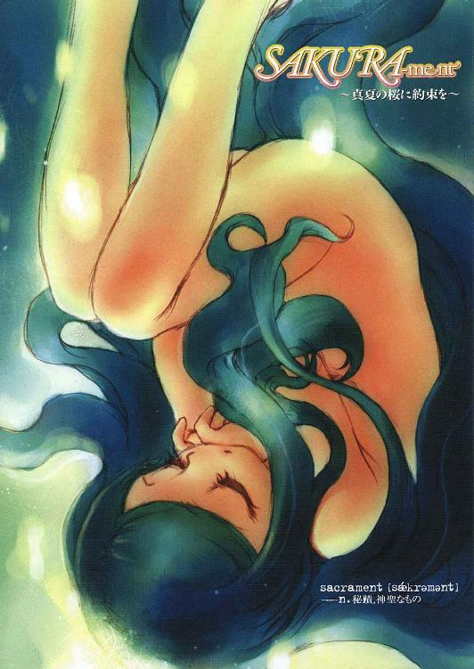
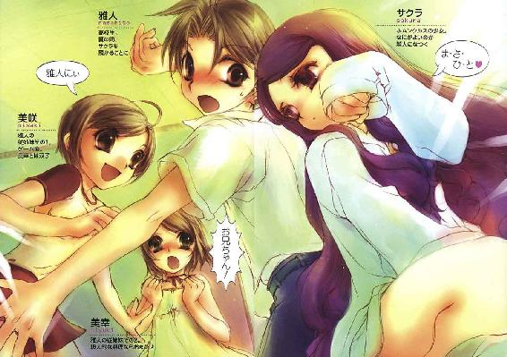
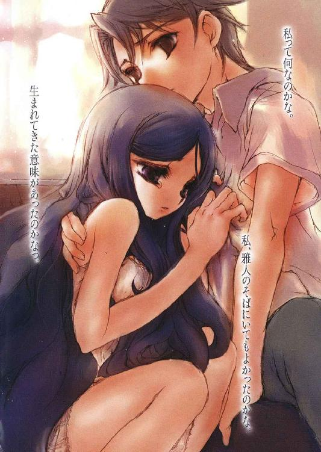
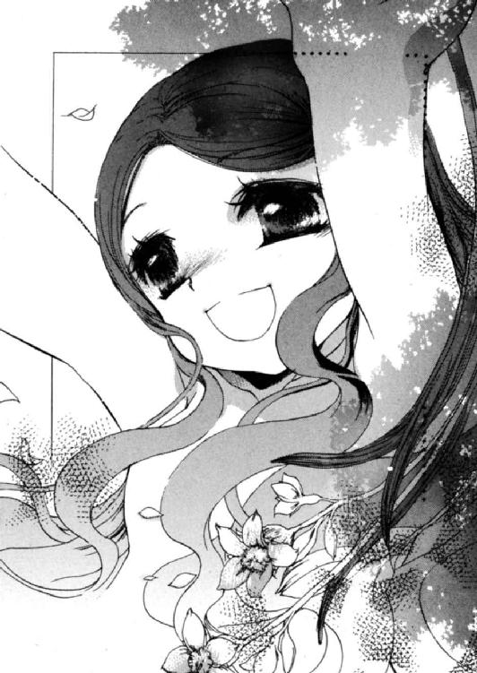
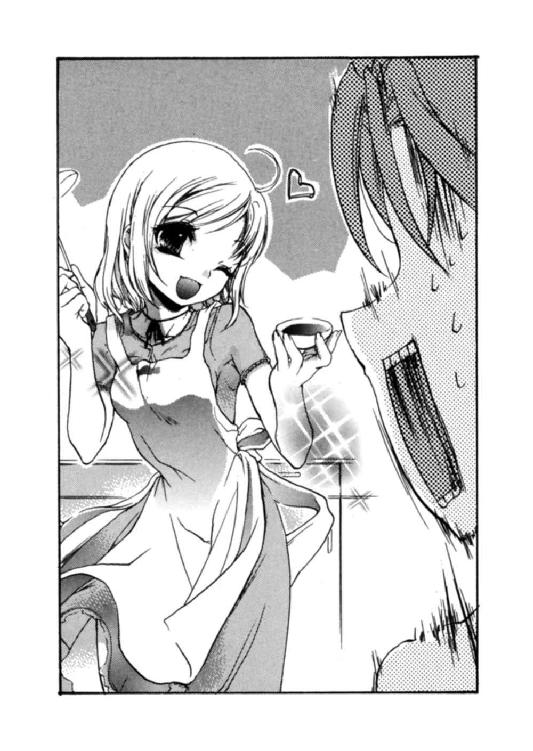
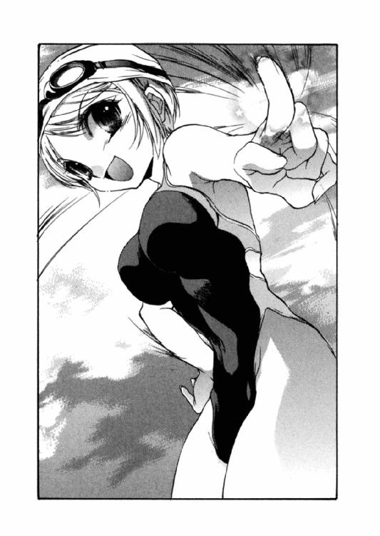
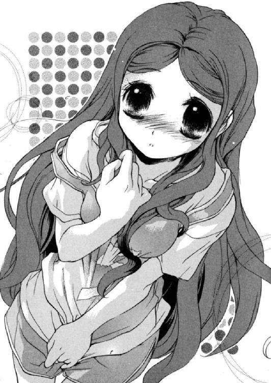
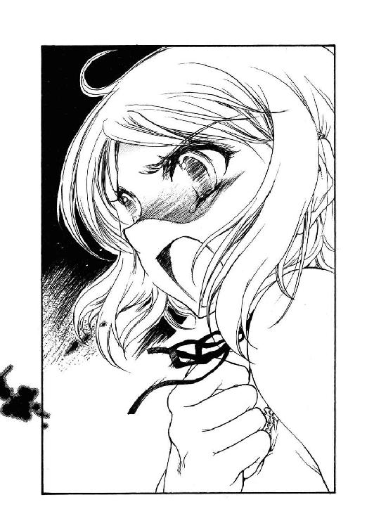
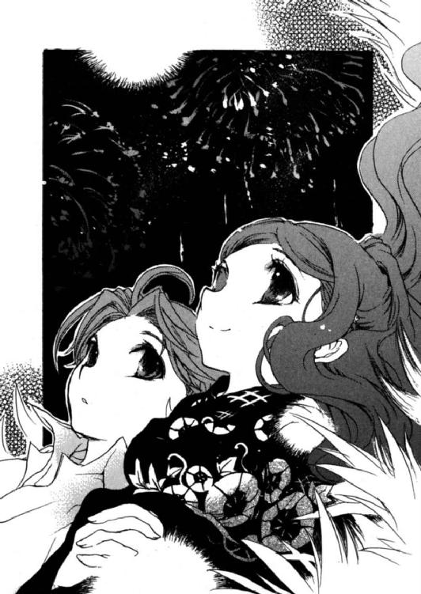
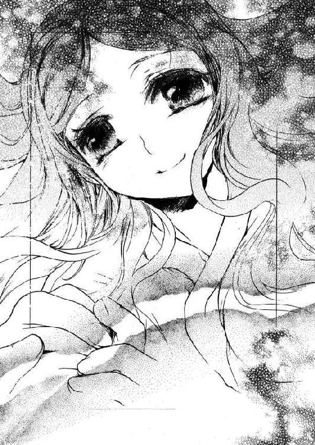

| SAKURA-ment ～真夏の桜に約束を～ (富士見ファンタジア文庫) | |
| 和井 契 | |
| (2014) | |



SAKURA-ment
～真夏の桜に約束を～
和井 契

富士見ファンタジア文庫
本作品の全部または一部を無断で複製、転載、配信、送信したり、ホームページ上に転載することを禁止します。また、本作品の内容を無断で改変、改ざん等を行うことも禁止します。
本作品購入時にご承諾いただいた規約により、有償・無償にかかわらず本作品を第三者に譲渡することはできません。
本作品を示すサムネイルなどのイメージ画像は、再ダウンロード時に予告なく変更される場合があります。
本作品は縦書きでレイアウトされています。
また、ご覧になるリーディングシステムにより、表示の差が認められることがあります。
口絵・本文イラスト さがのあおい
プロローグ
頭上からは容赦ない夏の日差し。足下からは立ち昇る放射熱。これだけ暑くしてもまだ飽き足らないのかと、自然に対して八つ当たりもしたくなる。気のせいか、足下の地面でさえ陽炎に揺れているように見えた。また汗が一滴、顎の先に向かって伝っていく。
スピーカーからチャイムの音が響く。だがそれに従う生徒は、当然ながらいない。玄関から流れ出る人波は、皆が皆、浮かれた様子だ。およそ皆がこの時間を待ち望んでいたのだから。
それは俺も同様だった。解放感を覚え、肩を軽く感じている。かと言って、この後に好き勝手ができるわけではないのだが。
下駄箱の前、クラスメイトと並んで靴を履きかえる。
「さぁて。これからどうする？」
「飯食って遊びに行く、だろ」
「カラオケか？」
「ゲーセンか」
「誰か女子も呼んでこいよ」
「お前がやってくれ。津下副委員長」
「何でこういう時だけそういう役どころを引っ張り出すかな君達は」
「便利だからだろうなぁ」
教室からここまで連れ合ってきていた面々が、楽しそうに言葉を交す。俺はそれを、ほとんど聞き流すようにしていた。
「お前はどうする？」
その中で、俺にも声がかけられた。
「俺は、今回は遠慮する」
「何だよ？ 折角解放されたってのに」
俺の返答に、クラスメイトが眉を寄せる。
確かにそのとおりだ。一週間かけて無難に終えた期末テストの結果、補習を受ける必要もなかった。堅苦しさのわりに大した意味のない終業式も終わった。今学期の成績も、俺個人的には充分見られる評価だった。俺とて羽を大きく伸ばしたいのは山々なのだが。
「折角だが先約があるんだよ」
俺は集団から一歩離れる。
数日前に、親戚から呼び出しを受けた。用件に思い当たる節はない。だが、断る理由もない。ただ、その呼び出された相手のことを考えるとあまり良い気分ではなかった。何となく嫌な予感がする。
一学期が終わった早々に一体何が、というものだ。自ずと乾いた笑いが浮かんでくる。
「用事終わったら来るかー？」
「ああ。時間があったらな」
そう答えて、俺は一人別方向に歩き出す。登下校に使用している相棒のＭＴＢを回収する必要があった。
数人の生徒とすれ違う。知った顔はいなかった。周囲には普段よりも活気があるように感じる。解放感の賜物だろう。蟬が鳴いていた。足下の影は狭く、ほぼ真下に収まっている。ワイシャツが肌に張りつく。夏真っ盛りだ。
空を見上げる。
日差しの強さに、うす靄がかかったような空。小さな雲が点々と浮かんでいる。意識が吸い込まれていくような感覚。周囲の喧騒が遠くに聞こえた。
夏休み。始まったばかりのその長期休業。
果たして、俺が抱いている感情は、期待なのかその反対なのか。
ともあれ、俺は約束の時間を考え、相棒にまたがった。
第一章 小さな温もり
出迎えは、とりあえず笑顔だった。
「よく来てくれたわね、雅人君」
俺はちょうど、病院のロビーのようなフロアにあるカウンターで、来客簿に自分の名を書き終えたところだ。瀬川雅人。空欄に自分の名を書き込んだ用紙を、カウンターの向こうの男性に差し出してから、背後を振り返る。
そこに馴染みのある顔があった。
牧田迪子。叔母である。昔は毎日のように顔を合わせた相手だが、最近は連絡をつけることすら滅多にない。今回のような呼び出しを受けたのは初めてのことだ。
相変わらず、どこか皮肉げに世界を見ているような眼差し。美人だと思うのだが、その辺に慣れないと、人によっては少しとっつきにくさを感じるかもしれない。髪を後ろで束ね、その長身を白衣に包んだ姿は、何某かの研究員さながらだ。
「研究員よ」
「あれ、声に出てました？」
「出てた。まあいいけどね。早速だけど、ついて来て」
清潔感に溢れた、あるいは温かみが希薄な屋内。冷風が肌を穏やかに撫でる。灼熱の屋外とは別天地だ。立っているだけでも心地いい。入り口近辺と同質の病院のような佇まいに人気はほとんどなく、今も自分と迪子さん、そして、背後のカウンターの向こうでテレビを見つめている受付兼警備員といった風体の男性しかいない。
音さえ限りなく少なく、迪子さんのヒールの硬い足音と、自分の靴底のゴムがすれる音だけ。通路を進むが、その静けさに変化は──
『きぃぃぇぇぇぇぇえええええっっっ！』
声が反響し、声でなくなっていく。聞いたこともない、身の毛もよだつ絶叫。思わず立ち止まる。残響音が閑散とした廊下を駆け抜けていった。
「......なんですか、今の」
微塵の動揺も見せずに歩き続ける迪子さんに追いつきながら、訊ねる。
「一階は憑霊研究の人がいるから」
「聞き捨てならない単語ですけど」
「まぁ、追々説明してあげる」
なんとなく、ここまで感じていた不安が大きくなってきた気がする。
「できるだけ早くお願いします」
「そう？ じゃあしてあげる。一階は和系の研究をしている人の区画よ。陰陽道、憑霊、神道、修験道、その他の民間伝承などもね」
耳を疑った。が、次に聞いた言葉で、ほぼ確信となる。
「簡単に言えば、和風オカルト系よ」
「......マジですか？」
「ええ」
立ち止まる迪子さん。その正面にはエレベーター。待つこともなくその扉が開く。白衣の背中を追って中に入る。迪子さんの指が三階を押し、エレベーターは上昇を始めた。
「......実験の手伝いをして欲しいって聞いて来たんですけど、ヤバ気な内容ですか？」
「別に？ そんなことないと思うけれど」
「さっきの叫び声、普通なことなんですか？」
「そうねぇ。ままあることよね」
「迪子さん、何の研究してるんです？」
「一階と似たような内容ね」
「......ここって、何の施設なんですか？」
「知らない方がいいこともあるわよ？」
屈託ない笑顔で言われる。つまり裏がある。最悪だ。冗談にしても最悪だ。
「俺、帰ってもいいですか」
「あら、手伝ってくれないの？」
「条件厳しそうなんで」
「話も聞いてないでしょ？ まぁ来なさい。恩人の頼みを邪険にしないの」
言っているうちに、エレベーターは三階に着いていた。ドアが開く。
フロアの内装は一階と大差ない。こちらには、大きく取った窓の際に、幾つか観葉植物が置いてある。全体として、やはり病院のような様相だ。
しばらく通路を進んで、迪子さんが立ち止まる。ポケットから鍵を取り出すと、正面の扉に向き、手早く鍵穴に差し込んで回す。
室内の空気は、今まで無人だったはずだが、通路以上に涼しい。
「ほら、入って」
迪子さんに手招きされる。その誘いが怖い。
だが、息を吞んで入った室内は、恐れていたほど突拍子もないものではなかった。
そう広くない部屋。壁に対し垂直に置かれた幾つかの書架、隙間もなく収まった書籍類。資料室を思わせる。奥正面の机の上にも本が塔を作っている。中にはかなり古いものもあるようだ。奥の床には、何かの実験器具らしき透明のビーカーやら何やらが転がっていた。
すぐ脇の本の背を眺めると、見慣れない名前がアルファベットで書かれている。
「ジャンバティス......デラ・ポータ」
かすれた字を勢いで読む。
（何だこのＦ１ドライバーとサッカー選手をくっつけたような名前は......？）
「ジャンバッティスタ・デッラ・ポルタ」
書架に隠れて姿の見えない迪子さんに訂正される。腕だけが棚の陰から現れ、伸ばされた指が、何かを示す。
その先、書架の裏に、応接用と思われるガラステーブルとソファが設えてあった。
とりあえず、指示通りにそこに腰を下ろすことにする。脇の窓から日差しが直接当たっているが、ガラスに薄いスモークがかかっているため、さほど暑く感じない。
「さて、と」
奥の机から歩み寄った迪子さんが、正面に座る。
「もう夏休みよね？」
「だから平日の昼に、ここにいるんでしょう」
授業の出席率は十分良い方だ。成績も補習を受ける危険性はない。でないと、身辺の事情から面倒なことになりかねない。
「手伝いを頼みたいのは、その間よ。ある実験の被験者になって欲しいの」
「断ります」
「どうして？」
俺の速攻拒否に、眉を寄せる迪子さん。
「俺は平凡な高校生ですよ」
「非凡な人間だって、ある段階までは平凡だったわよ。生まれた時から非凡なら、それはつまり異常だわ」
迪子さんは簡単にそんなことを言う。どうやら、もう少し具体的に理由を告げる必要があるようだ。
「さっきの話、一部は理解しましたよ。陰陽道とか憑霊とか。要するに......識神とか犬神筋とか、そういう方向でしょ？」
「よく知ってるわねぇ～」
心底感心している。
「偏った雑学はある方です」
大概、ゲームを足がかりに、暇つぶしで仕入れた知識だが。きっかけはともあれ、引っかかった単語を辞典やら何やらで調べて内容を吸収すれば、かなりの量になる。
「心配しないでも、私の研究は違うわよ」
「じゃあ何です？」
言ってから、失敗したと思う。
「興味ある？」
「まぁ......一応」
そう言うと、迪子さんの表情が目に見えて明るくなる。研究員とか、学者肌の人種は、この手の刺激に心底弱いというか、過剰に反応するのだった。
「私は生命誕生の研究をしてるの」
ようやく真っ当な研究のように聞こえる単語を迪子さんの口から聞けたと思った──
「ホムンクルスって知ってる？」
──途端に、またいかがわしくなったのは、俺の気のせいだろうか。
「......名前くらいは」
そんなものを扱ったゲームがあった。本当にこんな知識ばかりだが、まあいいだろう。
「ヨーロッパで錬金術が流行った頃の産物。詳しいことが知りたいなら、パラケルススの本でも読んでみて」
そんな本、聞いたこともないと言いたいところだが、声に出したらこの人は、そのものを持ち出してきそうだったのでやめておく。
「それに限らず、古今東西、世界にはそういった人工生命の技術に関して、多くの伝承があるわ。私の研究は、そういった内容の実践」
確かにオカルトだ。容赦なくオカルトだ。
正直、嫌いではない。だが、本当に関わるとなると、さすがに気が引ける。興味があるといっても、あくまで怖いもの見たさ程度の関心だ。ここまでくると、あやしい宗教に首を突っ込んでしまいそうな危機感を覚えた。迪子さんの人格を疑うわけではないが、適当な時点で話を切り上げた方がいい。そう心積もりを決めて、俺は先を進める。
「それで、バイト、手伝いっていうのは」
「さっきも言った被験者をして欲しいのよ。やってくれる？」
「だから、もう少し説明してください」
「説明を受けたら、やってもらわないと困るのよ。やってくれる？」
しつこく繰り返され、何やら肩の辺りに疲れが出てきた。もそっと重い。
「......はぁ。分かりましたよ。やればいいんでしょ」
かつて色々世話になった人の頼みだ。
「なら、ついて来てちょうだい」
立ち上がった迪子さんは、廊下に続くものとは別の扉に向かう。隣の部屋に繫がっているらしい。気は重かったが、俺もその後に続く。
迪子さんに従ってくぐった扉の向こう。
薄暗い、不気味な部屋だった。淡い緑に映る床。足下のみでなく壁面も同様の色に染められている。冷たい空気。エアコンで冷やされたものとは違うように感じた。どこがどう違うとは説明できないが、肌ではなく、体の芯を直接冷やされるような感覚。悪寒。何らかの実験器具や計器、資料類の束らしきものが、壁際の棚、床や、部屋の端の卓上等、諸所で山をなしている。その割に、部屋の中央部だけは、広い空間が確保してあった。
「何です、この部屋......？」
「私の実験室。そして、私の研究の集大成よ」
そう言って、迪子さんはあるモノを示す。
部屋の奥に設置されているのは、どこかで見たような物体。
それは別に、俺が実物と対面した経験があるというのではない。漫画やら映画などで見たことがある、巨大な試験管だ。正確には、試験管とは形状が異なっている。異様に細長い、人の背丈ほどもある楕円形のカプセル。垂直に立てられているそれの頂点には、天井から伸びるチューブが差し込まれていた。中には薄く緑に色づいた液体が満たされ、底部から小さな気泡が湧きあがっている。
部屋を薄く色付ける緑は、その試験管内を照らす光が、室内へ広がっているためだった。
さらに、その液体に包まれる、一つの影。
「な......」
息を吞む。
それは人の姿をしていた。かなり小柄だった。その身を覆うように広がる、青みの強い黒髪がゆらゆらとたゆたい、胎児のように四肢を折り曲げた小さな体は、容器の中央でほぼ静止している。
「......これって、何です？」
まともに声が出せたか心配だったが、問題はなかったらしい。目前の迪子さんが俺を振り返る。
「さっきも言ったけれど、ホムンクルスよ。私が確立した手法による」
「んな馬鹿な」
荒唐無稽もいいところだ。だが、笑い飛ばそうとした俺の声は引きつっていた。それは現実に、目の前にあるのだ。白昼夢を見ていない証拠に、高鳴った自分の動悸が、全身に響き渡るのを感じる。
「雅人君」
「何ですか」
「手、ちょっといい？」
促され、俺は意味も分からず手を差し出す。
迪子さんの手が、俺の指先に触れた瞬間。
「っ！ ちょ、何すんですか！」
鋭い痛みを感じ、慌てて手を振り解く。
見れば、指先に小豆ほどの血の塊が膨れ上がり始めていた。迪子さんは俺の抗議を無視し、その血を綿棒のようなものでさっと拭き取る。わずかな出血は、その後も続いたが、俺はそれを無視した。
迪子さんが例の容器へ早足に歩み寄る。その前でしゃがみ込むと何やら作業を始めるが、多少の距離もある上、背後から見ているので、その内容は分からない。たとえ見ていても、分からなかっただろうが。
しばらくして、手を止めた迪子さんが立ち上がり、容器を見つめた。
「......？」
同じように、俺も迪子さんの背中からそちらへ視線を移す。
細長い容器の中に動きがあった。底部から細かい気泡が発生し始める。断続的に生じるそれは、まるで鼓動だ。泡が生まれる周期は次第に短くなり、空気の球のサイズも大きく変化していく。沸騰したかのように、猛烈なものへと。ゴボゴボという音が室内に響く。
俺は呆気に取られるばかりだった。目の前の出来事に圧倒されて。
容器の中が気泡に埋め尽くされたかと思った瞬間、強烈な光が辺りを照らした。
「っ！」
思わず顔を背ける。
音が響いた。金属が割れるような、甲高い音。耳の奥に突き刺さる。
ゆっくりと、背けた顔を正面に戻す。閃光が焼きついてしまった網膜は、なかなか回復しない。
ようやく視界がまともになった頃。部屋内の変化に気づいた。
天井の照明が灯っていた。あの容器が、縦方向に真っ二つに割れていた。左右に開いた器、天井からチューブがぶら下がり、小さく揺れている。
容器のすぐ手前、床にうずくまる小さな体がある。
可能性は一つだ。だが、液体に包まれていたはずの体は、見る限り濡れてはいない。長い髪がさらさらと、背中、肩から体の脇に落ちていく。その体が小さく動いている。
手足で体を支え、ゆっくりと立ち上がろうとする。が、バランスを崩して顔からべちっと倒れこむ。生まれたばかりの馬か何かを髣髴させた。長い髪が邪魔をしている。動きにくいだけでなく、視野も狭めていそうだ。
間近にいる迪子さんは、見下ろすだけで、手を貸そうとも抱き起こそうともしない。
だが俺も、迪子さんを批難するような余裕はない。状況を把握しかねていた。
何度も何度も試行を繰り返し、その小さな体はようやく立ち上がる。
身長は小学生低学年、あるいはそれより下ほどだ。本来は可愛らしいであろう顔が、今は立つことに神経を集中しているためか、ひどく硬いものになっている。
その外見年齢に恐ろしくそぐわない、不器用な体。一歩踏み出すことにも難儀しているが、何かに歩み寄ろうとしている。
その姿に、思わず手に力が入る。
強張った表情で、小さく足を踏み出す。それだけでバランスを崩しそうになるが、倒れはしなかった。おぼつかない足取りで迪子さんの脇を通り過ぎ、ゆっくりと近づく。静寂に、不規則な足音が響く。だが、一歩踏み出す毎に、その足取りは確かなものに変わりつつある。
その子は、近づいていた。思わず俺も、一歩踏み出した。
少しずつ、近づいて。
俺のもとに辿り着いた時、その子は初めて笑顔を見せて、嬉しそうに俺に抱きついた。俺の腹の辺りに、その笑顔をうずめる。
俺自身、思わず嬉しく思ってしまう。誉めるようにその頭に軽く手を乗せ、撫でてやる。するとそいつは、手の下でもう一度顔を上げ、目を細めた。それから飽きもせず、俺の体に頰を寄せる。一瞬、自分の中に小さく暖かいものが灯った気がした。
「あの......迪子さん？」
一連の様子を見守っていた迪子さんは、小さな姿から俺に視線を移すと、唐突に表情を緩める。
「じゃ、頑張ってね」
「は？」
この後、迪子さんから事情を一通り聞き終えた際には、手遅れだった。

俺に抱きついた奴に、用意してあったという簡素な白い衣服を纏わせて、最初に入った部屋の応接セットに戻っていた。
そいつはソファに座る俺の、さらに膝の上に座り、実に大人しくしている。はたから見れば微笑ましいかもしれない状態で、俺は先の出来事に多大な困惑を感じつつ、膝の上の重みに微細な鬱陶しさを覚えつつ、迪子さんと対面していた。
「随分と懐かれてるわねぇ」
「お褒めいただいて光栄ですけどね......」
決まりが悪いものを感じながら、俺は胸元にある顔を覗き込む。色白の横顔。その瞳が何を捉えているのかは分からないが、リズムを取るように小さく素足を揺らしている。
その素足。詰まるところ迪子さんは、こいつの服は用意したが、靴類はすっかり忘れていたらしい。抜けたところのある研究者だった。
一つ一つ確認を取ることにする。
「こいつは何なんですか？」
「ホムンクルス。言うなら人造生命ね」
「これって、とんでもないことなんじゃないですか？」
「世間一般的には、そうね」
平然とした態度。俺はその振る舞いが全く理解できない。
「いくら俺だって分かりますよ。クローン技術だってようやくって段階でしょ。命を作るなんてこと」
「クローンのような複製とは異なるわ。人間という存在の観念実在に接触させる事で、一個体として構築させたものよ。身体的に脆弱な時期は、外部からの刺激を実質皆無にして経過させた上に、あなたを最終的な誘発因子としたから、今は、普通の人間と同じ外見年齢には及ばない、生まれたての存在」
「んなわけの分からない説明が聞きたいんじゃなくって」
「なら、そうね。錬金術に誤解があるのかしら。錬金術というのは、ただ金属変性を目的としているわけじゃないのよ。世間では夢物語っていうことになっている、卑金属から金を生み出す術の探求。真偽や成否は別として、それは、卑金属の内部に封じられた貴金の魂を救済すること。その過程は、錬金術師自身の魂の昇華に照応する。そう解釈すれば、別に生命を扱うことに矛盾はないわ」
「......結局、わけが分かりませんけど」
「細かい技術については説明できないわねぇ。オカルトの語源って知ってる？ ラテン語で『隠されたもの』とか、イタリア語の『隠す』だっていう説があるわ。つまり、大半がそういう性質なわけなの。オカルトそれ自体も」
「つまり、俺もそういうことに突っ込んだ説明が欲しいんじゃないんですが」
「なら、神を怖れない所行とでも言いたい？」
この問い返しには、答えに窮した。
現実に目の前にあるもの。それは認めざるを得ない。だとすると、技術を理解できないなら、批判対象はそういった思想面しかない。だが俺の中には、その議論に決着をつけ得るほど確かな思想など存在しない。特に、ここまで確かなものと直面しては。
迪子さんは、どこか不敵な笑みを浮かべる。
「私は神なるものの存在は信じている。けれど、信仰はしていない。人は、人が見いだした全ての技を、人の責により、全身全霊をもって御することこそ義務、と考える」
この辺りが、迪子さんの言葉の中で最も理解しかねた内容だった。
ふっと、迪子さんが表情を緩める。
「私の技術や思想を理解しろとは言わないわ。......あなたの素養や生活力を見込んで頼むの。しばらく、その子の面倒をみて欲しい。どうしても嫌なら、仕方ないわ。その代わり、生まれた命は、その時点で断たれる。この子は、あなたのそばに在るべく発生、誕生した生命だから。今となってはもう、あなた以外の誰かのそばでは、生きていけない」
繰り返される、ある言葉。俺は慎重に言葉を発する。
「本当に、命......なんですか」
「そうよ。まだ何も知らない、人とも違う、心すら希薄な命だけれど、ね」
その外見とか直に感じている肌の温もりとか、そういったものの影響もあるのだろうが、一つの言葉が重かった。
その重みが、今も全て俺に預けられている。俺を信頼しきっているように、小さな体を預けてきている。
みだりに断ることはできない。
「迪子さん......って、いわゆる魔法使い、みたいなもんですか？」
「そう思ってくれて結構よ。空を飛んだり手から火を出したりは、できないけれど」
場を繫ぐため、適当に言った言葉をあっさりと肯定された。そして、穏やかに笑顔を見せた迪子さんは、つけ加える。
「ま、らしく言うなら、やっぱり錬金術師ね」
俺の胸元のそいつは静かにしている。状況に戸惑っているわけでもなく、眠っているわけでもなく、真っ直ぐに正面を見ている。
「その子の名前も、あなたがあげてね」
「サクラ」
「え？」
ふと思いつきを口にした。予想外に早い反応だったためだろう。迪子さんが一瞬ポカンとする。
自分でも驚くほど明確に、その言葉は俺の頭に浮かび上がっていた。
「サクラメント。で、サクラ」
秘蹟。聖性。そんなような意味の宗教的な英単語、だと思った。確か。多分。
「なるほど。面白いかもね。......いい名前をもらったわね。サクラちゃん」
迪子さんがそいつに微笑みかける。
それが自分の名という認識がない為だろう。サクラは迪子さんを不思議そうに見つめ返していた。
●
「こいつの面倒を見ろ......か」
傾き出した日光が差し込む自室で、一人漏らす。正しくは、一人ではない。ベッドに腰かけている俺の膝の間に、ちょこんと座っているサクラがいる。俺の体に背中を預けて、じっとしている。
窓から入り込む風は、そろそろ昼間に蓄えた熱を失い、涼しく感じられる。エアコンは元々設置していない。置いてある扇風機も、何となく動かす気がしなかった。
サクラがいる都合で、俺達は迪子さんの車で家まで送ってもらった。俺の自転車は別途運んでくれると言う、笑顔の迪子さんだった。無事に帰ってきてくれと切に祈ることしかできない。
それに目下、相棒のことよりも、先に考えてしまうことがある。
たった数時間前の出来事。
正直、今でも迪子さんの話を完全には信じていない。その一方で、あの不可解な事態に高ぶった神経は、今も熱を残している。全てがピンと来ない。だが、その存在は俺の前にいるのだ。自分が何を疑っていて、何を信じているのか、混乱しそうになる。
俺はサクラの細い手首を持ち上げた。
その先にある手のひら。俺の手に収まる小さな、人肌の温もりを帯びた手。そのつけ根から、一本一本の指を確かめるように、俺は親指の腹を這わせる。軽く曲がった指に微かな抵抗がある。
サクラは俺と同じように、重なっている手と手を眺めていた。俺が手のひらの真ん中を軽く押し込むと、その親指を軽く握る。
顔を覗き込むと、サクラは握り締めた俺の指をじっと見つめていた。
ふと思い返したのは、迪子さんの言葉だ。
『──この子は、あなたのそばに在るべく発生、誕生した生命だから──』
サクラの小さな手を放して、後ろに倒れるようにベッドに体を投げ出す。
断る気になればできた。あの場から退散すれば済んだ。それをしなかったのは──
（あんなこと言われりゃ、さすがにな......）
迪子さんの、ほかの説明を反芻する。
『データ収集はこっちでするから気にしないで。何か大きな変化があったなら、ここを訪ねてちょうだい。それ以外は、あなたがしたいように接してくれて構わないわ。まめに世話を焼くも良し。放って置くも良し。まぁ、最低限のことはしてもらわないと困るけど、あなたなら大丈夫でしょうし』
何が大丈夫なのかは分からない。それに加えて、もう一つ。
『夏休み、どうせゴロゴロダラダラ過ごすんでしょ？ しっかり面倒見てあげて』
幸か不幸か、有難いお言葉通り、夏休み中の予定は皆無に等しい。
と、天井のみが映っていた視野に、幼い顔が入り込んできた。
「......どうした？」
問いかけても返事はない。きょとんとした顔で、俺を見下ろしている。
そのあどけない顔を視界に収めたまま、考える。
（しかし、俺に預ける理由は何なのかねぇ）
その点に関してのまともな説明はなかった。
理由は幾つか浮かぶ。親類で、素性も知れていて、個人的にも良く知る部分がある相手で、実質一人暮らしだから、俺本人以外に気兼ねがない。
迪子さんと俺の関係は、ただの親戚筋ではない。過去、中学卒業までの数年間、俺はあの人の家に厄介になっていた。同居中も、迪子さんが仕事に執心するあまり、家事は俺がこなすことが多かった。その辺りも汲んでいるのだろう。ああいう仕事というか何というかをしていることは、今日まで知らなかったが。
迪子さん自身がこの件の被験者にならない理由も分からない。まさか、面倒だからとかいうこともない──とも言い切れないか。既に何度目かの実験なのだろうか。それにしても、あんな施設があるのだから、適切な人材を探す方法は色々ありそうなものだ。となると、やはり何らかの理由で俺が押しつけられたような気もする。
では、俺ごときに任せるのは何故か。俺の素養がどうとかも言っていた。おそらくは迪子さん管轄あっち系のものなのだろう。はっきり言って嬉しくない。その上、俺自身に自覚は皆無だ。
とは言え、既に諸経費として、一高校生には過分な金額を渡されてしまった。最低限の責任は果たさなければならない。
なるようになる。サクラの顔を見つめたまま、そう自分に言い聞かせる。
なお、迪子さんの話だと、こいつは女の子寄りらしい。曖昧な『寄り』という表現は、その存在としての不確定性が影響しているから性別の完全な固定は今後の成長過程が云々、とか言っていた。その意味はほとんど分からなかったが。
（基本的なことからやってみるか）
それは、ふとした思いつき。
俺は体を起こした。それからサクラの体を持ち上げて、ベッドの上、正座して向き合う。
そして、俺は自分の顔を指差す。
「俺は雅人。瀬川雅人 ま、さ、ひ、と」
ゆっくりと、大きく口を動かして自分の名を発する。
次に、サクラを指差す。
「サクラ。さ、く、ら」
極力分かりやすく説明してやったつもりだ。というか、これ以外の方法が思いつかない。とりあえず反応を待ってみると──
サクラが、ゆっくりと口を開いた。俺の動きを模写するように。だが、音が出ない。サクラが不思議そうに首を傾げる。
「口動かすだけじゃなくて、こう......喉をあーっと......いや、これじゃ説明にならんか。だから、声帯を震わせるんだよ。っても分かるわけないか。俺だって、名称は知っててもそれがどこにあるかよくわからん。こう、なんつーか、しびびび......？ いや、違うか。ぶるぶるって程でもないしな......あー、あー」
俺はつい自分の喉に手を添える。発声はあまりに自然で基本的な行為で、解説できない。
説明になっていない説明から何かを把握したわけでもなかろうが、サクラは自分の喉に手をやる。
何度も何度も試行錯誤していた。それを眺めていた俺には、不思議と苛立ちも飽きもなかった。
「......ぁ」
「お？」
しばらくして、サクラの口からかすれた音が発せられた。思わず俺は笑顔になる。そのことが激励になったのか、サクラはよりいっそう必死に声を出そうと努力し始める。
言葉にならない声が唇の間から漏れる。だがそれは、確実に言葉に近づきつつある。
やがて──
「さ」
一文字発しては口を開きなおすという──
「く」
拙くお粗末な発音法ではあったが──
「ら」
サクラははっきりと、自分の名を自分の口から発してみせた。その声は、よく透った小鳥の囀りのようだった。
「ははっ。よくできた」
サクラの頭を撫でてやる。サクラは、手の下から、心地よさそうに目を細めたまま俺を見上げて、
「ま、さ、ひ、と？」
そう俺の名を、確かめるように呼ぶ。
「ああ。頑張ったな。サクラ」
俺が頷き返してやると、サクラはこれ以上ない嬉しそうな笑顔を見せてくれる。
その空間には、不思議な充足感があった。散々サクラの頭を撫でてやってから、自分が何となく恥ずかしいことをしていることに気づいた。
インターホンの音。
階下で騒がしい物音がした。来客らしい。それにしては少々騒々し過ぎる気はするが。勝手に玄関から上がっている気配がある。
（推測は立つけど、な）
膝の上に座っているサクラを、脇に除ける。ベッドの際に下ろすと、バランスを崩したサクラは、後ろ手に体を支えて俺を見上げた。
「ちょっと待ってろ。部屋は出るなよ？」
そう告げてから部屋を出、階段を下りる。最後に扉の隙間から見た限り、サクラは言いつけどおりに、ベッドの上から動く素振りを見せていなかった。
階段を下りる途中で、想像通り既に玄関から上がっていた気の早い客人と目が合う。
「やっほー雅人にぃ！ 遊びに来たよー。元気してるぅ？ 早速だけどゲームしよっ！」
開口一番捲し立てる。その声を聞いた途端、疲れが出る。
ショートボブの、ボーイッシュな女の子。少し吊り目がちで、それが全体の雰囲気に馴染んでいる。服装もキュロットにＴシャツと、着飾ることよりも動きやすさしか考えていない。以前そのことについて訊いた時には、その通りだと言っていた。
俺は頭を搔く。
「美咲......もう少し静かにしてくれ。俺にも物思いに耽りたい時だってあるんだ」
「えー？ らしくないねぇ。似合わないし無駄だから止めといたほうがいいと思うけど」
言ってくれることだった。
「夏休み早々に従兄弟の家に遊びに来るってのは、そんなに暇なのか。お前」
「何言ってんの。わざわざいつぞやの格ゲーのリベンジさせに来てあげたんじゃない」
「やられたのは、お前の方だ」
「噓言ってると、舌がどんどん伸びてっちゃうんだよ」
と、そこで玄関の扉が開く。
「噓ついて伸びるのは鼻。それに、噓ついているのもあなたでしょ」
そう美咲に釘をさしてから、後ろ手に玄関を静かに閉める、もう一人の女の子。
俺の前に、同じ顔が二つ並ぶ。
「久し振り。雅人お兄ちゃん」
笑顔で小首を傾げる。こちらは肩ほどまで髪を伸ばしている。顔のつくりはほぼ同じだが、こちらは穏やかな印象だ。服装もおしとやかで涼しげな、白いワンピース。
「ああ。久し振り美幸。元気だったか？」
「うん。私はお兄ちゃんのことよく見てたんだけど。自転車で走ってるところ」
「そっか？」
俺の通学路上には、美幸達が通う、俺の母校でもある中学校があるから不思議ではない。
「教室の窓から見えるから。あれで間に合ってるのがすごいね。高校の授業って、そんなに始まるの遅いの？」
「気合次第だな」
「体に悪くない？」
「それは慣れだな」
乃木美咲、美幸姉妹。この双子の家庭は、迪子さんと並んで昔からつき合いが深い親類だ。さしずめ準家族、準幼馴染みといったところ。そのつき合いがこの年まで続いているというのも珍しいことだろう。俺が数年間、居候をさせてもらっていたのもその理由だが。
高校に入ってから、俺は一人暮らしをしている。父親は昔から単身赴任が多く、母親は俺が幼い頃に他界。そのため、中学までは幾つかの親類の家に世話になった。
父親は、数日前の連絡で、今年の夏休みは帰れないと言っていた。それならそれで構わなかった。面倒がなくていい。
母さんの死因は覚えていない。何があったのか、どういった経緯だったのか、記憶に残らないほど幼い頃の話ではないはずなのだが。かと言って、その死因を忘れてしまっていること自体も含め、俺は気にしてもいない。別に虚勢を張っているのではない。純粋に気にならないから、気にしない。
ともかく、美幸達の家は、迪子さんに次いで長い時間、俺が世話になった家庭だ。そういう理由で、美幸達の母親は今でも、俺に気を遣ってくれている。
自らの身上を、時折自分でも不思議に思うほど引きずっていない俺を、だ。
「......なんか私と対応が違うんですけどー」
恨みがましい視線の美咲。
「丁寧には丁寧に返すのが礼儀だろ」
「どーせ私は粗暴ですー。って、喉渇いたから、何かちょうだいね」
言うが早く、美咲が居間に消える。勝手知ったる他人の家だった。母親の目もなく気ままにいられるからか、二人はよくこの家を訪れる。その客を、大概俺は適当に扱うのだが。
「ふむ......で、何しに来たんだ」
「いつものことだから、あまり気にしないで」
「叔母さんに言われて、様子を見に来た、と」
美幸が頷く。いつものことながら、気を遣ってくれすぎだ。苦笑すら浮かぶ。
「一学期の成績は問題ない。親父からの振込みも定期的にある。健康状態も良し。何の心配もいらないって──」
言い切れない。今、俺には預かっている奴がいる。それも、あまり普通じゃない奴が。よく考えると、このタイミングの来訪は、ピンポイントではなかろうか。
なかなかに良くない意味で。
「......言っておいて、くれ」
「何かぎこちないけど......うん。言っておく」
「ちょっと......居間で待っててくれ」
「え？」
「待っててくれ。テレビでも見て。俺の部屋には来ずに」
困惑気味の美幸に言い残して、俺はそそくさと階段を上がった。
サクラのことをどう説明したものか。
美咲はいい。力押しでどうにかなる。確実に誤魔化せる。だが美幸はそうもいかない。何かを気にすると、なかなか頭から離さない。納得するまで突っ込んでくる。最低限の前準備が必要だ。
（いかに弁明ないし、偽装したものか──）
等々考えながら、自室の扉を開けるなり。
「何やってんだお前はー！」
目に飛び込んできた光景に、俺は思わず叫んでしまった。慌ててベッドに駆け寄る。
サクラは何故か、ベッドの上でタオルケットを体に巻きつかせ、自分自身を拘束していた。首が変に絞まっているのか、青紫に近い顔色で、苦悶の表情。
とりあえず、首周りだけでも手早く緩めてやる。サクラの口からほうっと吐息が漏れた。
ひとまず安堵、した途端。
『おにーちゃーん？』
階下から、何やら心配そうな美幸の声。
「何でもねー！」
声を張り上げながら膝をつき、サクラからタオルケットを剝ぎ取ろうとする。着衣が乱れ、布が妙な絡まり方をしている。
「えぇい、変に器用なことをっ」
と、扉が開く。
「お兄ちゃん？......！」
室内を見るなり、美幸が硬直した。
肩にかかる髪とスカートの裾が、柔らかい風に小さく揺れるだけ。口を半開きにして、呆然としている。視線は、俺と、俺の前で座っているサクラに注がれている。ちなみに俺の手は、サクラの服の乱れを正してやる動作の途中だ。見ようによっては、脱がせる途中と見えなくもない。
詰まるところ、まともには見えない。
「......お兄ちゃん......まさか」
「はい？」
眼を見開いた美幸が、怯えたように戸口から後退りする。そして、おぼつかない動作で一点を指差し、わなわなと震える唇で言う。
「..................隠し子？」
「んなわけあるかっ」
「じゃあ、快楽誘拐魔」
「うわ、なんかものすごい目的性だなそれ」
「じゃあ何」
次第に、美幸の声が冷たいドスの効いたものに変化しつつあった。
「話すと、長くはならないが多分お前は理解できない」
自分でも上手く説明できる自信がない。
「なら納得できるように話して」
「いや、無理だって」
「じゃないと近所の住民に聞こえるように連続幼児誘拐魔がいますって大声で叫ぶ」
真顔の美幸は腹の底に響く声で淡々と言う。
（こ、怖ぇ............）
美幸らしくない起伏のない口調が、切羽詰まっている心理を知らせる。そして、ものすごい目で俺を見ている。
俺は頭を抱えたくなった。美幸は、思い込むととても頑固だ。妙な行動力もある。中途半端に誤魔化してここを離れたなら、明日以降、俺は近所の井戸端会議で話の種になるだろう。幼児誘拐の疑惑がかけられて、だ。
「......どうしても？」
「どうしても」
きっぱりと、美幸。頭が痛む。
俺はサクラの服をととのえてから、ベッドに座り込んだ。するとサクラは、俺の膝の上に乗る。そこがサクラの指定席であるかのように。俺はその体を少し持ち上げ、腰を落ち着かせてやる。そうすると、サクラは俺の胸に身を預ける。俺自身が背もたれだった。
「迪子さんから預かった」
「迪子さん......って、牧田の伯母さん？」
「ああ」
「伯母さんはずっと独身なんだから、子供っていないでしょう？」
俺は頷く。そう聞いているし、居候させてもらっていた期間もそうだった。
まさか、俺達の記憶にない時期に色々あったわけでもない、とも言い切れないのか。あの人は謎だらけだ。少し変なところも含めて。
「じゃ、その子は？」
「詳しいことは迪子さん本人に聞いてくれ。俺は預かってるだけでな」
美幸は状況を把握しかねているのか、口を閉ざして少し視線を泳がせている。
すると、今度は階段を駆け上がる足音。ノックもなく、扉が勢い良く開け放たれた。
「何やってんの？ 二人とも......三人？」
目を瞬かせる美咲。短い後ろ髪に一度指を通してから、不思議そうに俺の腕の中にいるサクラを見る。
「誰、その子？」
「知り合いから預かった」
「そうなんだ。かわいーねぇ。名前は？」
「サクラ」
「あたしは美咲。よろしくー。サクラちゃん」
ベッドに歩み寄って、俺の抱いているサクラの頭に手を乗せる。美咲はひとまず、これで終了。助かることだ。
サクラは例によって、きょとんとした顔で美咲を見ていた。何故か知らないが、俺以外の奴には反応が薄い。
「......っと、よく考えたらいい機会だな」
「ん？」
「？」
同じような顔が、揃って怪訝顔。
「ちょっと、つき合ってくれないか？」
俺はサクラを抱いたまま立ち上がった。
小一時間後。
俺達はある店舗の前にいた。町の中心から外れた量販店。扱う品物は幅広い。生ものから衣料品、習字の半紙まで。
何とか日が暮れる前に到着した。西の空は、茜色というより藍色に近い。
「手元にない必需品なんだ。急なことだから、こっちで一式用意して欲しいと頼まれてる。が、俺一人だと、ちょっとな」
説明し、サクラを抱えたまま頰を搔く俺を見て、連れの双子の従姉妹が笑う。
「なるほどねぇ」
「まぁ......そうかもしれないわね」
美咲は含み笑い。美幸は苦笑。
「早速だが、まず靴だ」
幼稚園生か小さな小学生くらいの背丈があるサクラをずっと抱いているのも、疲れることだった。
一階フロアに入ってすぐの靴屋。激安ワゴンセールの中から一足、紐やテープのないシンプルな子ども靴を引っ張り出して、レジに向かう。店員の笑顔に含みを感じ取ってしまったのは、意識し過ぎだろうか。
「雅人にぃ、サイズ合ってる？」
「そこまでおざなりじゃない。大丈夫だ」
美咲に返して、サクラを床におろす。昼から抱いたりしているうちに、おおよその足のサイズは見当がついていた。
すぐに靴を履かせたが、不慣れな感覚のためか、サクラは少し居心地悪そうだ。
「うん。大丈夫そうね」
サクラの小さな足、つま先を指で押し、サイズを確かめていた美幸が太鼓判を押す。
これで支度が整った。床に立ったサクラは、俺の足もとに擦り寄って、俺の服の端を摘んでいる。
「この後は任せていいか？」
気が引ける段階へ本格的に突入するためだ。
双子の従姉妹が顔を見合わせる。
「あたしは構わないけど？」
「私も......構わないけど」
ところが、肝心要が動かなかった。
「サクラ、この二人と行ってくれないか？」
サクラは俺のズボンを握ったまま動こうとしない。その表情が硬い。大した変化ではないかもしれないが、俺はそう感じた。緊張しているのかもしれない。
「こいつはひょっとして......俺も行かないと、駄目？」
「あっはっは。みたいだねぇ」
他人事だと思って楽しそうに笑いながら、美咲が早々に俺に背を向ける。美幸は今もって苦笑している。
「......微妙な気分だぞ」
子供服売り場。女の子連れ。それも大小三人。何か入りづらい。が、ここは仕方ない。
「はぁ......行くか。手早く済まそう」
諦めて、四人で向かう、上の階。
小さな歩幅のサクラは、手を俺と繫いではいたが、数時間前からは想像もできない確かな足取りを見せた。時折ちょこっとつまずくが、もう足の動作だけに意識を注ぐ必要もなく、俺の顔を見る余裕もある。不思議な奴だった。乗り込んだエスカレーターの終わりは、俺が持ち上げて降ろしたが。
上がったフロアには、ハンガーがずらっとかけられたポール。棚には、カジュアル寄りの衣類が大量に並べられている。その中の一区画。左右に並ぶ小さい衣服。ハンガーにかけられ、マネキンに着せられ。かつては自分も着ていたはずのサイズだが、今は玩具のように見える。よもや、この年でこんなところに用ができるとは予想していなかった。
いつの間にか、美幸と美咲が散っていた。見回すと、それぞれ別の場所で品物を物色している。かなり真剣に。あの二人のことだから、それぞれタイプが違う服を選ぶだろう。
着る本人の好みに合うかはいざ知らず。
「サクラ。服、買うから、気に入ったのがあったら言えよ？」
手を引かれるままに歩くサクラに話しかけてみるが、反応らしい反応はない。俺を見上げて、小首を傾げるだけ。陳列品には興味すらなさそうだ。
「まぁ......いいけどな」
そのまま無目的にふらふらと棚の間を歩き回る。子供服のことはよく分からない。女物はなおさら。美幸達が同行してくれたことは幸いだった。
ふとサクラが足を止めた。見ると、カーテンの開いた試着室の中を、不思議そうに眺めている。
「どうした？」
声をかけても応えがない。サクラはじっと見つめていた。そこに映りこんだ自分の姿を。
「......鏡、か？」
奥の壁にある大きな姿見を、不思議そうに眺めている。
赤ん坊みたいな奴だった。いや、似たようなものなのか。
知識や精神と外見や身体能力とが、嚙み合っていない。容姿や立ち居振る舞いとは不釣合いに、迪子さんの言っていたとおり、まだ生まれたばかりの心。
サクラは俺の手をするりと抜けると、狭い部屋に入り、ふらふらと鏡に近づく。そして、そこに映った自分と掌を合わせる。今度は左右に体を揺らす。それを繰り返した。
何をしているのかと思ったが、やがて分かった。どうやら鏡に映る俺に触れたいのだが、自分自身が邪魔しているらしい。面白いのでしばらく観察する。
正面を見たまま横にスライドし、その度に自分に邪魔される。かなり必死になっている。次第に不憫になってきた。
「サクラ」
名を呼ぶと、ぴたっと動きを止める。それが自分の名前なのだという認識は生まれているようだ。ゆっくりと振り返る。
「何も鏡に映った方に触りたがらんでもいいだろ。ほら」
膝を折ってから、手を差し出す。
「まさひと」
俺の手を見つめたサクラは、俺の名を呼んで、ぱっと表情を明らめた。ほんの短い距離を駆け寄って、予想外に俺の手をすり抜ける。
「っと」
ぱふっと俺の体に抱きつく。手を伸ばして、そこにいることを確かめるように、ペタペタと俺の顔に触れる。
「こらこら」
程々にさせるべく、手を摑んで止めさせる。すると、サクラが指を絡めてくる。重なったその手をじっと眺めてから、嬉しそうに笑った。
鏡の自分とも鏡の俺とも、できなかったこと。
何となく、サクラを抱き上げて立ち上がる。その姿も鏡に映っていた。サクラもその姿を見ていた。この時に気づいたが、俺自身も嬉しそうな顔をしていた。
「......こういうのも、そんなに悪いもんじゃない、かもな」
そんな風に感じる。
「雅人にぃ」
「お兄ちゃん」
「ん？」
振り返る。美咲と美幸が立っていた。
「............何だ、それは」
二人が抱えているものを見て、溜息が漏れる。
「そりゃー、決まってるでしょ」
「試着してもらおうと思って」
当然とばかりに言う美幸と美咲の両手には、余るほどの服が収まっていた。
思わずサクラの顔を見つめる。閉店時間までに、終わるといいのだが。
数十分にも及ぶ試行錯誤の結果。いや、双子姉妹に言わせれば、短時間だそうだが。
サクラが着た、セイラーを思わせるデザインの子供服。確か、美咲が選んだ服。黒いラインが入った襟、地は白。それに加え、長い髪をポニーテールにして、髪を留めた部分を白いリボンで飾った姿。その服をそのまま着て、その姿で帰ることになった。当然、それ以外にも数着を購入する。
閉店時間には、間に合った。
●
「はぁー。やれやれ」
右手にはサクラの手を繫ぎ、左手に紙袋を三つほど持ち、俺は帰宅した。明かりを点けた玄関に、どさっと荷物を下ろす。
「それで、お前はどうするんだ？」
後ろの美幸に訊ねる。
「え？......っと。あ、あはは」
「笑ってどうする」
もう外は暗い。陽の残光もかなり前に消え去っている。美幸をこの時間に一人歩きさせるのは、幾ら何でもまずい。とか言っている一方で、美咲は何故か、一人急いで帰宅した。止める間もなく、そそくさと。
「あ。電話、貸してほしいな」
「ああ......？」
浮ついた態度が気になったが、美幸が廊下で電話を使っている間に、俺とサクラは二階の部屋に上がる。買ってきた物をもう一度手にして。
自室に入ってまず取り組んだのは、ボール紙製のボックスの組み立て。サクラ用の衣装ケース代わりだ。完成させて、新しい子ども服を箱へ適当に押し込んでいく。所帯じみた自分の姿は、極力意識しないよう努めた。
その間、ベッドに座らせていたサクラは、じっと俺の動きを見ていた。
買い物袋の一つに、出たゴミをまとめて。
「ふぅ......完了」
作業が終わったことを理解しているのか、サクラがベッドから降りて、立ち上がった俺の前まで来る。そして、俺の顔を見上げる。
「冷たいものでも飲むか」
俺が差し出した手を、今日からの小さな同居人は、すぐに取った。その幼い手を軽く握り返して、部屋を出る。一階に下りて、居間へ。
いまさらながら寂しい部屋だ。すっきりし過ぎている。平均的な家電や、寛げる家具は在るが、住んでいる人間の少なさの影響。飾り立てられることもなく、置かれている物すら、数年前から何ら変わっていない。
が、今回、いつもと違う様子があった。何かの匂い。少し湿度が高い空気。
「あ、下りて来てたの。お兄ちゃん」
離れた場所から美幸の声がして、居場所が分かった。
その瞬間、胸に湧き上がったのは焦燥だ。手を引いていたサクラを抱き上げる。サクラは嬉しそうにしていたが、俺は慌てて居間から続くキッチンに駆け込む。
「もうすぐご飯、できるから」
美幸は楽しげに言うが、その言葉を聞いた時、俺の全身を最大級の戦慄が貫いた。
「お、お前......」
「うん？」
「作っちゃった......のか？」
「冷蔵庫の中味、使わせてもらったわ。今、呼びに行こうと思ってたの」
これは相当に危険だ。日常生活の中では最大級だ。かなり動揺している自分が分かる。
涼しかった。真夏の熱気がどこかへ吹き飛んでいた。いや、エアコンが利いている等の問題ではない。首筋を、強烈な悪寒が撫でつける。
（まずい......夏休み早々、入院したくはないぞ......俺は）
抱いていたサクラが、俺の顔を不思議そうに見ている。俺は結構、複雑な表情をしているのだろう。
「もしかして、要らなかった？」

「ぃいや、それは問題じゃあない」
「なら、良かった」
（よくない......）
とは、笑顔の本人を前にしては、口に出せない。
そうこうしている間にも、美幸は料理の乗った皿を食卓に並べていく。もう調理は完了しているようだ。退路が断たれた。ここで要らないとは、言い出せない。俺は人類の未知なる一歩に再挑戦せざるを得なくなった。覚悟を決める。
主食は素麵だった。これはいい。夏らしいし、余程の人間でなければ茹で上げるだけの麵を失敗することはそうない。失敗しても、盛れる状態なら食えないことはない、はず。
問題は、そのほかに二つある品だ。
（......何を料理したんだか分からない、だと？）
黒っぽいものと白っぽいものだった。野菜が入っているらしかった。煮てあるのか炒めてあるのか判断がつかなかった。気になるのは皿の中に幾つかある球状のものだった。魚の目に見えた。謎の粘液に包まれていた。トカゲの尻尾のような不気味な物体もあった。
そのような食材を買った覚えは、俺にはない。先程よりもさらに凶悪な戦慄を覚える。身に迫る危機、恐怖。
と、サクラの指が俺の頰に触れる。心配そうな顔で俺の瞳を見つめている、ように思う。
（一緒に......死地に臨むか？）
視線で痛切に訴える。
それを理解してなのか、サクラは腕の中で身じろぎする。俺が床に下ろしてやると、よじ登るようにして食卓の席につく。少し高さが足りない。それを本人も分かったのか、椅子の上に正座しなおした。
俺も、その隣に静かに腰を落とす。旅は道連れ、世は無情。
「お待たせ。食べましょう」
対面に美幸が座る。と、俺の隣の顔を不思議そうに見る。
「その子も食べるの？」
「分からん」
「一応用意する？」
「ああ」
生返事に、新しい器に麵つゆを注いでくる美幸。その間俺は、目の前の難敵を見据えつつ、再度精神を落ち着かせる努力に勤しんだ。
「じゃあ、いただきましょう」
「い、いただきます」
「いた、だ、きます」
三者三様に挨拶を済ませ、箸を手に取る。俺の箸だけが、恐怖に震えていた。
サクラが自分から言葉を発していたことにも、器用に箸を使いこなしていたことにも、この時は気づく余裕がなかった。
「こんばんわぁー」
その声がしたのは、地獄の夕食を終えてどれくらい経った頃か。その後に続いた物音の騒々しさから、声の主が美咲だということは理解できた。だが出迎える気にはならない。
「何で寝てるの？ 居間のソファで」
すぐ近くで声がするが、俺は体を起こせなかった。目も開かなかった。
「ご飯、食べ過ぎちゃったみたい」
これは少し離れた距離から、美幸。台所の片づけでもしているのかもしれない。
「あー......なるほど」
乾いた声で呟く美咲。事実を理解してくれたらしい。そこには憐れみがあった。
しばらく色々と物音が続いて、ふと静けさが訪れた時。
「......雅人にぃ、大丈夫？」
耳元で囁く声。美咲だ。
「無理して食べなければよかったのに」
無理をしたつもりはない。気がついたら皿は空いていた。そして俺はソファに倒れこんだ。それだけだ。味に関する記憶は、生命の本能が消去している。改めて確信した点は、俺と美幸の味の許容範囲自体が、宇宙規模、光年単位で異なっているということだった。
「お前......しっかり教えてやれよ」
この双子の従姉妹、料理の腕に関しては、騒がしい美咲の方が遥かに上だ。それは、以前から承知していた。
「教えてるってば。でもすればするほど、変な方向に進むんだもん。一緒にやる時は、まだ普通っぽいんだけど」
その『まだ──っぽい』もポイントだ。
「頼むから、俺の家では一緒にやってくれ」
心の底から懇願する。少なくとも俺がいる時にはと、胸中でつけ加える。
「次からね。......でも珍しく優しいねぇ、雅人にぃ」
あの味に文句を言わないこと言っているのだろうか。確かに、普段なら上手いこと逃避可能だ。だが、そうする気にならなかった。今日の美幸への借りが気にかかっていたから。
「そういう一言で片づかない......」
「胃薬飲んだほうがいいよ？」
「ああ。そうする。......ってか、何でお前がいるんだ？」
素朴な疑問。俺はここでようやく目を開いた。美咲は先に帰っていたはずだが。
美咲が上から寝ている俺の顔を覗き込む。
「今日あたし達、ここに泊まるから」
「は？」
「家には着替え取りに行ってたんだ」
前例が全くないことではない。ではあるが、正直、今日は勘弁して欲しかった。いや、サクラに関することで、助かることもあるにはあるのかもしれないか。
「『達』ってことは、美幸もか？」
「さっきここからうちに電話あったから。今日はじっくり相手してもらうからね、雅人にぃ。胃薬飲んで、五分後に現地集合。いい？」
「マジでか」
「超ぉマジ。じゃ、準備しとくから」
言うが早く居間を出て行く美咲。向かった先は、ゲーム機器のある俺の部屋だ。この家にいる以上、事態の回避は不可能か。
（面倒なことになってるな......）
つい溜息を吐き出す。それから体をゆっくり起こし、ソファに腰かけ直す。
「だいじょぶ？」
目の前でそう呟いたのは、見知らぬ幼い女の子──と思ったが、よく見ると知った顔だった。
「......っと、サクラ、か」
意識の中に、ポニーテールが定着していなかったらしい。座っている俺とほぼ同じ高さの、幼い視線。
「だいじょぶ？」
繰り返し、心配そうに俺を見る。事の次第を理解しているようだ。
「ああ。大丈夫だろ。さて、胃薬胃薬」
「いすぐり？」
「いぐすり」
「いぐすり？」
「そ。胃薬」
後についてくるサクラとそんな会話（？）を交しながら、俺は胃薬を探し始める。くれぐれも、美幸には発見されないようにしつつ。
格闘ゲームではこれまで何度も美咲と対戦した。過去、俺に負け込んだことが気に食わなかったのか、美咲はハードごとセットで購入して、家でも特訓していた。それが、俺が中学、美咲達が小学生の頃。それ以来美咲は、女子では珍しい上級格闘ゲーマーになっている。
「ちぃっ！ やるっ!?」
とか、ゲーム中に美咲がセリフを発するのもいつものことだ。すっかり入り込んでいる証拠。堂々と胡坐をかいて、テレビ画面に食らいついている。
そのブラウン管上、俺のキャラが放った美咲のキャラに必殺技が入る。スピーカーから悲鳴が上がった。
『１Ｐ、ウィン』
俺の勝利。
「今日じゃ一番いい試合だったな」
「あたしが負けては意味がないっ。もう一本！」
美咲の眼光は衰える気配なし。
本日の戦績は、六対四で俺の優勢。美咲の腕は上がっている。そろそろ、本当に本気を出してやってもいい頃合かもしれない、とか言ったら、美咲はかなり怒るか。
と、胡坐をかいていた俺の足に、小さな手が触れていた。サクラが俺の手元をじっと見つめている。これまでは俺の隣にじっと座って観戦していたのだが。
「......やってみたいのか？」
声をかけると、早々と俺のコントローラーに手を伸ばしながら、こちらを見上げる。初めて見る積極的な態度だ。
「なら美咲、相手してやってくれ」
「そう？ あたしはいいけど」
俺は二人の後ろに移る。美咲の操作で、結果画面から再び対戦モードに入る。すると、サクラは随分と手馴れた手つきでキャラクターを選択した。
「ひょっとして経験者かなー？」
美咲があやすように声をかけると、サクラは不思議そうに小首を傾げる。
「一応人道的に相手してやれよ？」
「分かってるよーん。雅人にぃに鍛えられてるんだから、それくらいの余裕あるもん」
『ラウンドワン......ファイッ！』
対戦開始数秒後、それぞれ牽制の動作の最中、美咲のキャラがサクラの小さな攻撃で宙に浮くと──
「......え？」
──しばらく地面に降りてこなかった。
サクラは驚くべき正確な手さばきで、空中コンボを叩き込んだのだ。
「うそ......？」
美咲が信じられないというように漏らす。
それで大勢は決していた。美咲が啞然とするのも分かる。形勢は最後まで微塵も変わらず、一気に畳みかけられた。テレビのスピーカーから断末魔。
『２Ｐ、ウィン。......パーフェクト！』
そのラウンドは、残り時間を半分以上残してサクラの圧倒的勝利に終わる。
これにはさすがに俺も目を疑った。
サクラがやったコンボ技は、俺も良く使う。だが、それをマスターするまで、汗と涙の数日間。親指の指紋が消えるほどの努力を注いだのだ。初心者が、いや経験者だろうと、ただ見よう見まねでできるものではない。というか、サクラはゲーム自体始めての体験だ。
これは、通常、あり得ない。
そんな難事を悠々こなしたサクラは、俺に顔を向け、無邪気に微笑んでいる。
「......雅人にぃ」
「お、ぉお？」
悪寒を覚える。美咲の声が冷え切っていた。
『ラウンドツー......』
「あたし今から修羅になるから──」
明確な殺気。美咲の後ろ姿が、一回り大きく膨れ上がったような気がした。
『......ファイッ！』
「小ぉ娘がぁぁぁぁぁぁっっ！ 調子に乗ってぇぇぇぇぇぇ！」
開幕するなり、ゲーム内のキャラ顔負けの怒号。美咲は今にもテレビ画面に自分自身の拳を叩きつけそうな意気込みだ。
激戦だった。実力伯仲。ゲームセンターで行われていたら、見物人が二人の後ろにたむろするであろう戦い。
それでも分はサクラにある。時折、初心者らしい凡ミスをするが、全体的に見て、まるでこのゲームを熟知しているかのような、鮮やかな操作キャラクターの挙動。
（......局所では、俺に匹敵するッ？）
それが正直な感想だ。長年護ってきた我が家のポールポジションに、危機感さえ覚える。
そして、今回は制限時間ギリギリで響いた断末魔。結果は──
「うそ......」
コントローラーを手から取り落とす美咲。
『２Ｐ、ウィン』
僅差でサクラの勝利。テレビの画面でキャラの勝ちポーズが決まる。
「いい......戦いだったな」
俺は何とかそう言葉を漏らす。
それを素直に賞賛と受け取ったのか、振り返ったサクラが嬉しそうにぱっと笑う。
未だに事実を受け止められないのか、美咲は自分のキャラが叩きのめされるリプレイ画面に釘づけになっていた。
「か、代わるか？」
その背中に恐る恐る俺が声をかけると。
「......あたしの仇は、あたしにしか取れない」
そう格好のいい台詞を呟き、美咲はゆっくりコントローラーを拾うと、キャラ選択画面へ臨む。
サクラは同じキャラを手早く選ぶ。まるでこの挑戦を楽しんでいるかのように。
そして迂闊にも、無邪気に覚えたての言葉を口にする。
「つーぴー、うぃん」
「お、おのれぇぇぇっ！」
神経を逆撫でされたのであろう美咲は、明らかに我を忘れていた。
激戦再び。
それからしばらく。果たして、観戦していた俺と同じものを、のめり込んだ美咲が感じたか、そんな余裕があったかどうか。
サクラのテクニックは俺に匹敵するとかいうのではなく、俺と瓜二つだった。そう思い至る。使うキャラ、必殺技の続け方、趣味的なキックの多用、フィニッシュは破壊力より見た目優先にする点、そして何より、美咲の操作の癖への対応。最後の一点は、観戦中に学んだだけでできるものではない。
全体を通して、俺のリプレイかと錯覚するような。俺が対戦を観ていて、この時はこうするだろうという操作を、サクラはほとんど漏らさずにやって見せた。今日初めてコントローラーを握ったとは到底思えないというのとは異質な疑問、何か、普通でないものを感じてしまう。それに対する答えは、導き出すことができなかったが。
これは、もしかすると、サクラという存在ゆえの特性なのだろうか。
「何故ぇぇえぇえっ!?」
ただ、サクラは俺と違って、手加減というものを知らなかった。戦績は割合八対二で、サクラの圧倒的優勢。内容でも、五回中に三回は、美咲が悲鳴を上げていた。
「そろそろ遅いから静かにな」
「うるさい！ もう一本！」
「もーいっぽん」
結局、サクラと美咲の熱戦は、サクラがうつらうつらし始めるまで続いた。
美幸は日づけが変わった頃、就寝の挨拶に来た。それまでは下のテレビでドラマか何かを見ていたらしい。俺はというと、敗北した美咲の修行に、朝方までつき合わされた。俺のベッドに入れてやったサクラは、騒々しい美咲を脇にしながらも、ぐっすり眠っていた。
そして翌朝。新聞を取りに行った玄関の扉の外に、いつの間に届けられていたのか、ぽつんと自転車が置いてあった。
第二章 「初めて」の日
俺は寝汗を吸い込んだ床から起き上がると、胸元を煽ってシャツの内側に空気を入れながら居間へと向かった。蒸し暑い空気が肌に纏わりつく。熱気が二階に溜まりつつある。階段を下りるだけで、随分と気温が変わっていく。
このところ、朝がやや遅かった。妙に体がだるい。動き始めればどうということはない程度だが、睡眠が足りないのかもしれない。嫌な夢を見た気もする。それとも夏バテでもしたのだろうか。
（特に何もしてないのに、か......？）
基礎体力は間違いなく落ちている。きっちり強制部活動に汗していた中学時分より、日頃の運動量は格段に減少しているのだから。不摂生の賜物か？
一階に下りると、柔らかみのある空気を感じる。温度とかではない。言うなれば、人の気配だ。居間は、エアコンが利いていて適度に涼しく、カーテンも開けられている。
パタパタと軽い足音が俺に近づく。その主は、俺にぽふっと抱きついてきた。
「まさひと、あさごはん」
出迎えたのは、そんな唐突な言葉。
「その前に言うことがあるだろ？」
俺はサクラの頭に手を乗せる。
今日は白のプリントシャツにデニム地のスカートというシンプルな服装。おそらく美幸仕様だ。髪は梳かされているようだが、下ろしたまま。既にサクラは、着替えのほか、一人でできて欲しい最低限のことは自分でできるようになっていた。
「えーと、おはよう？」
「おう。おはようございます」
二人で朝の挨拶を交わす。
この家でそんな挨拶を連日口にすることは、本当に久し振りのことだ。
テレビがつけっ放しになっている居間を見回す。当然、ほかに人影はない。
「何時頃起きた？」
「いちじかんくらいまえ。でんわもならなかったし、だれもこなかったから」
俺を起こさなかった、と。
「そっか。ご苦労さん」
「たいへん？」
「いや。頑張ったなサクラ、ってことだ」
「うん。えへへ」
はにかんだ微笑を浮かべるサクラ。もう喋ることも感情を表に出すことも、自然なことになっている。
あれから一週間ほど。ここ数日のサクラは、一人で起き出す等、自分でこなすことも増えてきたが、基本的には俺のそばを離れることはない。詰まるところ、俺が起きている限りは、ほとんど俺の目の届くところにいる。
サクラがいても、およその生活パターンは、通常の夏休みと大差なかった。平素おろそかにしがちな掃除やら何やら、諸々の家事に手をつける。雑草に占拠されていた庭の草むしりもした。当たり前だと思うが、学校の課題は当分の間、記憶の彼方に追いやる。面倒だから朝昼の食事は兼用にしてしまう。夕飯だけは真面目に作るが。
変化のある点は、二人分料理を作ること。洗濯物が増えたこと。あと、例年よりも規則正しい生活をしていること。果たして周辺の住民は、高校生が一人で住んでいるはずの家に、子供の衣類が干されていることをどう思っていらっしゃることか。
そんな日々の中で、サクラは驚くべき速度で様々なものを吸収していた。言葉、仕草、一般的な知識に偏った知識。俺の傍らにいるだけで、砂に水が染み込むように学習していく。耳に入るまま、見よう見まね。教えようとして教えたことは、むしろ少ないのだ。
誤解することもあるが、会話も充分に成立する。時には、サクラ自身はもっと多くを語りたくとも、本人が有した表現方法が不足しているように見えることもある。
今朝、早速の新しい収穫は「えーと」だ。言葉を濁す曖昧な表現を覚えている。そんなものを意識して教えたことなど、当然ながらない。
今は、サクラの成長を目にすると、とても嬉しくなる。関心を持たずにはいられない。当初のように鬱陶しさを覚えることは、滅多になくなっていた。
サクラの主な情報源は、俺自身や、今も点いているテレビだ。
「今日は何を見てるんだ？」
サクラの体をやんわりと引き離しながら、訊ねる。
「こっかいしんぎ？」
「また渋いものを......」
テレビ画面では、自称改革論者の総理大臣が、遅々として進まない改革の弁護に勤しんでいる。
「罵り合ってるだけだなこりゃ。......チャンネル、変えてもいいか？」
「うん。くるしゅうない」
この言い回しだ。
「それ、使い方は間違ってないけど、あまり使わない方がいいぞ」
「うん。りょうかいした」
（そう言えば、前には時代劇も戦争映画も見てたっけか）
吸収も早ければ転用も達者というのは喜ぶべきことなのだろうが、問題もあるようだ。今後、見せるテレビ番組は選んだ方がいいかもしれない。
軽い朝食を求めてキッチンに入る。食パン一枚、牛乳一杯で事足りる。が、用意するのは二人分。後は、冷蔵庫に入れておいた夕食の残りのサラダに、ハムを載せて様にする。
それらを手早く用意して、大き目の盆に載せ、テレビの前のテーブルに移動。
サクラも心得たもので、ソファの俺の隣に座る。用意した手抜き朝食を前にして、
「いただきます」
「ああ。いただいちゃってくれ」
リモコンでチャンネルを適当に変えていった。この時間の奥様番組は、見ていてつまらなくもないのだが、食いついて見るものでもない。
パンを頰張りながら次々と局を変えていくと、地元地方局のニュース番組が映った。
「花火大会、か」
特集を組まれているらしく、去年の夜の艶やかな映像が流れている。場所は、家からも近い河川敷だ。
（そう言えば、毎年この時期にあったな）
去年は河原まで見物に行った。学校の友人にしつこくせがまれて、美咲と美幸を連れて行ったのだ。翌日何故か、その友人に恨み言を言われた覚えがある。
「はなび？」
興味を覚えたらしく──と言ってもサクラは初めてのものに対して大概そうだが──、千切ったパンを口に運ぶ手を止めて、俺の顔とテレビ画面を交互に見やる。ソファに浅く乗せていた腰を、すこし浮かしていた。
「ああ。夜の空にな、こういうのが、どばばーんと」
「どばばーん？」
棒読みで復唱するサクラの様子は滑稽だったが、こういった素振りにも既に慣れている。
「テレビなんかじゃなくて、本物を見ないとこの良さは分からないんだろうけど」
サイズが違う。迫力が違う。その壮大さの中にある儚い美しさ。
俺は、打ち上げ花火は結構好きだった。
「ほんもの？」
どうやらサクラもかなり興味があるらしい。目が輝いている。
「なら、見に行ってみるか？」
「くるしゅうないの？」
「それは多分、使い方間違ってます」
「じゃあ......いいの？」
「ああ。まだ先だけどな。連れてってやる」
「ありがとっ」
満面の笑みでそう言って、ソファに座る俺に抱きついてくる。
間違いなく感情表現は豊かになっている。成長している、ということなのだろう。
サクラを預かってから経過した時間。その成長が、生命として尋常なレベルではないことぐらい分かる。人間の幼児とは較べるべくもなく、また、動物の仔が生まれてすぐに立ち上がるのとはわけが違う。
サクラ自身に関する疑問は、考え始めたらきりがなかった。そもそもの迪子さんの目的。このサクラの存在自体。一体何のために、何を目指して生み出されたのか。そして、第三者の俺に何をさせたいのか。
迪子さんの人柄から、営利目的とは思えない。単なる個人の好奇心、探究心か。それとも知的欲求ではなく、必要とする何某かの事情があるのか。
状況を客観的に捉えれば、知らない、分からないことだらけだ。が、身近にサクラと接し、状況の特異性を、推察を含めつつも理解していて、平然と受け止めている自分もいる。
（俺の性格......かねぇ）
所々に疎く無関心な部分がある、らしい。だからこそ、迪子さんは俺を選んだのかもしれない。その評価自体が、喜ばしいことか定かではないが。
「まさひと？」
名前を呼ばれて、俺は我に返る。思ったよりも長いこと考えに耽っていたようだ。テレビを見ると、花火大会の特集も終わり、晴れマークだらけの天気予報に移っていた。
間近にあるサクラの大きな瞳が、心配そうに俺の顔を覗き込んでいる。
「いや、何でもない」
「だいじょぶ？」
「ああ。大丈夫」
そう言ってやるだけで安心するのか、サクラは嬉しそうに笑みを浮かべる。もう一度俺の首に回した手に力を込め、頰を寄せてきた。
俺はそんなサクラの頭に軽く手を乗せる。
どんな裏の事情や、大袈裟な表現だが陰謀があろうが、これだけは言える。
こんなに無邪気で純粋な奴を相手に、何かをしてやりたいとか、優しく接してやりたいと思わない方がおかしいのだろう。
そんな人格者のようなことを考える自分を、らしくないとは思うのだが。
「......そういやサクラ、持ってたパンはどこにやった？」
「そこ」
サクラの視線が下に落ちる。
それを追うと、抱きつく際にサクラが手放した食パンが、俺のコップの牛乳に半分浸かって浮いていた。
●
「お。乗ってた乗ってた。雅人にぃっ」
運動公園前の停留所からバスが黒煙を巻き上げつつ去ると、道の対面から美咲が手を振っているのを認める。
例によって動きやすそうな格好。縞柄のキャミソールにショートパンツ。
その隣に、麦藁帽子を被った、サマードレスのような服を着たお嬢様系のもう一人。
白く輝く太陽。焼けるアスファルト。静けさが入り込む暇もないセミの声。場所は郊外の総合スポーツ施設だ。俺の手の先には、辺りを見回しているサクラ。肩には、二人分のナップザックが二つ。その中身は、水泳道具だったりする。
昨日、美咲から電話があった。サクラの服を買うのにつき合った貸しがあるから、プールに行くのにつき合えと言う。サクラも連れてきていい。このあいだ、買い物籠の中に子供用の水着も放り込んでおいた、とまで。借りがあるのも事実であるし、つき合うだけなら構わないだろうと思い、一応の了承をしたわけだ。美咲の言葉どおり、サクラの水着はあった。平仮名の名札が縫いつけられたスクール水着が。もう笑うしかなかった。
そんな経緯で、今、この場に至る。そうでなければ、炎天下に出かけようなどとは考えない。
サクラの手を引いて、通行の途切れた車道を一気に渡る。
「来てやったぞ」
「当然でしょ」
「ごめんね、お兄ちゃん」
美咲の連れは当たり前のように美幸だった。何故かそちらが申し訳なさそうにしている。
「これで面子は揃ったのか」
「そ。じゃ、いきましょっか」
笑顔の美咲が歩き出し、敷地の中に入っていく。俺達も後に続いた。
周囲に人気はそこそこある。芝生の敷き詰められた広場。そこに据えられた遊具などには、親子連れの姿もあった。親は日陰のベンチで涼んでいるが、子供の方は、この暑さも苦にならないらしい。
そんな風景を脇に見ながら。
「屋外プールでいいよねー」
先頭の美咲はやけに機嫌が良い。何がそれほどまでに楽しいのだか。
「俺は屋内があるならそっちがいい」
「却下」
「なら最初から訊くな......」
「このせっかくの天気に、なんで屋根の下で泳がなきゃなんないの」
「涼しいからだ」
「水に入れば涼しいよ」
「俺は泳がんぞ。あんまり体調が芳しくない」
隣を歩く美幸が、小さく眉を寄せる。
「そうなの？ 無理して来なくても良かったのに」
「無理って程じゃない。それに、借りは早めに返しとく。美咲の利子はバカ高いからな。そのうち何かの取り締まりに引っかかれ」
「かかりませんー。そんなものっ」
そんなこんなしているうちに、プール脇の建物に着いていた。窓口でそれぞれ料金を払って中に入るのかと思ったら、美咲と美幸はタダ券を取り出す。突然の誘いには、こういう理由もあったらしい。当然、俺自身とサクラの分は俺が現金で払う。
しかし、サクラは子供料金でよかったのかどうか。まあ、安くあがるのだからいいか。
建物の中はすいていた。早くも塩素の匂いが鼻をつく。
更衣室に続く分岐点で、俺は二つある荷物の一つを美幸に渡す。
「これ、サクラの着替え」
「うん。分かった」
ここまでずっと手を引いて来ていたサクラを、美幸の方へと送り出す。
「また後でな。サクラ」
サクラが不思議そうに俺の顔を見上げる。
「まさひとは？」
「別の場所。女子はあっち。俺こっち」
「............」
俺が言うが早く、サクラはパタパタっと俺に近づき、抱きついてきた。腰に回されたその手に、ぎゅっと力が込められる。
「おいおい......」
「雅人にぃが着替えさせてあげたらぁ？」
からかうように言う美咲。勘弁だ。
サクラの頭に手を置く。サクラは不安げな顔で俺を見上げた。
「離れてるのは大した時間じゃない。前に美幸と一緒に風呂に入ったろ？ あれよりは確実に短い」
今回同様、そんな面倒もあったのだ。美咲とゲーム三昧に陥り朝日が昇ってしまった日。俺は徹夜明けに朝風呂に入った。美幸や美咲もその後に入ったのだが、サクラも一緒に入れてもらうのが大変だった。俺から離れようとしないサクラの説得に手間取った。
「ほんと？」
「ああ」
「うん。わかった」
今日は素直に俺の言葉を信じてくれた。幸いだ。サクラが手を解いて、美幸の下へ。
「随分懐かれてるのね。お兄ちゃん」
にこやかに言う。美幸までこれだ。本当に勘弁して欲しい。
「......じゃ、改めて頼むな」
居心地悪いものを感じて、俺はさっさと更衣室に入ることにした。
俺の期待は綺麗さっぱり打ち砕かれた。
プールサイドも暑い。気分は多少変わったが、暑いものは暑い。美咲が持ってきていた小さめのレジャーシートの上に座り、日差しにうんざりとする。大袈裟だろうともパラソルも持ってきて欲しかった。
水に反射する太陽。煌めく水飛沫。そこそこ適度な量の笑い声。数か所のプールがある上、人口密度は低いので、不快感は小さい。午前中に動き出して正解だった。
美咲は、遊び用ではなく、コースごとに仕切られたプールで猛然と泳いでいる。初めからその気だったのか、水着も競泳用だ。帽子と水中眼鏡もきっちりと装備していた。
美幸はというと、目の前の子供用プールに入っている。決して泳げないからではない。サクラにレクチャーしているのだ。美幸の水着は南国柄のセパレートで、腰にはパレオを巻いていた。膝ほどまでしかない浅いプールで、サクラの手を取り、後ろに歩いている。
美幸に手を取られたサクラは、必死でバタ足をしている。水に恐怖心はないらしいが、何分人生初めての体験だ。勝手はまだ摑めないらしい。しかし、サクラのことだからじきにできるようになるのだろう。足を動かしながら、時々俺の方を見ている。
で、俺はうんざりしていた。下はトランクスタイプの海パンだが、上にはＴシャツを着たままにしている。何しろ暑いから。
「まさひとー」
腰ほどまである水の中に立ったサクラが、俺に向かって手を振っていた。一区切りつけているらしい。コーチをしていた美幸は、そばのプールの縁に腰かけている。
俺が軽く手を挙げて応えてやると、サクラは嬉しそうに顔をいっそう綻ばせ、軽く飛び跳ねるようにしながらより大きく手を振る。楽しんでいるようだった。和む光景だ。
とは言え、この光景は周囲にどう映るのだろう。小さな子供に泳ぎを教える若すぎる女。それを見ながらプールサイドで休む若い男。この三人だと、場合によっては洒落にならない解釈がされるような気がした。この場にクラスメイトや知人がいないことを祈る。
と、俺のいる場所が日陰になる。近くで滴の垂れる音。突然局所的に雲が湧き、雨が降り出したわけではなかった。
「こぉら、雅人にぃ」
「なんだ」
見上げれば、今度は仁王立ちした美咲が俺を見下ろしている。水から上がったばかりなのか、体の先という先から滴を落としていた。足下にも真新しい水の染みが広がっている。
美咲は水中眼鏡を外して、俺を睨む。
「雅人にぃは何しに来たのよ」
「涼みに来たかったんだがな」
「あのねぇ。プールは何をするところですか？」
「掃除か？」
「そーね。デッキブラシでごしごしと。藻が滑るのよ藻が。時々どこかのお馬鹿がプールに魚放してて、水が抜け切る直前に大変なことに......って違うでしょうがっ！」
散々のった上で鋭く否定する美咲。
「違わないだろ完全には。まぁ、ほかにやることと言えば、ミズカマキリ探しとか水上歩行チャレンジとか、水死体ごっことか」
「違うっ！ 泳ぐのよっ」

見下すような美咲の目。ビシッと俺を指差す。
「言ったろ。体調が芳しくないんだって」
この場凌ぎの口先ではない。実際、気だるさを感じる。全身が微妙に重い。朝方に覚えた倦怠感が、プールサイドに出た頃から本格的にぶり返してきていた。
「普段、だらしないことし過ぎてるからだよ。いい機会だから体動かせばいいじゃん。ほら、あたしと勝負しよ」
「水死体ごっこでか？」
「お・よ・ぐ・の・よぉ？」
引きつった笑顔で、一文字一文字をはっきりと言う美咲。これは拒否しきれないか。闘争モードに入った美咲は、時間が許す限り詰め寄ってきそうだ。
「はぁ......ったく。分かった。その代わり、俺が勝ったら、その後は俺の好きに過ごさせてもらうからな」
「いいよぉ？ 勝てるものなら、ね」
美咲が挑発的に口を歪める。
「よし。決まりだ」
どうせなら、楽しんだ方がいい。俺は立ち上がり、間近から美咲を睨みつける。身長は頭一つ分弱違うのだが、美咲も張り合うように、高慢に歪ませた鼻っ面を寄せてくる。
「あたしが勝ったら、言うこと一つ聞いてもらうからね？」
「好きにしろ。万が一にも勝てたらな」
「ふっふっふ......甘く見ないことだね」
「お前ごときが何を言うかよ......」
美咲の運動神経の良さは知っている。だが、そもそもそれも、子供の頃に俺につき合ったことの影響が大きいのだ。男っぽい性格も。
先達として、持久要素の少ない競技で負ける気はない。
「......何してるの？ 二人とも」
「まさひと？」
いつの間に戻っていたのか、美幸とサクラが不思議そうに俺達の様子を眺めていた。美幸は若干、不気味そうに。サクラは純粋に、不思議そうに。
「ふっふっふ......」
「くっくっく......」
俺と美咲は、ガンを飛ばしあったままコースに仕切られたプールへと向かう。
無理にでもテンションを上げていかないと、少し辛いという理由もあったのだが。
幸い、二人分のコースが空いていた。俺と美咲は、並んで飛び込み台に上がる。
「......用意は、いい？」
後ろから美幸が、恐る恐る声をかけてくる。
「いいよ」
「ああ」
１００ｍ自由形。25ｍプールなのでターンは三回。ルール違反も含めて、細かい判定は美幸に一存。ギャラリーはサクラのほかに、ただの野次馬。プールに来ている客ともいう。
早くもシャツを脱いだ肌が焼かれる。今もって体調は悪い。が、この程度泳ぐくらいならどうにかなるだろう。ただ、この後ゆっくり休むためにも、美咲には勝たなくてはならない。勝算があるのかと訊かれれば、正直微妙だ。
「用意──」
美幸の声に、軽く膝を曲げて前に屈む。チラッと美咲を窺うが、相手は前だけを見ていた。勝負には真剣に臨むらしい。
「──すた」
美幸の合図が変なところで止まる。
「何だ、『すた』って......って？」
いつの間に近づいていたのか、俺のトランクスの端を、誰かが握っていた。
振り返ると。
「サクラ、どうした？」
「............」
サクラはじっと俺を見つめていた。何故か浮かない表情で。唇を固く結んで、一心に俺を見上げている。
仕方なしに、サクラに海パンから手を放させ、飛び込み台の上で膝を折る。視線の高さを近づけた。
「ちょっと泳いでくるだけだ。少し待ってろ」
俺は、サクラを構っていないことへの不満が原因だと思っていたのだが、それは違った。
サクラの唇が、小さく動く。
「......まさひと、たいへんそう」
「え？」
「いっぱいつかれてる？」
少し驚いた。確かに体調は良くない。だが、美幸や美咲が気に止めるほどには、表に見せていない。それに、サクラが感づいていた。
「......かもな。でもまぁ、１００ｍ泳ぐくらいどうにかなる。美幸と待ってろ。このプールは深いから危ない」
「でも」
「言うことを聞きなさい」
「......うん」
サクラは渋々ながら美幸の隣へ戻る。余程後ろ髪を引かれているのか、この短い距離で、何度も振り返りながら。
「仕切りなおしだね。美幸っ」
俺達の様子を見ている間に外していた水中眼鏡を装着しなおす美咲。
「あ。うん。じゃあ、用意──」
美幸の合図を受け、改めて、飛び込み体勢に入る。
「──スタート！」
今度は邪魔も入らなかった。
両足に込めていた力を一気に解き放つ。短い浮遊感。次の瞬間には、全身が心地よい水に包まれる。耳元で気泡がざわめく。
水中で腕を二度搔き、水面に浮かび上がった。そして交互に腕を回し、水を腹の下から後方へと押しやる。自由形ということならクロールだった。得意ではない。苦手でもない。泳げと言われればこの泳法を選択する。その程度の技術。
息継ぎの途中で気づいたのだが、サクラがプールサイドを小走りして、俺についてきていた。足下を見ていないためか、少し危なっかしい。一声かける余裕はない。ならば、早く終わらせるのが良策だ。
美咲との差はほとんどない。今は俺が若干リードしている。不摂生の体力では、後半に追い上げられる可能性が高い。
五十メートルのターンをして、しばらく経った頃。
（......っ？）
始まりはわずかな違和感だった。リズム良かった全身運動に、不随意の淀みが生まれる。
その直後、突然襲った猛烈な目眩。平衡感覚が消える。痛みや苦しみはなかった。水中で開いていた目には、ただでさえ歪んだ水底が完全に持つべき形を失って見えた。
その後は無意識の行動だった。俺は体を起こして口を開き、息を大きく吸い込もうとした。その時、大量の水が口内に流れ込んだ。喉から腹にかけて、妙な圧迫感が伝わる。水中で咳き込み、今度は気管に水が入り込む。意識が急速に混濁した。その一方、砂粒ほど残った冷静な思考が、対応を必死で探し出そうとする。
その思考が功を奏してか、意識を鮮明にさせる衝撃があった。それが何だったのかは分からない。波だったのか声だったのか、それらとも根本的に違う何かだったのか。それでも冷静に、まずは足の裏でプールの底を探す。
爪先が何かを掠めた。途端に平衡感覚が回復する。俺は競争そっちのけですぐさまその場に足をつき、空気を求める。
まずは一度強く咳き込む。その反動で、肺に一気に空気が流れ込んだ。
だが、落ち着いて息を整えようと張りついた前髪を搔き揚げたところで、顔面に思い切り波を被る。
（んなっ？）
驚きながらも、顔を拭って周囲を見回す。すると、見覚えのある青を帯びた髪が眼前の水面に広がっていた。
予想外の出来事。胸に広がる、強い焦燥感。
「馬鹿っ！」
俺は急いでサクラを探した。すぐ目の前にいるのだ。本来焦る必要はない。だが、俺の手の動きは数回空振りに終わる。異様に長く思えたほんの数秒。ようやく指の先端がサクラに触れ、水中からその身を抱き上げる。
サクラは水面に引き上げられても、苦しそうに思い切り両の瞼と口を閉じつづけていた。
「お、いっ、サクラっ」
自分の息が不足している中で呼びかけると、ようやくサクラはうっすら目を開けた。そして、大きく空気を吸い込む。
「......ぷぁ。えへへ」
笑いかけてくるサクラ。だが俺は、呆れを通り越して、怒りに火が点こうとしていた。
ここは大人用のプールだ。今の水面も、俺の肩のわずか下にある。サクラには充分過ぎるほど危険な深度だ。
美咲との勝負など、もうどうでも良かった。俺はサクラを抱き上げたままプールサイドに上がる。酸欠気味なのか、腕がだるい。飲み込んだ胃の中の水が気持ち悪い。
「っは......」
変に痛む肺を無視し、膝を折ってサクラと視線の高さを同じくする。
「サクラ......なんで、飛び込んだ？」
重く言葉を紡ぐ。まだ胸中で、今にも強く再燃しそうな火種が燻っている。
「待ってろって、確かに言った」
何かあったわけではない。俺が先に水に入っていたのだから、実際の危険性は低かったかもしれない。それでも衝動を止められなかった。
「サクラっ！」
サクラは俺の剣幕に驚いているのか、眼を逸らすことも、言葉を返すこともしない。困惑の表情で、俺に視線を釘づけている。
思えば、叱りつけることなど初めてだった。
「何で、言うことを聞かなかった？」
「サクラちゃんは大丈夫っ？」
俺達のもとにやってきた美幸が、心配そうに覗き込む。
俺はそっちに構ってなどいられなかった。
「たまたま俺が近くにいた。本当にそれだけなんだ。危なかったんだぞっ」
サクラが飛び込んだのが、俺が混乱から回復する前だったら、まず大事になっていた。
「お兄ちゃん、そんなにきつく言わなくても......それに、私もしっかりサクラちゃんを見てなかったから──」
「お前は黙ってろ」
自分でも意外なほどに、腹の底から声が出ていた。その言葉で美幸は押し黙る。
もしサクラがパニックになって水を飲めば、それだけで大変な事になりかねなかった。さっきは俺でさえ、本気で危機感を覚えたのだ。
「サクラ。何で言うことを聞かなかった？」
もう一度繰り返す。
サクラは強張った表情で俺を見つめたまま、ただ押し黙っていた。どう自覚しているのかも全く分からない。苛立つ。
「あ、でも、お兄ちゃんだってすぐに気づいたじゃない。無事だったんだから、ね？」
「ぁあ？」
美幸の暢気な助け舟に、俺はつい険悪に問い返す。
「えっと......サクラちゃんが飛び込む直前に、もう泳ぐの止めてたじゃない。迅速かつ冷静な対処だった......と思うんだけど」
美幸が控え目に言うことが、さっぱり分からない。
「何言ってる？」
「何って、違ったの？」
俺は嚙み合わない話に首を捻った。美幸も美幸で、首を捻っている。
（こいつ、俺が本気で溺れかけたのに気づいてないのか......？）
あの時間は、俺が思っていたよりも遥かに短かったのかもしれない。そうだとするなら、俺の言動が、周囲には少々厳しすぎるものと映るのも分かる。
ある程度の時間を経て全身の感覚が正常に戻ったせいか、急に疲れが押し寄せてきた。
一度深く呼吸をする。それから俺は、再びサクラに視線をやる。
しばし俺の視線から解放されていたサクラは、弱々しく項垂れていた。その前髪からはまだ水滴が垂れ落ちている。
一気に緊迫が解けていく。怒気と共に。
「ふぅ。......水、飲んだりしなかったか？」
「............」
俯いたまま、サクラは無言だった。
「サクラ」
俺が穏やかに名を呼んでやると、ようやくサクラは顔を上げる。まだ不安げな、寂しそうな表情。
「うん......のんでない」
「痛いところとかは？」
「ううん。いたくない」
「そうか。ならいい」
サクラの頭に軽く手を置いてから、俺は立ち上がる。
「確かに、ちょっと過剰に反応しすぎたかもしれないな。驚かせて悪かった」
美幸に詫びを入れておく。
「う、うん。私も、ごめんなさい。私がしっかりサクラちゃんを見てれば」
「いや。それに、それはそれで結局面倒があったかも知れん」
おそらく俺が溺れかけたのがばれていた。
「え？」
「どうしたのー？ 雅人にぃー」
美幸が困惑しているところへ、離れた位置から声が投げかけられた。
今の今まで泳いでいたのか、それともこちらが落ち着くのを待っていたのか。コースの端に着いていた美咲が、水の中からこちらの様子を見ている。
「何でもないっ。お前の勝ちってことだっ」
「なら何でプールサイドに上がってるのー」
説明は面倒で、再試合は手間だった。
というわけで、俺は美幸に耳打ちする。
「美幸、適当に説明してやってくれ。いいか。くれぐれも、てきとーに」
「あ、うん。分かった」
ニュアンスは伝わっただろう。頷いた美幸が、小走りに美咲の下へ向かう。俺はそれを見送る。
その間、サクラはずっと俺を気まずそうに見上げていた。
「どうした？」
「まさひと、おこってる......？」
伏し目がちにしたサクラは、ごくわずかに唇を動かして、小さく言葉を発した。
俺はもう一度膝を折り、サクラにだけ聞こえる声で告げる。
「本当はまだ少し、な」
「えっと......」
「ん？」
躊躇うように視線を泳がせるサクラを促す。サクラが一拍置いてから語った内容は、俺の予想していないものだった。
「まさひと、みずのなかで、いたそうだったから」
「え？」
「ちかくにいないといけなくて」
その告白に、俺は絶句した。
（サクラは、美幸も気づかなかったことに、また気づいてた......？）
傍らで観戦していた、あるいは隣を泳いでいた、つき合いの長いあの二人が察せなかった。少なくとも、そこまで深刻なものとは受け取らなかった。
ただ一人、サクラだけ。
それは、サクラだから気づけたことなのか。まるで、本来は誰も触れることができないはずの、俺の内側にあるものに感応したかのように。
「だから、ちかくにいこうっておもって......」
そこから先は、サクラの言葉も続かなかった。続ける言葉を探しているようではあったが、結局、口をつくことはない。
体の中から様々な気負いが急に抜け落ちる。入れ替わりに、浮かんでくるものがある。
「なぁ、サクラ」
「......うん」
項垂れたまま漏らす、弱々しい返答。少なからず罪悪感はあるようだった。落ち込んでいるだけなのかもしれないが。
「俺が心配だったのは分かった」
「うん」
「でもな、それでお前に何かあったら、今度は俺がお前を心配する」
「うん」
「今回は、本当に危なかったんだぞ」
「うん」
「怖くなかったのか？」
「よく......わからない」
それだけ必死だったということか。言葉とは裏腹に、その表情には、薄くながら暗い影が滲む。押し込められた感情が浮かび上がっている。顔色自体も、決してよくない。
気遣われること自体は、悪い気はしない。悪い気は、しない。
それでも俺は、サクラの行動を認めることはできなかった。ただ俺の言うことを聞かなかったのではなく、俺を心配して取った行動なら、なおさらだ。結局、二つの結果は同じだ。だが、後者の動機は認められない。前者の方が、まだましのように思えた。
何故そうなのかは、その二つの差は自分でも分からない。だが、絶対に認められない。
理由も分からないのに、嫌になるくらい胸の奥で疼くものがある。それは、言葉にするなら、悲しいという表現が一番近い。決して怒りではない。何故悲しいのかは、分からない。
サクラと額を近づける。互いの吐息がかかるほどの距離まで。
「......きっと、お前が俺を心配するのと同じくらい、俺もお前を心配してる」
必要最低限の声量で、必要な相手にだけ告げる。言葉は、紛れもない本心だった。
サクラの表情が、次第に明るさを取り戻していく。
「だから、お前自身が危なくなることは、しないこと」
サクラの頭を軽く叩いて、俺はすぐに立ち上がろうとした。周りに長いことこの状態を見せるのは、さすがに恥ずかしい。
「......うん！」
サクラの元気のいい声がようやく聞ける。
それはよかった。おかげで、俺の中の靄も晴れていく。
ところが、それだけで終わらなかった。
「え？」
立ち上がる動作途中の俺に、サクラが勢いよく飛びついてきたのだ。満面の笑顔が俺に抱きついたのと同時に、俺はバランスを崩して──
「ぇぇぇええ!?」
──二人して、プールに落ちた。
俺はすぐに空気を求める。しっかりと俺の首に手を回していたサクラも、ほぼ同時に水面へと顔を出す。間近のサクラの顔はきょとんとしていた。多分俺も、同じような表情をしていたのだと思う。ずぶ濡れの二人が見つめ合っていた。
「はいそこー。水も滴り合ってないで早く上がってくださいねー。私が勝ったんだから言うこと聞いてもらうよー」
妙な言い回しでからかう美咲の声に、我に返る。
美咲の隣では、美幸が合掌して軽く頭を下げていた。俺が望んだ以上に誤魔化そうとして、失敗したのだろう。先程とは別の意味で、気分が悪くなってきた気がした。
涼しかった。ようやく当初の目的が果たせたが、これでは意味がない。
プールからの帰り際、俺達はファーストフードショップに寄った。遅い昼食だ。時間が食事時から外れているので、二階の客席は充分に空きがあり、四人分のテーブル席もしっかり確保できた。
俺の前では、美咲と美幸がハンバーガーを頰張っている。セットで注文しているので、トレーにはジュースとポテトも載っていた。俺の隣では、サクラが食べやすいポテトから手をつけている。俺はというと、コーラを啜っていた。それももうすぐなくなる。
これら全て、俺が代金を支払った。美咲との賭けの代償だ。
結局、昼を跨いで数時間プールにいたことになる。今晩風呂に浸かったら、全身に洒落にならないほど湯がしみるだろう。露出していた肌は、しっかり赤くなっている。
「いやー結構楽しかったね」
美咲はご機嫌だった。散々泳いで、他人の財布で飯を食って。キャミソールのストラップを引っ張り、日焼けの度合いにも満足げだ。
「それは何よりだな」
「おごって貰うのが何より楽しいよねぇ」
「......それは、何よりだなぁ？」
「はっはっは。負け犬めっ」
踏ん反り返って吠える美咲。思わずテーブルの下で拳を握る。
「ごめんね、お兄ちゃん」
「いや、いい......」
謝るのは何故か、常に美幸だった。美幸の方にそうされては、こう言うしかないのだ。
不思議と美幸は、それほど日焼けしていない。美幸の着る白い服の下から赤い肌が覗くのも、不似合いか。
久し振りに体を動かした。それは良いことなのだろう。
あの後は、三人でサクラに泳ぎを教えたりしていた。子供用プールで泳ぐサクラの手を引いたり、水の中でジャンケンしたり。小学校の授業のようだった。後は適当に水遊び。
サクラは自力で泳げるようになれなかったが、楽しそうだったのでそれでよかった。
見れば、隣のサクラの長い髪はまだ少し湿っている。サクラには大き目のハンバーガーに苦戦しながら、少しずつ口をつけていく。
美咲が頰杖をついて外を眺めた。
「結構遊んだから、次はやることやらないとね......夏休みの課題で分からないところがあったら、訊きに行くからよろしくぅ」
美咲から横目に見られる。
「好きにしろ。俺が真面目に教える保証はしないけどな」
「中学の問題くらい簡単でしょぉ？」
「ああ簡単だ。が、面倒だ。どうせなら美幸に教えてもらえ」
この双子では、勉強は美幸担当だ。成績は昔から相当にいい。
「美咲は、問題の解法を全部教えてもらおうとするから駄目なのよ。もう少し自力で解く努力もしないと」
美幸が溜息をつく。どうやら普段から苦労があるようだ。
「でもさ、分からないから訊くんじゃない」
「答えを教えてもらうことと自分で解けるようになることは別よ」
「むー......」
美幸にきっぱりと言われ、美咲は口を尖らせた。
「やれやれだ。......っとサクラ、こっち向け」
「？」
手と口を止めて、俺に顔を向けるサクラ。
頰にハンバーガーのソースがついていた。それをナプキンで拭ってやる。サクラは俺に向かって嬉しそうに笑ってから、再びハンバーガーに挑む。
「あはは。いい雰囲気だねぇ」
対面の美咲が、含みのある表情で俺達を眺めていた。
「何が」
「親子か兄妹って感じ？ それとも恋人？」
「言ってろ」
勝手に飛躍してくれることだった。
「でも、私も少し驚いてる」
今度は美幸だ。双子姉妹揃ってか。
「何が」
「お兄ちゃんが、その子を預かってること」
「何でだ？」
訊ねると、美幸が一拍置き、顔色を窺うように、俺を上目遣いに見る。
「怒らないで聞いてね？......その意外なのよ。やっぱり」
「そ。意外なのよ」
美幸のその意見に、美咲も同意する。
周囲がそう感じる理由が分からないではないが、美幸達の言うことは、俺の推測と少し異なっているようにも思える。俺自身、何故俺が迪子さんから頼まれたのか、と不思議に思うのと同質のような印象。だから、上手く言葉に換えられない。
「その意外な理由は何なんだよ」
並ぶ双子に、躊躇うような短い時間。
まず、美咲が口を開く。
「ほら、雅人にぃって、あたし達のところとか牧田の叔母さんちを出て、一人で暮らし始めたわけだし、さ。そういうこと」
その言いようには、取り繕うような雰囲気があった。
それから、遠慮がちに美幸が訊いてくる。
「............何か、思い出したりする？」
「ん？ 何かって、何だ」
そして、俺の反応を探るように続ける。緊張気味の、慎重な様子。
「昔のこと、小さかった頃のこととか。例えば、私達の家に来る前。そのきっかけ」
「......あぁ、親父の単身赴任か？」
言ってから、それは少し時期が違うと思い出す。それは美幸も同様、というか、初めから俺が誤った答えを出すと推測していたかのような、鋭く素早い反応を見せる。
「そうじゃなくって。環境の変化や外的なものじゃない、お兄ちゃんが一人でいたがるようになった──」
「美幸、そこまで」
ストローのささった紙コップを持った美咲の手が、美幸の前に差し出されていた。
「忘れてるならそれでいいと思うよ、あたしはね。忘れる理由があるんだろうし、必要なら、雅人にぃが自分で思い出すよ」
言って、美咲は素知らぬ顔でジュースを飲む。美幸ももう、諭されたように口を閉じているが、通例より美咲に従うのが早い気がする。まるで暗黙の了解でもあったかのようだ。
何やら意味深なセリフではあったが、俺はそこまで深刻な内容とも感じなかったのだが。
「俺が子供嫌いだと思われてたってことか？ 昔の俺が、ガキの頃のお前達に冷たく当たってたとか」
残るはそんな推測のみだ。俺の記憶にはないが、絶対とは言い切れない。なまじ、一緒に暮らしていた時期があるだけに。
「ううん。別に、そういうのじゃないんだけれど......」
美幸がナプキンで指先を拭く。
「ま、サクラちゃんのことについては、いいことだと思うけど」
美咲が最後のポテトを口に放り込む。
二人とも、肝心な部分には触れなかった。
「何だ、一体......歯切れの悪い。言われてる方はあんまり良い気分に──」
トン、と腕を叩かれ、俺は言葉を切った。
美幸と美咲が並んで俺の腕を叩いた主を見やり、途端、相好を崩す。
俺も隣を見る。
「......ぅ......くぅ............す......ぅ......」
少し残ったハンバーガーを手にしたまま、サクラは俺に体を預けて眠ってしまっていた。しかも、かなり幸せそうに、ほにゃっと笑ったような表情で。
「そこまで子供か。お前は」
あまりにも無防備なサクラの様子に、俺も思わず口許が緩んでしまう。サクラが取りこぼしそうになっていたハンバーガーを、静かにトレーに移す。
「いっぱい遊んだもの。疲れちゃったのね」
「よっぽど信頼されてるんだねぇ」
微笑ましいものを見るように、美幸と美咲が小声で囁く。
それは確かに良いことだろう。
特に今日は、きつく叱りつけた後なのだ。それでもサクラは、俺のそばを離れなかった。隣にいようとした。上辺で懐いているだけでないことの、これ以上ない証だ。
それは、きっと良いこと。俺もサクラに応えてやれている。
「......が、これはどうやって帰ったものか」
「お兄ちゃんがおぶって帰ってあげたら？」
「起こすのもかわいそうだもんねぇ」
美幸と美咲は、軽く言ってくれた。
サクラはサクラで、すっかり寝入っていた。
●
目を覚ました時には、夜の帳が下りようとしていた。西の空にも、もう太陽の姿は見えない。疎らに雲を散らした藍色の帯が、広く伸びている。
サクラを自室のベッドの上に寝かしつけて、洗濯物を一階の籠に入れて部屋に戻り、着替えてすぐ床で横になったことは覚えがある。そしてどうやら、そのまま眠ってしまったらしい。少々無用心だった。
カーテンも閉められていない窓から、街灯の光が僅かに差し込んでいる。網戸越しに流れ込んでくる空気の匂いが気になった。重く湿った独特の空気。寝ている間に夕立でもあったのか、気温も随分下がっている。とは言え、蒸した感じは多少残っているが。
ベッドの端にある目覚し時計を見る。薄闇にぼんやり浮かび上がる蛍光の時計の針はとうに六時を回っていた。それに合わせて、まだベッドで寝ているサクラの姿も確認できた。体を横にして、腕と足を少し曲げている。胸が小さく動くが、吐息はほとんど聞こえない。
人間、陽に当たっているだけでも疲労する。その上、今日のサクラは、プールで不慣れな大人数に囲まれるわ俺に怒られるわ水に落ちるわその後も遊ぶわで、俺が思っていた以上に疲れが溜まっていたのかもしれない。
寝返りを打った際にずれたのだろうタオルケットを、サクラの体にかけ直してやる。それでもサクラは身動き一つしない。穏やかな寝息を、ただ繰り返す。
「......っと」
疲労に関しては、俺自身にもサクラと同じことが言えるようだった。すぐに座り込みたくなる。プールで溺れかけたのは、伊達ではなかった。
俺はもう一度横になり、暗い天井を見上げた。このままもう一度眠ることさえできそうだ。そうなると、次に目覚めるのは朝だろうか。それとも夜中に目が覚めるか。空腹感はない。となると、いよいよ寝てしまおうかと思う。
「まさ......とぉ......」
「あ？」
驚いて身を起こすが、サクラは目を開いていない。どうやら寝言らしい。夢でも見ているのか、表情が少し変わっていた。
ただ、その顔つきが気になる。うなされてはいないが、辛そうに歪んでいる。
しばらく様子を見守る。
静かだった。家の前の通りを走る原付か何かの騒音が響く。それも数秒で過ぎ去り、闇夜に残るのは同じ静けさ。
その静寂を破ったのは、サクラだった。
「......ぅん」
何かを呟いているのか、唇が動き続ける。声は聞き取れない。唇から言葉を読み取るという芸当もできない。微笑ましいとは思えなかった。表情が妙に強張っていたから。肩を揺らして目を覚ましてやりたくなる。
だがその衝動は、サクラの意外な言葉によって遮られる。
「......ごめん......なさぃ」
ようやく聞き取れた言葉。それが何故謝罪だったのか。思い当たる節はあった。
（昼間のこと......かな）
あの後、態度にこそ出さなかったものの、サクラの精神には、あの出来事が深く刻まれてしまったのかもしれない。
初めての場所。初めての環境。初めての体験。初めて俺が見せた表情。今日の経験の一つ一つが、今サクラの中で渦を巻いているのだろう。その中で最もサクラを翻弄しているのは、叱り付けた俺のはずだ。
責任を感じる。
（でも、間違ったことは言わなかったよな）
サクラの髪に触れる。塩素の入ったプールの水に浸かったためか、全体的に少しパサついている。その髪をすくようにしながら、寝苦しそうなサクラの頭を静かに撫でる。
「............ん」
そうしている間に、サクラの表情が和らいでいく。穏やかな微笑を浮かべるように、とても心地よさそうに。
（それだけ俺が、こいつの中では大きい存在だってことなのかもしれない......か）
信頼。それを受ける責任と義務。
自惚れかもしれないが、それでサクラに良い影響を与えてやれるなら、そう意識することは大切だと思う。
そして、そばにいて何かを教えたり伝えたりする行為は、とても重いものだ。誰もが何気なくやっていることだが、実はとても重要な意味を伴っている。そう気づかされた。
（何か目的が変わって来てるな......俺）
小遣い稼ぎ程度のつもりで引き受けた。だが、それどころではなくなっていた。自覚がある。軽々しい態度では、いられない。
その象徴が今日の行動。
サクラの生命を護ることは、誰でもない俺の役割だった。そしてそれはこれからも。
迪子さんの目的は分からない。しかし、それよりも明確なものが常に目の前にある。それだけで意思が決まる。不思議なほどに強く、その存在は俺を促してきた。それも、とても自然に、当然の行いであるかのように。
サクラと接した者ならば、それ以外の選択は取れないだろう。今朝も思ったことだ。それを今日の出来事で改めて痛感する。
それとも、その認識すら、俺だから感じるものなのか。
だが、それは問題ではない。俺が、サクラにどう接するかに、周囲や他人は関係ない。
あの時は、俺が、サクラを大切にしたいだけだった。サクラの身に危険を及ぼしたくなかった。
しばらくの間、薄闇の中で眠るサクラを見守っていた。穏やかに眠る姿を見ているだけでも、これが大切な時間であるように思えた。
どこかにあった風景。俺自身も、その中に身を置いていた時間。静かで暖かい空間。
それが、サクラと俺の間にある。
では何故、今日の俺は、サクラの気持ちに悲しいなどという感情を抱いたのか。サクラの想いが、その温もりと同質のものであることは理解できる。なのに、何故俺は悲しいなどと感じたのか。
背反する感情。その理由。
それだけは、眠りに落ちるまで考え続けても、分からなかった。
第三章 傍らの笑顔
室内の物音に目覚める。
朝だった。カーテンの隙間から淡い日差しが入り込んできている。昨日はベッドのサクラを起こすまいとして床に寝転んだまま、寝入ってしまったらしい。
顔を上げると、ベッドの中にサクラの姿がない。
体を起こした時に、何かが肩からずり落ちる。首を捻って見ると、それはサクラにかけていたはずのタオルケットだった。思わず口許が緩む。
だが俺は、すぐに硬直してしまう。
タオルケットの端から進んだ視線の延長上に、脱ぎ捨てられた小さな衣服がある。何故か布地が伸びている。さらにその先に、俺は信じられないものを見た。
薄明るい部屋。幾つもの引き出しの中身が覗いているタンスの前に。
「..................」
まず目に入ったのは綺麗な素足だった。Ｔシャツの裾の下からは健康的な足がすらっと伸びていた。だが問題なのは、その服装が、そのシャツ一枚しか着ていないように見えたことだった。俺よりも、いや、美幸達を基準にしても、同年かあるいは年下に見える身長、容貌。細く華奢な体。とても綺麗な長髪の、女の子。タンスを物色していた手を止めた姿勢で、首を捻って背後の俺を見ている。
やがて、視線が合う。
朱に染まった困惑の表情が固まっていた。少しの幼さを残した顔立ちが、歪んだまま時間を止めていた。
俺にも言葉はない。
「ぃい──」
唇の動きが、やけにゆっくりとして映る。
「──やぁぁぁぁぁぁっっっっ!?」
「どわぁぁぁぁぁぁっっっっっ!?」
絶叫に、俺の金縛りも解ける。二つの大声が唱和した。
「雅人見ちゃだめぇぇっっ！」
そんな女の子の悲鳴と同時に、俺の顔面に何かが飛んできた。視界が閉ざされる。慌てて引き剝がすと、それはタンスに入っていたはずの、俺の服だ。
「駄目だってばぁぁっっ！」
で、すぐにまた俺の首に負担がかかる。今度顔にぶつかったのはジーンズらしい。ボタンかリベットが当たったのか、額が結構痛かった。しかもそれを追って、まだ色々と飛来してくる。衝撃の追い討ちが二度、三度と。
「だぁぁっ！ とりあえずもう投げるなぁっ！ それとその格好を何とかしろっ！」
「何とかしたいけど着られそうな服が見つからないのぉっ！」
泣き出しそうな声を張り上げて返してくる。
「下から二番目の引き出しにハーフパンツとか運動着関係があるだろ！ その中から適当に選べっ！」
それならどうにか体格差があっても着られるだろう。この状況下、咄嗟の判断では相当な名案だった。
「うぅ......もぉっ。............あ」
情けない声の後、衣類を物色する物音が途切れ、今度は衣擦れが耳に届く。
よくよく考えると、これはとんでもない状況だ。
（何かこう......すごくえっちい）
などという妄想を努めて追い払う。
しばらく時間がかかった。その間、俺は頭の中を寝させておいた。
「......も、もういいよ」
その声に、俺は顔にかかっていた衣類を一枚一枚除ける。
久々に遮蔽物なしの光が目に入った。カーテンが開け放たれた窓から、強い日差し。
女の子は比較的まともな服装に着替えていた。当初のＴシャツに加え、タンスの相当奥から引っ張り出したのか、俺が中学時代に使っていたバスケットのユニフォームを上下とも着込んでいる。それでも体に対してサイズに余りがあるが。パンツには、まとめたカーテンのようなひだができていた。シャツ共々に緩々で鎖骨の下まで見えてしまう襟元。肩口のノースリーブの意味はなくなりかけているが、何とか引っかかっている。涼しげと見えなくもない。都合、一応、刺激度数は減少した。
お互い、なかなか切り出せない。その子は気恥ずかしそうに、俯きがちに俺を見ている。おそらく俺も、普段どおりとは行っていないだろう。脈拍が速くなっていると感じる。
ともあれ、状況は改善されているし、ある程度落ち着きも取り戻している。とりあえず向かい合って話すことはできそうだ。
「あー......っと」
それでもやはり、言葉は見つからないが。
「......雅人」
「はい？」
名前を呼ばれて緊張する。相手の方には、緊張ではなく羞恥心か何かが窺えた。
「急に起きるから、びっくりしちゃった」
「いや、勝手に他人の部屋に入っておいてその言い方は果たしていかがなものか」
その女の子が眉を寄せる。
「......やっぱり私、変わってる？」
「いや、年頃の男の部屋に不法侵入する年頃の女の子は普通じゃないと思われる」
「そうじゃなくってっ」
両手を軽く広げて、ゆっくりと一回転する。膝下までも届く青みのある綺麗な髪が、ふわっと舞い上がる。一瞬動悸が高鳴るほど、本当に綺麗だった。
「私だよ？」
その口調は聞き慣れないが、声自体は、聞けば馴染みがある。よく見ればその顔立ちも、誰かの面影が強くあった。
俺は、半信半疑ながら、その名を紡ぐ。
「......サクラぁ......？」

「うんっ」
嬉しそうに頷く。その澄んだ笑顔。間違いなくサクラだ。
二の句が継げなかった。昨日と今日。あの幼児のようだったサクラが、今や美幸や美咲と同年代に近い容姿で俺の前に立っている。
「お、驚いた？」
まだ赤みの残る顔で俺の返事を心待ちにしているサクラ。
またもや言葉が見つからない。いや、驚きは大きさを増している。
（何が起きた？ というか起こるべきことが起きたのか？ しかし何だって急に。この一週間、兆しは全く見せなかった。いや、こいつに限ればそんなことばっかりか。突発的に歩き出したし、言葉もあっさりと覚えた。外見が急に変わったって──）
と、やるべきことを思い出す。
「出かけるぞ。準備しろ。その格好でいいならそれでいい。でも女物の服なんかないからあしからず」
「え？」
困惑するサクラを置いて、俺は部屋を出ると、一階に駆け下りた。ひとまずシャワーでも浴びる必要があった。
「後ろに乗って」
久々に引っ張り出した相棒のＭＴＢにまたがってから、玄関の外に姿を見せたサクラを促す。
玄関から出たサクラは、少し周囲の視線の有無を気にしている。人目がないことを確認してから、自転車に近づく。
「......後ろ？」
俺が庭に出るなどの小用に使うサンダルでペタペタ歩くサクラが、首を捻る。昨日まで履いていた靴は、当然使用不能だ。
「警察にばれなきゃ平気だ。見つかっても捕まりはしない。多分」
「乗るっていわれても......」
だがサクラは戸惑っていた。
「その、後輪の真ん中にニョキッと生えてる奴に立つんだよ。手は俺の肩」
ＭＴＢなので、二人乗りできる荷台はない。代わりにステップだ。相棒の標準装備なだけに、信頼性は充分にある。
「こ、こう？」
サクラはまず恐る恐るというように俺の肩に手を添えてから、後輪の軸の延長に伸びたステップに、片方ずつ足をかける。後輪が小さく軋み、俺の肩に乗った負荷が少し増した。
「......っと。うん。大丈夫」
「よし、摑まってろ」
ペダルに乗せた足に力を込める。二人乗れば、初動は普段より労力を要する。かと言ってゆっくり始めると、不慣れな人間がバランスを取れない。可能な限り早めに加速する。
そう苦労もなく勢いが乗る。幸い、サクラはバランス感覚が優れているようだった。
見慣れた景色が、穏やかに流れる。
「これ、いいね」
しばらくして、サクラが耳打ちするような形で後ろから声をかけてきた。
「何がだ？」
「前の風景も見えて、風がすごく気持ちいい」
「そんなもんか」
「うん。そんなもん」
真似て繰り返す言い回しが、サクラらしさを感じさせた。
いまさらながら、背中の女の子がサクラであることを確信する。そして、一度そう思うと、心で張っていたものが自然とほぐれていく。
「ねぇ。ところで、どこに行くの？」
「迪子さんのところだ」
大きな変化があったなら、訪れるべし。
「あ、そっか。そんな約束だったもんね」
信号待ちの都合で停車して、俺は肩越しにサクラを見る。改めて見上げたサクラの顔には、やはり昨日までの面影が強くあった。
と、一つ気づく。
「お前、覚えてるのか？」
迪子さんとの約束というか規約というかを言い聞かされたのは、始まりの日。最初に迪子さんから預かった日のこと。まだサクラが、本当に何も知らなかったはずの日。
「うん。一応」
「一応？」
「何かね、不思議な感じがするの......」
感慨深げに言うサクラ。
「って言うと？」
「昨日まで、耳に残ってるたくさんの音があったの。でもね、その意味が全然分からなかった。だけど、今は分かるんだ」
「そりゃ不思議だ、なっ」
「う、わっ」
青信号に合わせてペダルを踏み込む。サクラの体重が後ろに流されて、堪える指が俺の体に食い込んだ。
「きゅ、急に進まないでよっ。もう少しで落っこちちゃったよ？」
「もっと俺に体重かけていいぞ」
サクラの指先にだけ変に力が入っているようだったので、助言してやる。
「え？」
「俺の肩に。何なら肘も背中に当てていい。その方が安定する」
「う、うん」
俺の言葉に従うサクラ。肩から背中の中ほどまでに重みがかかる。自然と俺にも負担が増すが、サクラの体重をより感じ取れて、運転しやすい。
「えへへ......」
「何が面白い？」
「え？ ううん。何でもない。えへへ」
自然とサクラが前傾したために、その嬉しそうな声はより耳に近く聞こえた。その笑い声は、昨日までと全く変わっていなかった。
人気のない、日当たりがよく涼しい廊下。そこに並ぶ扉の一つを開くなり、
「あらまぁ。今日は見知らぬ顔とご一緒？ モテモテねぇ雅人君」
室内の奥にいた白衣の言葉は、開口一番がこれだった。
「お褒めいただいて光栄です」
「そう思ったなら、価値観を抜本的に変えたほうがいいわよ」
「そっちもね」
挨拶にもなっていない挨拶を交し、奥の机に歩み寄る。サクラが俺から一歩遅れたのは、緊張しているためかもしれない。
迪子さんの手元のノートパソコン。そのキーが歯切れのいい音を奏でている。ほとんど指先に目をやらないが、来訪者の顔を確認してからは、こちらも見ていない。多少だが、以前より机の上が片づいている。
その中で迪子さんは、何気ない仕草ながら、卓上のフォトスタンドを倒す。
他人に見せたくなかった写真なのだろうが、
「抱いてたの、誰ですか？ 随分若かった頃みたいでしたけど」
近づく間に、それなりに識別できてしまった。笑顔の迪子さんの腕の中に、小さな子どもがいた。小学校にも入っていないくらい。その子の性別までは、見分けられなかった。
そのような迪子さんの姿、思い当たる節は皆無だ。
「昔のこと。忘れてちょうだい」
視線も合わせずそうさらりと言う本人が、写真を卓上に飾っていた。つまり、それだけの意味があるということだ。何より、年齢に関する話題に迪子さんが嚙みついてこない。それはとても珍しい。
であれば、これ以上は野暮か。気には、とてもなるが。つくづく謎の多い人だ。
「それで？」
ようやく迪子さんが顔を上げる。
「どうせ分かってるんでしょうが」
とぼける迪子さんをげんなりと見下ろす。そうでなかったら、サクラは本当に俺に預けられているだけだ。
「そうね。分かってるわ」
「こ、こんにちは。えっと、お久し振りです」
隣に並んだサクラのぎこちない挨拶に、迪子さんは手を止める。俺の隣に視線を向けると、サクラの変容ぶりに驚く素振りもなく、微笑して応じた。
「そうね。調子はどう？」
「え？ 特には、問題ありません、けど」
歯切れ悪く言ってから、視線で俺の方に確認を取るサクラ。俺はいつものようにその頭に軽く手を乗せてやる。すると、サクラの体から少し力が抜けていく。
「そう。あなたは？」
「俺？ 毎日暑くて嫌になりますよ。夏バテしそうで」
「夏バテ？......疲れてるの？」
パソコンの電源を落とした迪子さんが、ディスプレイを閉じながら、訝るような顔で立ち上がる。
「まぁ、少し」
「面白い治療してあげましょうか？」
「まず魔方陣の中に座りなさいとかいうなら、せっかくだけど断りますよ。あとトカゲとコウモリのスープとか何かの生き血とか、謎の蛍光粘液とか」
「あら残念」
本気で残念そうだ。ということは、そう遠くない治療法らしい。勢いで頷かないでよかった。
「さて、少しお話しましょうか」
例の応接セットに促される。俺とサクラが並んで腰を下ろす。
「はい。どうぞ」
薄い緑の液体が注がれたグラスが差し出される。それを二つ卓上に置くと、迪子さんも残る一つを手にして対面に座る。
「............何ですかこれ？」
さっきの会話のせいもあり、冷えたそのグラスを手に取ったその先が、つい躊躇われた。
「冷たい緑茶よ」
「あ、そう......」
俺がグラスの縁に口をつけた途端。
「あまり普通じゃないけど」
「ぶっ！」
迪子さんの台詞に思わず噴き出しそうになる。慌てた拍子に中味が少し零れた。
「わ、大丈夫？」
「............」
とりあえず、慌てるサクラを無言で制する。ハンカチくらい自前のものがある。手早く滴を拭き取って、ポケットに戻す。
「逆輸入茶って面白いでしょ？」
迪子さんが指差したのは、部屋の角に設置された水場の脇に置いてある、メイドインジャパンと英語表記でど派手に書かれた、怪しい茶葉の缶。
「そ、そういう意味ですか......」
俺もまだまだらしかった。
「本題に入るわね。いつだったの？」
「今朝方、急にですよ」
「そう。さすがに驚いたでしょうねぇ」
「そりゃそうですよ」
部屋を見回すなり、あられもない姿の見慣れぬ侵入者。次いでいきなり衣類が襲いかかってきたのだから
「サクラちゃん、ちょっと手をいい？」
迪子さんの言葉に、俺の顔を窺ってからテーブルの上に手を差し出すサクラ。迪子さんがその手に触れ、目を伏せる。
「............なるほど」
しばらくして瞼を上げると、迪子さんは何かに得心したようにそう言い、サクラの手を放す。
「一週間でこのレベルなのね。状態も安定しているわ。個性も確定しているようだし」
「理由とか、分かるんですか？」
「サクラちゃんの容姿は、彼女自身の心理、精神面に大きく影響を受けているわ。今の姿は、そちら側の成長に沿った変化、その結果でしょうね」
「じゃあ、昨日までは？」
「それは、単純に生命としての準備期間よ。下地もなしに成体になることは、心理面にも肉体面にも負担が大きいから。サクラちゃんの変化が今の姿に落ち着いた点については、私かあなたのいずれかに、イメージの根源があったのだと思うけど」
「好調な解説に水を差して悪いですけど、何言ってるのか分からないです。特に後半」
だが、相手にとっては気にするほどの障害とならなかったらしい。むしろ絶好調な追加説明が始まる。
「この子の世話をして欲しいと頼んだのだから、相手を幼いと解し、接するのは、まぁ自然よね。あなたと同年代に成長してもまだ年下である点は、あなたや私が抱く無意識の認識の影響でしょう。サクラちゃんには、そういったものに感応する部分もあるから。......この一週間は、どんなことをしてたの？」
「別に、何かしたつもりはないですよ。普通にダラダラ生活してただけで。なぁ」
賛同を求めるが、ピンと来ないのか、サクラは隣で小首を傾げる。
「この子の成長はどうだった？」
「外見に変化はなかったですけど、知識とかは相当な速度で修得してました」
ここへの道すがらサクラが言っていた言葉が脳裏に浮かぶ。
記憶にある、理解できなかった音。サクラの知識は、本人が自覚している以上に蓄積されているのかもしれない。後は、それを引き出すことができるかどうかということ。方法によっては、サクラの知識及び知能はとんでもないことになり得た、と。
（うーむ、接し方間違えてたか）
隣のサクラを盗み見ながら、思わず反省してしまう。子育てに失敗した親は、こんな気分なのだろうか。
「何か、教えないことも独りで色々と覚えてました。言葉とか、箸の使い方とか」
究極的な例は、格闘ゲームだが。
「ありうる話ね」
俺が少なからず驚いたことにも、特に関心も示さない迪子さん。
「どうしてです？」
「根本をあなたと共有しているから、無意識に流入する情報もあるのよ。それを有効利用できるだけの基盤がある存在ということね。それでもあなたとは違う一者である以上、そこに得手不得手もあるでしょうけど」
「......よく分かりませんけど」
ただ、もしかすると、プールでのあの出来事も、その流入する情報とかいうものが原因だったのかもしれない、とは思う。そうだったとすれば、様々なことが理解できないなりに理に叶う。
「そういうものだと思いなさい。......でも、あれね。気がつけばもう八月よ」
「え？ まあ、そうですね」
迪子さんの突発的な話題の転換に、途切れた元々の話も飲み込めないまま、俺は適当に相槌を打つ。
「心境は？」
「は？」
「その子と一緒の時間の感想」
サクラと共に過すようになってからの時間。
昨夜のように色々考えさせられたこともあるが、この場でそれを口にするのは少々恥ずかしい。
「色々ありますけど、毎日ホント飽きませんよ。独り者には有難いです」
別の方向から素直に答える。
それにしても、サクラと会った初めのあの日に感じていたような、否定的な、譲歩するような感情は、いつの間にか俺の中から消えていた。それは良い変化だろう。多分。
「そう。......あなたの方は？」
「え？」
話題を振られ、サクラは言葉に窮する。
「雅人君と一緒にいる感想」
サクラは言葉を探しているようだった。俯いたかと思うと、少し朱に染まった顔で俺の顔を盗み見る。やがて、選んだ言葉を控えめに口にする。
「えっと。すごく楽しいです」
「そう。それはよかったわね」
迪子さんは手を組むと、それを膝の上に乗せる。対面に並ぶ二人を同時に眺めるように、背もたれに頭をつけた。
「急な変化に戸惑ったでしょうけど、問題はないわ。このまま続けてちょうだい。今日はわざわざご苦労様」
これでこの場はお開きとなる気配だ。せっかくなので、俺は出されていたグラスを一気に空けてから立ち上がった。それにサクラが続く。
自然と、通路に近かったサクラが扉を開け、先に退室して。
「じゃ、失礼します」
「雅人君」
「はい？」
戸口をくぐろうとしたところで、送りにきていた迪子さんに呼び止められる。小さな手招きに、俺は数歩引き返した。扉は開けたままだったが、自然とサクラとは距離が開く。
神妙な表情の迪子さんは、小声で言う。
「正直、現状は私の想像していた域を超えている。実験としては実に興味深い段階ね。......今のあなたは、この言い方をどう思うのかしら？」
意味深に言って、迪子さんが俺の瞳を覗き見る。
その問いかけの真意は分からなかった。正直な気持ちとしては、その表現はどこか気に入らなかった。
だが、俺が言葉を返すよりも早く、迪子さんは俺の肩を叩く。何故か、悪戯っぽく笑いながら。
「あなたがあの子をこれだけ大事にしてくれるとは、思っていなかったから。それが予想外の第一原因。それは、あなたに理由があるのか、あの子が私のコンセプト以上の存在なのか。責任者としては、失格かしらね」
表情こそ柔らかかったものの、どこか湿っぽく感じる言葉。何が理由で失格なのか。ただ事態を予測しきれていなかった問題に、というような言い方ではなかった。
それに、もう一つ。
「......責任のことはよく分からないですけど、美咲達と同じようなこと言いますね」
俺がサクラと一緒にいることに対して。
「あなたも、こんな自分はどうなのかって思っていない？」
「実を言うと、初めの頃は思ってました」
俺の返答に、迪子さんが小さく笑う。
「あの子はとてもいい子ね。優しくしてあげなさいな。......ああそう。あと、あまり他人に事情は明かさないこと。美幸ちゃんから私に電話があったわ。その際に、それなりの情報は伝えてある。色々詮索されて、もう大変だったんだから」
疲れたように肩を落とす迪子さん。光景が目に浮かぶようだ。
「あー......すいません。気をつけます」
「まぁ、あの子相手なら仕方ないけどね。こうなると美咲ちゃんに怪しまれるのも時間の問題だろうから、そうなった場合に関しては譲歩するわ。ただし、赤の他人には絶対禁止。それだけ」
そのまま肩を押され、俺は半ば追い出されるように部屋を出る。
「じゃあね。気をつけて帰りなさい」
扉が内側から閉められる。廊下の空気は室内よりも少し蒸し暑く感じた。
その空気の中で、サクラは小首を傾げていた。
外気との最後の境界、自動ドアを越えたところで、サクラが口を開く。
「雅人」
「ん？」
「最後に迪子さんと何を話してたの？」
「気になるか？」
屋根の端から差し込んだ日光の下で、こくんと頷くサクラ。本当に、こういう何気ない仕草は変わっていない。
「ねぇ、何で笑うの？」
不思議そうな顔をする。
「お前はいい子だってさ」
そう言って俺は誤魔化した。その言葉以外の迪子さんの台詞は、サクラよりはむしろ、俺への個人的な話題、あるいは迪子さんの自省だったと思う。
照れているのか、困ったような顔をするサクラを置いて、俺は自転車を引き出す。
「さて、帰るか」
「あ、うん」
サドルにまたがった俺の肩に、すぐ手が添えられる。サクラも行きの道でこの乗り方に慣れたようで、背後に危なっかしい気配はなかった。漕ぎ出してからも同様の余裕を感じた俺は、しばらくしてから相乗りしている相手に一つ提案してみる。
「ちょっと寄り道でもするか」
「どこに？」
「せっかくだからサイクリングでもさ」
「でも、雅人が疲れちゃう」
「いざとなったら、お前に運転してもらおう」
「ええぇぇっっ!? 私、乗れないよっ？」
よほど驚いているのか、俺の肩に乗ったサクラの両手に力が入る。
「正確には乗ったことがない、だろ？」
「あ、そうだね。......って言うか、そういう問題じゃないと思う」
「やってみたらできるかもしれないぞ？」
今までもそんなことが多かった。
だがサクラは不安そうに躊躇う。
「うーん......でも今はちょっと。転んで怪我すると大変だし」
サクラのことだ。やらせればできると思うのだが。箸を使えない日本人はそういないが、自転車に乗れない奴はそこそこいるようなものか。迪子さんも、つい先ほど得手不得手がどうと言っていた。
「そうだな。寄り道はまた今度に......できんな。そう言えば」
「え？」
思い出した問題があった。直面するのは二度目だ。
「また、お前の服がない」
「あ」
サクラも思い出したらしい。耳元で気が抜けた声。
「というわけで寄り道するぞ。また出直すのも手間だし」
「雅人、疲れない......？」
「これくらい平気だ。急ぐから、しっかり摑まってろよ」
「うん」
それからしばらくの間、二人とも無言で風を切って。
「雅人」
「ん？」
不意にサクラが小さく俺の名を呼んだ。そして、耳元で呟くように続ける。
「いつか、自転車、乗れるようになるね」
サクラの殊勝な言葉に、俺はつい小さく笑いを漏らす。
「ああ。お前ならすぐにできるさ」
「うん」
サクラがまた少し俺の背に体重をかける。それは心地よい重みだった。
●
雨も降っていないのに、夕方以降、気温は涼しくなっていた。今夜は熱帯夜ということもなさそうだ。穏やかで、静かな夜だった。
「今日は楽しかった」
淡い笑顔を浮かべてそう言うサクラの前髪が、夜気をまとった小さな風に揺れる。部屋の真ん中にぺたんと座り込んで、ベッドに寄りかかるようにしている俺を見つめている。
「そっか」
「うん。何か、一日が長く感じた」
「それは、俺もそうかもな」
俺とサクラは、俺の部屋で話をしていた。既に日づけも変わろうとしているこの時間、後はもうやることもない。今の二人だけの空間が、とても緩やかに感じられる。
実際、今日は忙しかった。ドタバタしていた。朝、サクラの変貌。昼、迪子さんの下へ。帰り際、夕方まで、色々苦労しながらサクラの服を購入。俺は女物の服のことなど分からないというのに、サクラは俺の意見を聞きにくるのだ。大変だった。遅めの夕食を終えてようやく落ち着いた。その後、新品の服を試すサクラのファッションショーにつき合わされた。それも一息ついたと思ったら、今日が終わろうとしていた。
「えへへ......」
突然小さく笑い声を漏らすサクラ。寝間着にもなりそうな服は買ってあるのに、今もサイズの合わない俺の服をだぼっと纏っている。
「何だ？」
「こういうのを、充実してたって言うのかな」
「充実の中身に多少問題はあるかもしれないけどな」
緊急事態に切羽詰まっただけのようなものだ。
しかし、サクラは俺と同意見ではなかった。
「そうかなぁ。こういう何気ないことも大切なんじゃないのかな」
「おぉ、達観だ」
「そういうんじゃないけど......」
苦笑を浮かべた後で頭を巡らせるサクラの様子が可笑しい。
そんなサクラが俺の視線に気づく。
「な、何か変なこと言ったかな？」
「いや。お前が楽しめて充実してたって感じられるなら、それでいいと思うよ」
サクラは納得していないのか、その表情が晴れない。
だが、俺の感じたものが、サクラの思考から少しずれていたことをじきに知る。
「雅人は？」
「ん？」
「雅人は、楽しかった？」
「そうだな......」
一度天井を仰ぐ。走馬灯のようにとはいかないが、昼間の出来事を思い返してみる。
「ああ。楽しかった」
「よかった」
サクラは本心から安堵しているらしい。表情を綻ばせながら、少し肩から力を抜いた。
「まぁ、お前が来てからは、つまらない日なんかないけどな。......さて。個人的にはちょっと早いが、そろそろ寝るか。多分、疲れてるだろうから......っと」
立ち上がって伸びをする。肩と背中で骨が鳴った。
「うん。............あ」
俺の言葉に頷いて、つられるように立ち上がったサクラが、ふと何かに意識をやる。
「あ？」
頭上で右肘を左に引っ張る、二の腕裏のストレッチ中に動きを止めることになった俺。
「えっと......」
急にサクラがもじもじし始める。
「どうした？」
「わ、私、どこで寝たらいいかな？」
「あぁ......そうだな」
とりあえず俺は姿勢を正す。
昨夜まで、サクラはこの部屋で就寝していた。体に不釣合いなでかい敷布団に小さなタオルケットをかけて。その一式は今も無理やりこの部屋の収納に押し込んである。昨夜は、俺が寝かしつけたまま、サクラがベッドを使ったが。
今、目の前に立つサクラ。俺の肩辺りの高さにある瞳。少し首を上向けて、俺と視線を合わせている。美幸や美咲よりも、少し低い背丈、細身の体。サイズが合わないながら、俺のシャツを着ていられる。夕べまでは、同じことをしても、それこそ被っているとか、包まっているという形容の方が適切だった。
今日一日、サクラは外見の変化に合わせて、内面的な成長もあると感じていた。この辺りを気にするのも、その延長上の変化だろう。さすがに俺も、今のサクラと同室というのは、世間的にも少しまずいと思う。
「お前の好きにしていい。空き部屋のどこを使っても構わん。親父の部屋は、まずいけど」
「親父って、雅人のお父さん？」
「ああ。色々、置いてあるからな......」
色々だ。仕事関係から趣味的なものまで幅広く。趣味の書籍類。インテリアのガラス瓶もあれば、模造刀もあったか。
それに、あそこには唯一、母さ──
「それ以外は、本当に、好きにしていい？......雅人？」
「ん？......ああ。構わない」
思考がよそに行っていたらしい。サクラの顔を見ると、直前まで何を考えていたのかも忘れていた。少し遅れて俺が頷いてやると、サクラは何故か頰を桜色に染める。一瞬、嫌な予感が過ぎった。
次の瞬間、俺は予感の的確さと、少し前の勘違いを思い知らされる。
「じゃあ......今まで通り、ここがいい」
「んなっ......」
「寝るだけだから」
絶句する俺をよそに、懇願するように俺を見上げるサクラ。
「......あのなぁ。そりゃ、そう言い切ればそうかもしれないけどだな」
変わるところもあれば変わらないところもある。その姿勢は微笑ましくもあるが、ちょっとした頭痛の種でもあった。
「今朝みたいなこともないようにするから」
「......それは思い出させるな」
つい頭に手をやる。
「あ。............ご、ごめん」
最低限の羞恥はあるらしく、サクラは遅ればせながら視線を逸らすように俯く。その耳がかなり赤い。気にするところは気にしていた。それでも前言を撤回することはしない。
（こいつは本当にあれだな。結局、どこまでも純朴で無邪気なんだ）
純粋に俺を慕って、ここにいたいと思っている。それは、嬉しく思えた。
「......分かった。好きにしていい」
「うん。ありがとっ」
結局俺も、このサクラの笑顔を見てしまうと、選択が間違っていないと思ってしまうのだった。
●
空中にいた。
ぶら下がっていた。
辺りは広かった。いや、狭かった。俺がいる狭い空間の周囲は、広かった。
何かに縛りつけられているような感覚があった。胸や腹部を押さえつけられている。身動きが取れなかった。
でもその拘束の外側は、どこまでも広がっていた。不安を覚えるくらい不確かな空間が、上下左右、どこまでも。深い青一色。
自分は変な方向を向いていた。下を向いていた。底なしの谷。
谷。何もないのに、谷。
その方向に何か見えた。いや、誰か。
笑っていた。
唐突に、その笑顔が遠退いていく。
何故か、そのことをとても悲しいと思った。
何故笑っているのか、理解できなかった。
そして、何かを失った。
階段を駆け上る騒々しい足音。それに目覚めさせられる。寝起きの頭でもこの後が何となく予想でき、俺はベッドの上で身を起こした。とりあえず時計を見る。もう昼も近い。
どうも意識がはっきりしない。全身に、濁ったぬるま湯が詰まっているような。テスト前の一夜漬けで睡眠時間が二時間程度だと、こんな倦怠感に襲われる。動き出せば無視できる程度だが、どうにも体が重い。
その間も、足音はこの部屋に近づいていた。
「たのもぉ！............？」
勢いよく開け放たれた扉。その後に騒音は続かず、目覚めの時に相応しく静かだ。
「おはよう美咲。差し当たり、お前のうちに預けてあるこの家の玄関のスペアキーをひょいひょい持ち出すのはやめろ」
重い自分の体を支えながら出迎えてやる。
ほぼ想像通りだ。相変わらずの、動きやすそうな服装の従姉妹。あの日以来、いずれリベンジに来るだろうとは思っていた。果たしてサクラに対抗し得るほど腕が上がったのかは、分からないが。
「............」
美咲は硬直していた。見開いた両眼で床を凝視している。正確には、そこにいる寝姿を。
「どうした？」
「なななーなななななーなーななな」
抑揚のない無機質な羅列。
「ＣＤに傷がついてたみたいだな。もしくは、昔なつかしモールス信号」
モールスは映画の類でしか知らないが。
「な──何やってんのぉ！」
この美咲の反応も予想できていた。先日、最後にサクラに念を押そうとした言葉は、こんな状況を考慮してのものだった。
「寝てる奴がいるだろ。あんまり騒ぐなよ」
必要最低限の声量で美咲に釘をさす。何に驚き、文句をつけたがっているのかも、既に推測はついていた。
床では、サクラがいまだ穏やかな寝息を立てている。それは羨ましいほどに幸せそうな表情だ。
あれから数日。サクラはもう普通にここで寝ることになっていた。今では俺の部屋の隅に、二つに増えたサクラの服を収めた箱が置いてある。着替えのタイミングなども、互いに上手くずらせている。この家に部屋は余っているのに、すっかりルームメイトだ。
「はぅ......っく」
欠伸をかみ殺す。本心としては自分自身もまだ寝足りなかった。いや、一夜の睡眠で回復するものとは少し違う疲労がある。それもこの数日。おそらく昼過ぎまで寝ていても、この倦怠感は抜けないだろう。
「少し下で待っててくれよ」
「ま、雅人にぃ！」
「だから、静かに。頼むから」
美咲の大声は、逐一俺の頭に響いていた。本格的に体調が悪くなる一歩手前といった感覚。せっかくの夏休み中に限ってこれだ。
「......もぉ。分かったよっ！」
不満げに叫んだ美幸が、勢いよく扉を閉める。幸いなことに、それでもサクラは目を覚まさなかった。
その一方で、
「......お願い。静かに」
本当に、全ての音が一々頭の芯に響いた。冗談抜きで、体調は悪いようだった。
「んで？」
「ってとぼけても無駄。雅人にぃ」
顔だけ洗って美咲の待つ居間に入った途端、険しい表情の出迎えだった。
仁王立ちした美咲が、俺の正面で、
「納得のいく説明をしてもらいましょーか」
「話しても、長くはならないけどきっとお前は理解できない」
今回は特に、相手が美咲だ。込み入った話は苦手なタイプであるし、説明の途中で放り出すのがオチだ。
だが、今日の美咲は思いのほか粘り強く食い下がった。俺を半眼で睨み上げると、抑揚のない声で言葉を連ねる。
「話してくれないと雅人にぃがいたいけな女の子を囲っておよそ考え得るあんなことこんなこと非道破廉恥の限りを尽くしているなどと大声でふれ回る」
しかも内容はこの脅迫。美幸より具体的だ。
「あのなぁ」
「その上、街なかを五周はする」
おまけもあった。頭が痛い。
はっきり言って上手く説明できる自信はない。とは言え、最低限の事情は知ってもらわない限り、現状打破は不可能なように思える。
となると、気は重いが説明するしかない。迪子さんも美幸には話したのだし、先日は美咲になら譲歩するとも言っていたから、構うまい。
「ふぅ......あの子は、一週間前にお前がゲームで惨敗した女の子と同一人物だ」
俺がソファに座ると、少し間を置いて空いた場所に腰を落とす美咲。
「突拍子もないこと言って。そんなことであたしが誤魔化されると思ってる？」
「事実なんだよ。何だったら後で格ゲーの対戦してみろ。またボコボコにされるから」
「む......」
美咲の不満げな表情は、どちらかというと敗北宣告に対するものだと思う。
「理屈は聞くな。俺にもさっぱりだ。ただ、サクラがそういう奴だってことなんだよ」
今の言葉に含まれたニュアンスには、美咲も引っかかりを覚えたらしい。困惑が顔に出ている。
「......あのさぁ、あたしがこれから訊くことがどんなに変でも、真面目に答えて欲しいんだけど」
「ああ」
引きつった薄笑いを浮かべ、美咲は一度唾を飲み込む。それから、慎重に言葉を選んでか、ゆっくりと始める。
「......あの子、人間だよね？」
「いや。違う」
包み隠さず端的に答える。
間が開いた。控えめなエアコンの音が妙に耳に残る。緩やかな気流がとても涼しかった。
「............もう一回訊くよ？」
「不要だ。答えはＮＯ。人間じゃあない」
俺が一手間省いてやると、顔面を蒼白にした美咲はおもむろに立ち上がり、部屋の中を慌しく見回し始める。
「何してる？」
「け、警察に電話。いや、保健所？ 環境保護団体？ 自衛隊？ 第五歩兵師団？ 科学特捜隊っ？」
後半は怪獣でも出現したかのような勢いだった。勝手知る家の電話の場所を忘れている時点で、美咲の混乱の深刻さは明白だ。
「とりあえず落ち着け」
「これが落ち着いていられるっ？ 否っ！ ネガティブ！ ＮＩＣＨＴ！」
美咲の錯綜ぶりは、バイリンガルでは済まなかった。その上どうせ、どこかしら間違っているのだろう。
「いいから落ち着きなさい。深呼吸。俺を見る。もう一度座る。はい」
「すぅ～はぁぁ～......む......っと」
リズムよく言われたとおりの行動をこなして、ソファに再度座る美咲。心なし姿勢が整っている。顔色はまだ悪いが。
「落ち着いたか？」
「よ、よく分からないです、サー」
「とりあえず聞いてくれ」
「はい。き、聞きます」
懇切丁寧な口調の美咲は、まだ冷静さを取り戻していないようだ。だが、話を聞ける状態にはあると判断して、俺はでき得る限りの説明に努めることにする。
「まず一つ。そう警戒するような、危険な事態じゃない。分かるか？」
妙に切れよく二度ほど頷く美咲。妖しく見開いた目が怖い。
「俺とサクラは、もう二週間近く一緒にいる。さっきも言ったが、この間の女の子と同一人物だから」
「し、質問をいいですか」
「どうぞ」
神妙な面持ちの美咲を、手の仕草も交えて促してやる。
「人間じゃないっていうあの子は......いったい何？」
俺が知っている情報を羅列しても、結局美咲がさらに混乱するだけとは明らかだ。
「さぁな。どうしても詳しく知りたかったら、迪子さんに聞いてくれ。俺だってもう一つ理解できてない」
「迪子さん......って、牧田の伯母さん？ 何で急に伯母さんの名前が出るの」
「これはあの人に頼まれて始まったことだからだ。で、俺があいつをそばに居させてる」
「......はぁ？ どういうこと？」
気がつくと、美咲にいつもの調子が戻ってきていた。知った名前が耳に入ってきた影響かもしれない。
「夏休みが始まる日にな。迪子さんの仕事場に呼び出されて。その辺の事情は、もう美幸も知ってるみたいだが」
「何で今度は美幸が出てくるの」
「美幸は、サクラが幼児っぽい外見だった頃に、今のお前みたいに俺に詰め寄ってきたから。俺が今と似たような話をしたら、美幸はわざわざ電話で迪子さんに確認したんだと」
何かに思い至ったのか、やおら腕を組んだ美咲がなにやら思考に耽る。そのままの姿勢で十秒ほど経過して、ようやく顔を上げた。
「......つまりあれ？ あたしって、何をいまさら──ってこと？」
「そうとも言える」
「がぁーん......」
口の端を引きつらせる美咲。落ち込んだ。
「理解したか？」
「それは無理。だけど、とりあえず雅人にぃも落ち着いてるし、美幸も伯母さんも知ってるって言うし、あんまり大騒ぎすることじゃないとは思う......ことにした」
歯切れの悪い言葉は、美咲なりに譲歩した部分の表れだ。
「悪いな」
「最後に一ついい？......雅人にぃは、あの子をどう捉えてる？」
「って言うと？」
漠然とした問いに、俺は聞き返す。
「何でそこまで平然としてるのかってこと」
「こんな普通じゃない経緯で、か？」
「あ、ごめん。そうも取れるけど、違うよ。純粋に、雅人にぃあの子を受け入れたことについての疑問。いいこととは、思うんだけど」
確かに、美咲には否定的な感情は見て取れない。結局は、事情を理解できていないからかもしれない。
そして、美咲が何を探ろうとしているのか。
「さぁ......何でだろうな」
先日もそんなような問いを別の口から訊ねられた。今となっては、言われて意識するようなことだ。だが、それも分かる。この夏休みが始まるまでの俺自身を省みれば。
それなりに長い時間、この広い家に一人だった。話し相手も、返ってくるものもない静かな住まい。それをとても楽だと感じていたはずだ。だが、今の俺にとっては、サクラがそこにいることは半ば当たり前の風景になっていた。始まりが何であれ経緯がどうあれ、今の状況が普通のこと。笑ったり、照れたり、少しだけ拗ねたり、変なところで肩を落としたり。たとえ姿が大きく変わっても、サクラをそばで見守ることが。
そしておそらく、それはサクラにしても同様なのではないかと思う。
美咲が答えを待っていることに気づき、俺は落としていた視線を上げる。
「強いて言うなら」
「言うなら？」
「家族......みたいなものだからかな」
自分で言っておきながら、その言葉は今ひとつしっくりとこなかった。何がどうとは言い難いのだが、どこかにずれがある。言葉と俺達を照らし合わせた時に感じる相違。
「そっか。雅人にぃらしくないねぇ」
ぎこちなく笑いながら、そんなことを言う美咲。当然、気にかかる。
「何だそりゃ」
「だって、雅人にぃの口から『家族』って言葉、滅多に聞かないよ」
「そうか？」
「そう。雅人にぃって、遊びとかならいいけどさ、あたしの家にいた頃も、家族団欒とか嫌いだったじゃない」
「そうかな」
「そうだよ。だから今までだって、独りでいたんでしょ？ 迪子さんだってうちのお母さんだって、全然構わないよって言ったのに」
美咲の表情がわずかに曇る。
思い当たる節がないわけではない。
確かに、そういった温もりが苦手だった。だから俺には、親類の家を転々とするような状態があった。無意識の、生理的な嫌悪だろう。最も近い誰かを拒絶するような。
それを、美咲も感じ取っていた。だからこその疑問。
いつも、俺の中の何かが、それを受け入れようとしなかった。一体、いつからこうなったのか。
自分のそばにあった温もりが、消えた時。
一瞬、浮かび上がったその思考。それはすぐに霧散して、形を失くした。
（何だ......今のは？）
もう一度頭で繰り返そうとしても、同じ言葉を並べても、その意味は理解できない。
大事なことだった気がする。それが何なのか、もう分からない。
そんな自分自身に腑に落ちないものを覚えつつ、俺は肩を竦めてみせる。
「......ま、年取って変わったんだろうさ」
「そんなに変わってないと思うけどねぇ」
美咲も呆れたように肩を竦めた。
しばらくして、目を擦るサクラが俺達のいる居間に顔を出した。
「おはよぉ雅人......」
「ああ、おはようございます。今日は寝坊したな」
「うん。ごめんなさい」
言いながら、よれた衣服を正すサクラ。と言っても今の服装は、寝間着代わりにしていた俺のシャツとハーフパンツだ。大きめのサイズが、少し悩ましいと見えなくもない。
「謝らなくていい。いつもは俺の方が遅いんだから」
「えーと。おはようっ。サクラちゃん」
言葉が途切れたところを見計らったように、美咲がサクラに歯切れよく挨拶をする。そう声をかけることは、つい先程までの当惑に対する美咲なりの踏ん切りのつけ方なのだろう。この辺りは、美咲の長所であり短所でもあった。深く考えない点は、本当に考えない。その上、勢いでどうにかできる強さもある。
まさしく美幸の対極だ。美幸は、気になることは徹底して固執するタイプだ。
同室していた来客に気づいていなかったのか、サクラは一瞬驚いた表情をすると、ピンと背筋を伸ばす。
「え、あ。おはようございます。あの......美咲、さん」
「雪辱戦に来たんだそうだ」
「え？」
「まぁね。......借りは返す主義でねぇ。ふっふっふっ」
困惑気味の対戦相手をよそに、美咲は早速戦闘モードに切り替わりつつあるようだ。
（まぁ、部屋に入って開口一番、たのもーだったからなぁ）
そういった訪問の目的が美咲の中で大きなウェイトを占めていたとしても、多少の無理もしているとしても、この切り替えの速さは好感が持てるし、ありがたい。
雪辱戦に甲斐があるかは別として。
「あの、雅人？」
俺の意向を窺うサクラ。
「お前の好きにしていい。つき合うもつき合わないも」
「う、うん」
「......なれば、いざ冥府の門へ赴かん」
今や美咲は完全にスイッチが入っていた。妙に座った目つきでサクラの返答を待っている。これを煙に巻くのは俺でも難しい。
「わ、分かった」
多少気圧されてはいたが、サクラはしっかりと決闘の申し出を受ける。英断だった。もしサクラが断るようなら、危険覚悟で助け舟を出してやるつもりだったが、気を回す必要はなかったか。
「じゃ、頑張ってこい」
「え、雅人は？」
「遅い朝飯兼早い昼飯を作る。三十分くらいしたら、下りてこいよ」
「うん......」
少し不安そうな表情のサクラ。だが俺の同席までは要求しなかった。
一方美咲は、
「ほぉ、賄いつきか。よきかなよきかな」
食事は三人分作る必要があるらしい。差し当たり、それはそれでいいのだが。
「何でお前はそこまで時代劇なんだ」
「こうしないと集中できないんだもん」
「戻ってるぞ」
「おっと。気遣いかたじけない。では御免」
「よく分からん集中の仕方だな......」
俺の呟きは、さっさと居間から出て行った美咲の耳に届かなかったようだ。
「頑張れよ、サクラ」
「ん。頑張る」
拳を握って意気込むサクラを見送り、俺は台所へ向かう。手っ取り早いシリーズでスパゲティでも作ろうかと、寸胴鍋に水を張って火にかける。とりあえず腹に入ればいいという事で、調理が簡単なペペロンチーノにすることにした。ニンニク、鷹の爪とベーコンさえあればどうにかなる。手間もかからない。
鍋の底に小さな気泡が目立ち始めた頃。
『......何故だぁぁぁっっっ？』
二階から絶叫が響いた。サクラは一人でも頑張っているようだ。
今のサクラには、おそらく美咲では太刀打ちできまい。最近の空き時間、サクラと例のゲームで遊ぶことがあった。結果、サクラの技術は、過言でなく俺と匹敵するようになっている。最後に遊んだ際の戦績など、サクラの方が上だったくらいだ。
つい口許が緩む。後で観戦しつつ冷やかしてやろう。美咲がヒステリーを起こさない、ないし暴走しない程度に。
そろそろ少ない材料の下ごしらえをすることに。
ニンニク。少々を微塵切り。鷹の爪。種を取って細く輪切り。ベーコン。適当に──
「............っと」
包丁を止める。手元が狂って、抑える指の上に刃が乗りそうになった。まだ頭が微妙に朦朧としている。軽く後頭部を叩くが、効果は今ひとつだった。集中してベーコンを切り揃える。やはり調子が悪いのか、どうにもリズムが悪い。サイズも揃っていない。
手際はともかく、これでしばらくやることはない。鍋の湯が沸騰するまで。
寸胴鍋の下で、コンロの火が揺れていた。それをじっと眺める。何度か二階から絶叫が聞こえた気もしたが、よく分からない。
青い火の、小さな動きを、じっと、眺めて。
狭まっていく視界に、その青しか映らなくなった気がした。
青。
どこまでも続く青。何も支えてくれない青。
そこに吸い込まれていく誰か。
笑顔で消えていく人。遠退いていく人。
身動きが取れない自分。
手を差し出すこともできない自分。
苦痛。喪失感。それと、無力感。
それなのに、何故笑顔で遠ざかっていったのか。それが理解できなかった。
とても悲しいことのはずだった。それなのに、俺に向かって笑っていたのだ。
認められないそれが、ずっと苛んだ。
救われても、だからこそ、それは苛んだ。
目の前にある顔。今にも泣きそうな顔が、俺の目を覗き込んでいた。何故自分が目を閉じていたのか、さっぱり分からない。
「サクラ......？」
「雅人、気がついたっ」
泣き笑いのような表情で、声を張り上げるサクラ。だが、俺の耳に、その声は大して響かなかった。
「美咲さん！ 雅人、気がついた！」
パタパタというスリッパの足音に続いて、視界に美咲の顔が現れる。
「雅人にぃっ、大丈夫？」
サクラと同様の顔で俺を見下ろす。
ようやく把握した。俺は、居間のソファに寝かされている。
「大丈夫って......何が？」
「サクラちゃんと一緒に早めに下りてきたら、雅人にぃが台所で倒れてたんだよっ」
言われてみれば確かに、そんな成行きなら納得がいく。それに今なお、頭の芯がぼぉっとしている。
「むぅ............寝不足かぁ」
緊張感のない俺の態度にか、美咲が眉間に皺を寄せる。
「あのねぇ、あと何秒かで救急車呼ぶところだったんだからっ！ 顔色悪いし全然反応ないし！」
ということは、事件発覚から大した時間は経過していないようだ。
「知ってるか？ 倒れた人間をむやみに動かすと、かえって危険なんだぞ」
「はぁ......そうでしょうよ。あたしだって、今ならそう思うよ。全くっ」
苛立ちを散らすように頭を搔きながら、美咲が言う。俺は俺で、話しているうちに意識もはっきりしてきていた。そして、この中では、俺が一番冷静でいるように見える。
「しかし、よく無事だったな俺」
しみじみと思う。だが、美咲達は何のことか分からなかったらしい。
「何で？」
「ガス。つけっぱなしだったはずだけど」
「火は消えてた。右手の指、痛くない？」
「ん？」
美咲に言われて、自分の手を顔の前に出そうとすると、何かが脇に落ちる。赤くなった指先が湿っている。タオルか何か当てられていたのだろう。その肌に違和感はあるが、痛みはない。
その指を、美咲が視線で示す。
「軽く火傷してる。もしかすると、倒れる時に鍋かコンロに当たったのかも。その関係で、偶然ガスも切ったのかもね」
「らぁっき─」
「じゃないでしょ、もう......」
呆れたように、美咲。
「まぁな」
「まだ顔色悪いよ？」
美咲に言われ、俺は頼りない記憶を遡る。
胸に残っていたのは、黒い染みのような、得体の知れない感覚。
「嫌な......夢を見た気がする」
内容は覚えていない。だが、嫌な夢だった。
「......昔の？」
知った風に言う美咲の短い言葉が、妙に耳に残る。
「何でだ？」
「え、あ。いや、何でもない。気にしないで」
繕うような美咲の態度が気にはなったが、
「そうか。......さて、飯の続きを作らねば」
俺が上半身を起こすと、その先の動作を美咲が手で制する。
「あたしがやるから」
「いいのか？」
「倒れた人間を使役しようとは思わないよ。もう少し休んで様子見て。こっちはよろしくねサクラちゃん」
「うん」
「悪いな」
応えるように美咲が軽く手を上げて、すたすたと台所に向かう。
「......大丈夫？」
未だに不安げなサクラ。ずっとソファの前にひざまずき、俺の顔を見つめていた。少し瞳が濡れている。
「ああ。大丈夫」
「本当に？」
「俺が噓言ったことあったか？」
浮かない表情のままのサクラに、念を押すように言ってやる。
だが、サクラの反応は不明瞭なものだった。
「......分からない」
「おいおい......分からないって何だよ」
「だって、雅人、こういう時は『大丈夫』だけしか言わないから」
その指摘に、俺は思わず言葉を詰まらせてしまった。見抜かれている。
「ねぇ、本当に大丈夫......？」
泣き出しそうなサクラの頭に手を乗せて、顔を少し近づける。
「大丈夫だ。そんな顔するな」
静かに言い聞かせる。
「......うん」
俺に合わせるためか、明らかに努めて作ったサクラの笑顔が、痛々しかった。
「雅人にぃ、オリーブオイルってあるぅ？」
台所からの声。首を伸ばしてその方向を見やるが、しゃがみこんで物陰を探しているのか、美咲の姿は見えない。だが、何やら物音はする。
「開けてないビンがどこかにないか？」
「私この家に住んでないから、そこまで見つけらんないよー」
「んじゃ、探しにいくか」
膝に手をついて立ち上がる。いつまでも横になってはいられない。よろめくほどではないが、平衡感覚はまだおかしかった。折り曲げていた身を無理に伸ばす。回復しきらない体なら、だましだまし使えばいい。
と、手に触れる温もりがあった。
サクラが無言で俺を見上げ、引き止めるというほどではないが、左手の指先を軽く握る。
俺は少し躊躇った末、その手を握り返す。
小さな手だった。以前とあまり変わっていないようにすら感じた。
キッチンまでの十歩もない距離を歩く間、サクラはその手を解こうとしなかった。
●
玄関を開けた俺は、灯った照明の下で意外な顔を目にした。
「こんばんは」
「迪子さん......？」
手に黒いアタッシュケース下げたスーツ姿のあの叔母が、夜分、急な訪問を果たしたのだ。挨拶もそこそこに、迪子さんはせかせかと靴を脱ぎ始める。
「あなたの部屋に失礼するわね」
「あ、ちょっと」
制止も聞かずに一人で階段を上がり始める迪子さん。幸いなことに、サクラが来てから部屋の中は散らかっていないので、急な来客も通せる状態にはある。
俺は慌てて迪子さんの後を追う。追いつく頃には、迪子さんは俺の部屋に入ろうとしていた。
「何なんです？」
「少し異常を感知してね」
嫌な予感が頭をよぎる。
「まさか、サクラにですか？」
「いいえ。関係はあるけれどね」
答えながら俺の部屋の扉を開ける迪子さん。
「ところで、そのサクラちゃんは？」
暗い室内を見て、迪子さんは俺に訊ねてくる。ひとまず俺は、部屋の明かりを点ける。
瞬いた蛍光灯が安定し、暗闇を追い払った。扉の動きに空気が引かれ、開かれていた窓の前、カーテンが揺れている。
「下ですよ。風呂に入ってると思いますけど」
サクラが俺のそばにいない時間など、そうはない。特に今日は、昼間のこと以降、俺の体調が不安なのかなおさらだ。人が聞けば鬱陶しいのではと憶測するかもしれないが、そう思うことはなかった。むしろ嬉しくさえある。
「そう。......そこに座ってくれる？」
「はぁ」
言われるままに机に据えてある椅子に腰を落ち着けると、迪子さんが何やら神妙な面持ちで正面に立つ。
「今日、何かなかった？」
「何かって？」
「私が訊いているのよ」
「特に何もなかったと思いますよ」
俺の方が心配をかけた点以外、サクラには何の問題も見受けられなかった。
「あなたによ？」
「はぁ？」
迪子さんは、俺が誤解することを見越してか、すぐにつけ加えてきた。何故俺が問題になっているのかさっぱり分からないが、まずは答える。
「まぁ......強いて言えば、寝不足で倒れかけましたけど」
サクラと美咲に聞いた限りでは、俺は問答無用に倒れたようだったが、大騒ぎされるのも嫌なので表現は控えめにしておく。全身に纏わりつく気だるさは、今も残っているが。
「そう......ちょっとごめんなさいね」
迪子さんが俺の額に手をかざす。俺は陰に入った瞳で迪子さんの様子を窺った。
「オカルトですか」
「そうね。でも必要よ？ あなたが触れている存在と同質なんだから」
「別にいいんですけど、何で俺なんです？」
「影響は受けるものなのよ、あなたの場合。って、最初に話したでしょう？」
「いや、覚えてないというか理解してないというか」
「あとちょっとくらいは緊張感を持ちなさいな」
呆れつつも深刻な表情だ。俺の知る迪子さんの顔ではない。指摘された緊張を覚える。
それまで小さく左右に揺れていた迪子さんの手が、顔の正面でぴたりと止まる。
「......少し、弱っているわ。夏バテって聞いた時から、気にはなっていたのだけど。寝不足とも言っていたわね。眠れないの？」
「多分、浅いんですよ。眠りが」
もう一つ思い当たる節はある。昨夜、そして昼間。その結果、眠りが浅い。だが、その原因に言及する気にはなれなかった。俺も理解していないから。
「体調不良の影響もあるんでしょう。悪循環ね。部屋を締め切ってくれるかしら」
そう言いながら、迪子さんは俺から離れて別の作業を始めていた。自前のアタッシュケースに手をかける。
「暑くなりますよ」
席を立ち、言われたとおりの作業をしつつ、俺は迪子さんの手元を観察していた。理解しかねる自分の状況から、意識を逸らすために。
「風が入るとまずいのよ。四要素のバランスが崩れるから」
「はぃ？」
「四要素は、火、水、地、風のこと。風だけは、外気と入れ替わるとキリがないから。ここも完全な密閉空間ではないけれど、そう精緻なことをするのでもないし、十分よ」
例によって難解な説明だが、一応、解釈できた。要するに、条件は整った、と。
ケースが開くと、妙な香りが室内に広がる。香のような理科室のような、鼻孔をつく独特の刺激。動きの止まっている室内の空気に、あっという間に充満する。
「後で、ちょっと火を使うから」
「えらく暑くなりますって」
「我慢なさい。はい。また座って」
致し方なく、それにも従順に応じる。
迪子さんがアタッシュケースの陰から取り出した、妖しげな紋様の入ったシャーレの上に、少量の粉末があった。眩いばかりの黄金色。やや大きな粒。
「何ですかそれ？」
「砂金」
「そりゃ豪華ですね」
「これ持って」
そのシャーレを手渡される。見目より重い。次に、迪子さんは赤い液体の入った小瓶を取り出した。いや、医療現場で見るアンプルとかいう物か。
「それは？」
「エリクシル」
「あれだ。賢者の石、ですか」
「あら。知っているのかしら？」
パチッ、とアンプルの先端を折りながら、感心したように言う迪子さん。
「いや、うろ覚えの知識なんで。何かの本で読んだんだと思うんですけど」
「まぁ、私も冗談だけどね。本物のエリクシルだったら、『本質の精霊』が出てきたり不老不死になったりしちゃうものねぇ」
シャーレの中に、金の粉末が浸る程度までその液体を注ぐ。また経験のない匂いが広がった。今度は譬えようがない未知の臭気。
ちなみに迪子さんの冗談らしい言葉は、俺にはピンとこなかった。悪いが。
「じゃ、いきますわよ」
「え？」
と言っている間に、迪子さんはマッチを取り出して手早く火を灯す。
「点火」
一度俺の目の前に小さな炎をかざすと、ニコッと笑ってマッチから指を離す。当然、その赤い揺らぎは落下を始めた──俺の手の中のシャーレに向かって。
「どわっ！」
液体に火が一瞬で燃え移る。というより、もはや小規模な爆発だった。手中のシャーレ自体も熱を持つが、頰や額にもその熱放射は届き、俺は咄嗟に顔を背ける。
「な、何すんですか!?」
ところが迪子さんは俺の反感など気にも留めず、幸い取り落とさなかったシャーレの中を見つめていた。憮然としつつも、俺も同じく視線を落とす。
そこには、数秒前から一変し、光沢のない灰色の粒だけが小山を成して残っている。
「よし。オッケーね」
「え？......って、何か臭いですけど」
また別の臭気が広がっていた。ただ、これはどこかで嗅いだ覚えがある。
「硫黄の匂いよ。匂いはね」
言われて思い当たる。温泉だ。
「何だってそんなもの」
「反応自体は、貴金属である金が卑金属である鉛に変化したの」
「......そんな反応、起こるんですか？ 元々に硫黄のイの字もないじゃないですか」
基本的な元素記号くらい覚えている。一応。
（金がAuで、硫黄がＳ。鉛は......鉛......？）
だから、ともかく、化学反応としてはおかしい。あの赤い溶媒が重要としても、それなら金を選択する意味が全くないはずだ。それとも、俺の化学知識は誤っているのか。いや、化学も一応、定期テストで及第点は取れていた。確か。
「ちょっとくらい説明してくださいよ」
控えめに催促してみると、迪子さんが嫌な表情をする。授業中に、不意打ちの質問を仕かける教師のような。
「さて雅人君。前に私、オカルトの語源は何だって話したかしら？」
「一説に、隠すとか何とか、でしたっけ」
「そう。というわけで、オカルトだから明かさない」
当事者にも説明なしとは、随分な秘密主義だった。
「で、何のために？」
「具合はどうかしら？」
迪子さんは質問に答える代わりにそう言って、俺の手からシャーレを取り上げる。
「え？」
「すっきりしてないかしら？」
「......言われてみればそんな気も」
肩が軽い。頭にこびりついていた蜘蛛の巣のような靄も、消え去っている。
俺が答えた頃には、迪子さんはアタッシュケースを片づけ始めていた。
「これで平気ね。おそらく以後、体調的な問題は起きないわ。もし気になることがあったら、連絡なさい。............ねぇ、雅人君」
「何です？」
俺の目をしばらく無言で見つめてから、迪子さんは口を開く。
「......あの子は、あなたの重荷になっていないかしら。護るべき、身近な誰かを得るということは」
その唐突な質問の意図は測りかねた。体調不良の原因がサクラと関係しているという辺りから、心配にでもなったのだろうか。だが、問いかけの後半は、そういった配慮とは違った重みを帯びていたようでもある。
「いいえ」
何にしても、答えに迷いや躊躇いはなかった。
「参ったわねぇ、全く。そう即答されたら私、自分が情けなくなるわ」
言って、迪子さんが苦笑する。それは、とても物悲しげな笑みだ。
まさかこの人は、それを憂いて事を俺に押しつけたのだろうか。自分はそんなものを持ちたくないと。だとしたら無責任なことだ。よくもそんな人が、オカルトだろうが何だろうが、命を扱うようなことを始めたものだ。
いや、もしかすると、そんな矛盾、アンバランスな心情こそが、こんな突飛なことに手を染める理由なのかもしれない。
（例えば......前に見た研究室、机の写真と関係がある、とか）
小さな子を抱いた、随分昔の知らない迪子さん。
そこに秘められたものは、同質であるように感じる。
「雅人君。今回のこと、私が何のためにしているか......話してなかったわね？」
「そうですね」
夕凪のような響きに、耳を傾ける。
「仔細は明かせないけれど、失ったものがあるのよ、私には。どんな手段をもってしても取り戻したいの。とても、大切だった。もちろん、今でもね」
この場とは違う場所に向いた、迪子さんのとても遠い視線。そこにある、こんな非常識な手段で取り戻そうとする何か。
「それは？」
「あなたが失ったものと、同じようなもの」
そのままの眼差しが、俺に向けられる。
だが、俺には何のことだか分からなかった。
俺が先を思索する前に、迪子さんは続ける。
「だから、これは、あなたに頼むべきことではなかったのかもしれない」
まるで、俺に対して後ろめたいものがあるようだ。それは、真っ先に思いつく半ば無理やり俺にサクラを任せたという問題とは、別の何かだ。
「どういうことです？」
腑に落ちず問い返すと、迪子さんは、静かに首を振る。誤魔化すように。
「いえ。何でもないわ。じゃ、失礼するわね」
「迪子さん、ちょっと」
早々に退散を始める迪子さんを呼び止める。
「何？」
ノブに手をかけていた迪子さんがその動きをいったん止めた。
今の話も何が言いたいのか判然としなかったが、それ以上に、もう一つ、大事な懸念がある。
「俺よりも、サクラは平気なんですか？」
サクラから俺に影響が出たというなら。
迪子さんは目を数度瞬かせると、可笑しそうに笑う。
「やっぱりあなた、変わったわね。自分よりサクラちゃんが心配？」
「え？」
言われて気づく。確かに今の言い方は、そんな優先順位だった。
俺の様子を見ていた迪子さんが、先ほどとはまた違った笑みを浮かべる。
「大丈夫よ。むしろサクラちゃんが順調を通り越しているせいで、あなたに想定以上の影響があったのだから。心配は、ないわ」
「イレギュラーってことですか？」
「きっと、いい意味でのね。今のところ」
これで話は終わりというように、淡い笑顔を覗かせて迪子さんは部屋を退出する。
ただ、踵を返した時に垣間見えた表情が、これまでとは違った深刻さを帯びていたことが気になった。表面しか見えない、薄い影に隠された、何かを哀れむような深み。まだ秘められたものがある。しかしそれだけに、俺もその先に安易に触れることはできなかった。
「雅人、出かけるの？」
玄関に到着したところでサクラが顔を見せる。やはり風呂に入っていたのだろう。長い髪がしっとりと濡れている。例によって寝間着代わりの俺の服を着て。
俺の影に隠れていた迪子さんが、その声に反応して脇に顔を出す。
「こんばんはサクラちゃん。お風呂あがりは色っぽいわねぇ」
「え？ あ。えと、こんばんは」
二人、挨拶はしたものの、迪子さんは既に靴に足を通していた。
一度、こちらを振り返る迪子さん。
「じゃあね」
「あ、はい。わざわざありがとうございました......が適切なんですよね」
半端な謝辞に、軽く手を振った迪子さんが夜の闇に続く扉の向こうへ消える。
少しして、家の前から、原付か何かの小さなエンジン音が遠ざかっていった。玄関には静寂と、俺とサクラが残される。
「えっと、何かあったの？」
「俺に些細な用があったらしい」
実際は、推測ではなく断定なのだが。
「そうなんだ。......あれ？」
「どうした？」
俺の胸の辺りに顔を近づけたサクラは鼻をひくひくとさせた後、そのまま顔を見上げる。
「雅人、少し変な臭いがする」
俺の鼻には、サクラの体から石鹼のいい芳香が感じられるが。
「ちょっとアロマテラピってみた」
いや、アロマではないか。
「あろまてらぴ？......ええと、花とかの匂いで元気になるあれ？」
「そんなところ。よく知ってるな」
「でも、何かやな臭いだよ？」
と言いながら、サクラは離れようとはしない。わざわざもう一度確認している。気になるらしい。
「んじゃ、風呂に入って流しとくか」
時間的にもちょうどいいので、そうすることにする。手早く自室から着替えを持って戻ると、まだサクラは廊下に残っていた。
「一人で平気......？」
やけに不安そうな表情で俺を見る。
「ん？」
「......また、倒れたりしないよね？」
「なら一緒に入ってくれるか？」
「え」
一瞬の間を置いて、サクラの顔が、火でもついたように真っ赤になった。
「──ええぇぇぇぇぇぇぇ・むぐ」
叫ぶサクラの口にパッと手を当てる。
「近所迷惑です......」
紅潮した顔のままこくこくと頷くサクラを、俺は解放してやる。今後、この手の軽口は、程々にした方が良さそうだった。
「心配してくれるのは嬉しいけど、大丈夫だ」
ようやく微笑んでくれたサクラの頭に軽く手を乗せてから、俺は脱衣所に入った。
第四章 夏の桜
きっかけは、先日のプール遊びだった。
「雅人、学校に行くの？」
朝と昼の境目ほどの時間。俺が玄関で靴を履いていると、制服姿を見てだろう。サクラが背後から訊ねてきた。
最近は、二人別々に時間を過すこともある。と言っても、家の中での話だが。それぞれにというよりは、サクラにやりたいことがあって、だ。一人で本を読んだり、テレビを見たり。自主性や自立というものを考えれば、それも良いことだろう。
「ああ。ちょっとな」
視線を緩んでいた靴紐を結び直す手元に落としたまま、俺は答える。
「どうして？ 登校日っていう日なの？」
「いや、忘れ物があった」
「忘れ物？」
「問題集がロッカーに突っ込んだままになってたのを思い出してさ」
美咲の話から、自分自身の課題を思い出した。手をつけるつもりはなかったが、課題の類が一式あるか、いまさら確認した結果だった。
途端に、サクラが驚いたように声を出す。
「わ。雅人が勉強しようとしてる......」
「はっはっは。言ってくれるなぁサクラぁ」
「じょ、冗談だよ。あはは」
振り返ってにんまりと深い笑みを返してやると、サクラは慌てて乾いた笑みで場をとりなそうとする。その様子が微笑ましい。
「俺も冗談だけど。じゃ、行ってくる」
今のサクラなら、俺の事情も汲んでくれるだろうし、留守を一人で任せても問題ない。
「あ、雅人」
「ん？」
だが、立ち上がろうとしたところで声をかけられ、中腰で動きを止める。
「急いでる、かな？」
「いいや。さほど」
忘れ物を取りに行くだけだ。時間に限定はない。
「じゃあ、少し待っててくれる？」
「何だよ」
「待っててねっ」
サクラは答える代わりに念を押すように言って、パタパタと廊下をかけていく。
その目的は知れなかったが、俺は靴を履いたまま上がりがまちに腰をかけて、言われたとおりに待った。
数分は経過しなかった。玄関に戻ってきたサクラに、俺は問いかける。
「何で着替えてるんだ？」
以前、二人で一緒に買ってきた服。白いブラウスだ。下は同じ機会に購入した薄い赤のミニスカートで、すらっとした足には、黒のニーソックス。普段は俺同様に寛いだ服装をしているサクラだが、これはこれで似合っている。それに加えて新鮮だ。正直言って、可愛い。
「えっと、私も行ってみたくって」
「......学校にか？」
「う、うん」
意外な行動だった。幾つかの点で。
これまで特に学校に興味があるようには見えていなかった。それでも関心を持っているなら、部外者に対する学校という場所の性格も、少なからず分かった上での要望のはずだ。
普段、サクラにこういった主張をするような傾向はない。それが、従順という表現が適切かは分からない。サクラが控えめな傾向には、最初の一週間、特にプールでの出来事が大きく影響しているかもしれないからだ。サクラ本人の自覚の有無は知れない。しかし、俺に対して過剰な迷惑をかけたくない、負担になりたくない、そんなところだろう。推測の域を出ないが、あながち外れていないと思う。
そんなサクラが、ささやかな願望を遠慮がちに伝えてきている。
「だ、駄目、かな......？」
俺の顔を窺うサクラ。こういった仕草は、小さかった頃とほとんど変わらない。可愛いというかいじらしいというか。
「まぁ、いいけどな」
「ありがとっ。えへへ」
サクラは嬉しそうに笑って、靴に爪先を差し込む。こんな言葉や笑顔も、変わらない。
久方ぶりの登校だった。きつい日差しに、白い校舎も音を上げているようだ。周囲の樹木から聞こえる蟬の大合唱はむしろ、遠慮会釈もない太陽を応援している気がする。
「学校って、夏休み中も開いてるんだ？」
サクラが周囲を見回す。
人気のない学校の敷地内。珍しく、グラウンドから運動部のかけ声もなければ、吹奏楽部の練習の音もない。自転車置き場から玄関までの道程。
「何かしらの部活はあるだろうし、先生も誰か来てるだろ。多分」
「多分なの？」
「いざとなったら、開いてる窓でも探すさ」
無駄足になるのは実に腹立たしい。そもそも自分が蒔いた種ではあるのだが。
「そういうの、不法侵入って言うんじゃ」
「俺の本業である学業に欠かせぬもののためだ。けだし、学校も看過せざるを得まいよ」
「今の言い方、臨戦態勢の美咲さんみたい」
「そだな」
普段なら開放されている玄関の扉は、閉まっていたが施錠されてはいなかった。
人影も皆無の、寂寥感溢れる校舎内。下駄箱が侘しそうに佇んでいる。その空気は、普段見る風景に生徒がつきものであるため、なおさら寂しげに感じられた。
だがサクラは興味津々といった様子で、視線をあちこちに走らせている。
「あそこのスリッパを使え。素足で画鋲踏むとスプラッタになるぞ」
「あ、うん」
俺が下駄箱に置きっ放しにしていた上履きを用意している間に、サクラは来客用スリッパを手に入れて、パタペタと戻ってくる。
「どこに行くの？」
「俺の教室。二階だ」
二つの足音が通路に響く。一階はそれなりの涼しさすら感じたが、階段を上がる間に空気がむっと籠り始める。その変化の度合いは、我が家よりも激しい。
「ここ？」
二階の廊下で立ち止まった俺にサクラが問う。それに対し、俺は小さく頷く。
教室の前。目的の個人用ロッカーは廊下に出ているので、俺の用事は室内に入らずとも終わる。だがサクラは、扉の向こうに興味があるようだ。
「中に入っても平気かな？」
「手癖が悪くないなら別に構わないだろ」
ロッカーを開けて、目的のものを回収する。素直に嬉しくない。課された題目を思うと、溜息が出る。
振り返ると、引き戸を開けたサクラが、俺には格別面白くもない教室内に目を輝かせていた。
「ホントに机が一杯だぁ......」
「そりゃな」
サクラの頭の上から中を覗き込む。閑散とした教室内は当然の如く蒸していた。顔に当たる熱気は、肺に吸い込みたいと思わせない。
「このどこに座ってもいいの？」
「決まってる」
「あ、そっか。だからドラマとかで、先生が『自分の席につけー』とか言うんだね。じゃあ、雅人の席って？」
「俺の席は──」
サクラに道を譲ってもらい、廊下から入ってすぐの列、その中段ほどの机に歩み寄る。若干の中味が残っている机。
「ここ」
サクラも俺の後ろについてきていた。
「窓際のほうがいい席だって聞いたよ？ それで、なるべく後ろって」
生活の知恵を披露するように言い、該当の席を見やるサクラ。窓際最後列の机は、さんさんと差し込む夏の日差しの拷問を受けている。
「不良の特等席理論か。あれは盲目的に従うと馬鹿を見る。先生は教室を見回す時、角から角に視線を移すみたいだからな。何だかんだで注視される。それに、両側面に窓がある教室なら、夏場は廊下側のほうが涼しい」
「あ、なるほど」
「しかも、壁際だと背もたれが増えるわけだ」
だらだらするには実に都合がいい。
一通り俺の持論を展開してやると、サクラは感心したように何度も頷いた。
「へー。色々考えてるんだね。......ちょっと座っても、いいかな？」
「ああ」
椅子を引き出し、嬉しそうに俺の席につく。俺達以外誰もいない。夏休み、昼間の教室。
「......いいなぁ」
ふと、サクラの表情に寂しげなものが入り混じっていることに気づく。
「何が？」
「学校が」
その意見には賛同しかねた。
「そんなにいいものでもないと思うけどな」
「雅人と一緒なら、私、楽しいと思う」
ひどく真面目に言うサクラに、俺はつい失笑してしまう。
「そいつは買いかぶりすぎだ」
「でも、たくさんの時間をこの場所で過すんだよね？」
「そりゃ、必然的にな」
「楽しい思い出、たくさんあるよね」
羨望の表情のサクラは、見知らぬ生活に想いを馳せているのだろう。
しかし俺には、思い出そうとしても、これといった思い出などなかった。定期テストや学園祭など、イベントは列挙できるが、他人に語るべき体験など見当たらない。俺にとって、サクラが憧れる学校生活は、その程度だということだ。他愛のない日常。
だがサクラなら、良い思い出を数多く手に入れることができるように思えた。そしておそらく、サクラと同じように素直になれれば、そのそばに居る者も同様に。
それはきっと、充実した日々。
そして、そこに生まれるもの。
「......思い出、か」
胸が痛んだ。図らずも言葉が途切れる。
思い出。記憶。忘れていること。思い出せないこと。
倒れたあの日に、美咲の小さな言葉を耳に留めてから、ずっと引っかかっていた。
あの日、夢を見た。
（『昔の』......か？）
そうだったかもしれない。忘れることなど、できるはずがない記憶。不思議とその重みだけは自覚していた。だが、それが何なのか、どこまでも曖昧だ。
だとしたら俺は、自分で思い出すまいとしているのかもしれない。
「............っ」
頭の奥が疼く。鈍い痛みすら伴う。
何故今、こんな疑問を抱いたのだろう。まるで、この答えを導き出せなければ、俺自身が根本的な何かを欠いたままでいるような、そんな欠落感を覚えた。それでいて、そうすまいとする制動もある。わけが分からない。
「......雅人？」
気がつくと、サクラが俺を見上げていた。いつの間にか、あの疼きも消え去っている。
幸い、大した時間思いに沈んでいたわけではなさそうだ。
「いや。何でもない。......折角だから、学校の中、歩いてみるか」
「うんっ」
俺の苦し紛れの提案に、サクラは嬉しそうに頷いた。
俺はサクラを連れて、可能な限り学校内を歩き回った。
たいていの教科教室は鍵が閉められていたので、前を通るだけだった。音楽、美術、家庭科など。保健室で身長でも測ってやろうかと思ったが、やはり鍵はかかっていた。乗り気だったサクラも少し残念そうだった。
図書室と体育館。ここは入ることができた。双方ともで、サクラは興味深そうに内部を見回していた。
さすがに職員室は迂回した。サクラはここでも残念そうにしていたが、俺の立場を理解してくれた。
代わりに、同じ階にある生物室に入れた。理科準備室から偶然、副担任の先生と鉢合わせし、来年受験する親戚の子とか言って誤魔化したところ、かえって好感を持たれたらしい。軽い注意こそ受けたが、わざわざ教科教室の鍵を持ち出してくれた。サクラは女の子らしく、ホルマリン漬けを気味悪がっていた。
日差しの注ぐグラウンド。珍しく本当に無人だった。その先のテニスコートでは、テニス部が部活に汗しているようだったが。それよりもまず蟬の声の方が耳に入った。
結果として俺は、自分の通う学校が広いことを思い知らされた。そして、サクラの笑顔に、疼きの影すら消え去っていた。
目ぼしい場所を一通り見て回った俺とサクラは、あまりの直射日光に、グラウンドの端に並んだサクラの木の下へと避難した。俺はそこに設置されている木製のベンチに寝転んでいる。背中には、まだどうにかひんやりとした感覚がある。
「日陰に入っただけで、結構涼しいなぁ......」
「うん。そうだね」
寝そべる俺の頭の側に座ったサクラが見上げる、緑の天蓋。木漏れ日が差し込み、足下だけでなく、俺達の体にも刻々と形を変える不思議な模様を残していく。数メートルしか移動していないのに、それだけで肌に触れる空気が違う。
「やっぱりいい場所だ。何かと世話になるだけのことはある」
「そうなの？」
「ああ。体育の休憩時間とかにはここでよく休むし、美術で絵を描いたこともあったか。春には、桜が一斉に満開になって──」
「私？」
俺の顔の上に、不思議そうな顔を見せるサクラ。木漏れ日を背にし、垂れ下がる髪を軽く抑えたその容姿は、今までで一番大人びて見えた。横になったまま見上げる俺と、前かがみになって見下ろすサクラ、数秒間、二人で見つめ合ってしまう。
「違う。樹の方の桜だよ」
俺が体を起こすと、自然とサクラも前傾していた姿勢を戻す。
「だって、同音異語だもん」
すまし顔で、鼻にかけるように言うサクラ。サクラがどこから教えた覚えのない小難しい単語や知識を得てくるのか、つくづく不思議になる。
「でも、その桜とお前の名前は、由来上、無関係だよ。いい機会だから覚えとけ」
「うん。......知ってる」
「そうか？」
「今はね。あの時の雅人の言葉も、理解できるから」
ふと視線を遠くするサクラ。
その言葉に思い当たる節がある。以前、サクラ自身が話していた。
「例の、記憶に残ってた音、か？」
「うん。......音だけじゃないみたいだけど」
「っていうと」
「私が直に見たり聞いたりしてないことも、私の中にある。そういうことがあるから」
「例えばどんな」
「えっと、雅人のこと。雅人が好きなこと。雅人ができること。それに......雅人のこと」
「最初と最後、かぶってるぞ」
それに、俺のことばっかりだ。
「違うよ。二つ目の雅人のことっていうのは、その時、その瞬間の雅人のこと。気持ちとか感覚とか......前に、私がプールに飛び込んじゃったあの時、雅人がすごく辛そうだっていうのが伝わってきた。そういう感じ。時々、そういうことがあるの」
いつだったか、迪子さんも、俺にそんな説明をしてくれた。それでなくとも、サクラが言うような気配は、肌で感じることがある。プールに遊びに行った日。俺が倒れた日。いずれもサクラは、俺の状態や心中を敏感に感じ取っていた。
「不思議なもんだな......」
そのせいか、それくらいの感想しか出ない。ただ、その影響でサクラが不安になるのは、回避したいと思う。サクラがまた自分を危険にすることはあってはならない、と。
「ほかにも知ってるよ。迪子さん、美幸さん、美咲さんのこと。それに、私のことも」
おそらく、サクラ独特の感覚なのだろう。ただ、言葉の中に気がかりな部分がある。
「お前のこと......？」
サクラの顔に、わずかな陰が生まれていた。
「うん。私が......雅人達と違うっていうこと。でも雅人は、そんなこと関係なく私に優しくしてくれる。だから、それはそれでいいの」
その告白には、正直驚いたし、同時に安堵もした。サクラが俺の接し方によって必要以上に悩まずにいることは、嬉しい。本当は、完全には振り払い切れていないとしても。
「真顔で優しいとか言うな。むず痒い」
「あはは。ごめんなさい。......あとね」
サクラの笑顔は、すぐに真剣な表情に取って代わられる。その視線が、再びやや高い位置に向く。眩い空と濃い繁みの境界の辺りに。
「迪子さんが言ってたよね。私は、雅人のそばにいるべき命だって」
「ああ......そうだな」
「私、雅人のそばにいると、すごく楽しくて、嬉しくって......えっと、上手く言えないんだけど、ここにいたい。きっと、ここにしかいられない。感じるんだ。私と雅人は、鍵と鍵穴みたいなものなんだって」
本当に嬉しそうに、幸せそうに、サクラは言葉を繰る。
鍵と鍵穴。相互になくてはならないもの。収まるべき場所。
言いたいことは分かる。分かるのだが。
「......気になる言い方、だな」
「え？」
俺とサクラ。どちらが鍵で、どちらが鍵穴なのか。そんなことを考えていた。
些細な問題だろう。同じ意味で喩えの表現が変われば、全く意味を持たない疑念だ。それでも、サクラが使った鍵と鍵穴という表現が、妙に気になった。
開け放つものと、開け放たれるもの。そして、穴。
「何となくさ。本当に、何となく......」
俺は相当に深刻ぶって考え込んでいたのだろう。サクラはその様子を俺が迷惑していると解釈したらしい。俺を窺うなり驚いたように目を見開き、途端にしゅんとして項垂れる。
「ご、ごめんなさい。私、勝手なこと言っちゃ──あぅ？」
サクラの言葉は遮られる。俺が、その頰を軽くつねっていた。
「馬ぁ鹿。誤解だ。お前が俺を慕ってくれてるのは、素直に嬉しいよ。本当に」
指を離す。サクラの頰は、俺の指が触れていた以外の部分も、少し赤くなっている。
サクラがしていたように、俺も視線を上げる。細い光を疎らに通す、緑の天井。光に溢れた空。
（些細なことだ。つまらないこと。気にしなくていい......今は）
今は、疑念を振り払う。折角サクラが楽しそうにしていたのだから。
天から戻した視線を、隣にやりながら。
「お前は自分の名前、好きか？」
「うん。雅人がつけてくれたんだもん」
ただの信頼とも異なる、澄みきった笑顔を向けられて、俺は頭を搔くしかなかった。
「それを根拠にするなよ。ひどい名前でも納得しなきゃいけなくなるぞ。水田真理とかヘモグ・ロビンとか」
「でも雅人は、そんなことしないよ」
「それは、さっきと似たような根拠だ」
「でも、きっとそうだから」
風が吹いた。サクラは耳元で乱れた髪を、手で軽く抑える。頭上で、緑濃い木の葉が囁き合う。しばらくの間、俺達はその小さな言葉に耳を傾けていた。
「さくら......」
「ん？」
それは辺りに広がる囁きにかき消されそうな声だった。もし俺が聞き流していたら、サクラはその先を続けなかったかもしれない。
「桜は、綺麗だった？」
サクラが自分の名前を呟いていたわけではないことに気づかされる。俺は、今は風に鳴る濃い緑に覆われた頭上を見上げた。
思い出すのは、過ぎ去った、いずれやって来る季節。ささやかな記憶。
「......そうだな。綺麗だった」
「それは、楽しい思い出？」
「かも、な」
少し寂しげな表情で、頭上を覆う緑の梢を見上げるサクラ。そんな表情を見せる理由は分かっている。
細めたその瞳には、同じ響きの名を持つ樹がその手一杯に抱えた、春の薄紅が映っているのだろう。その満開の樹の下に、サクラは決して一人きりではいないはずだ。
俺も頭上を見上げ、もう一度、思い出すよう努めてみる。雪のように舞い落ちる淡い花びら。温かい、静かな風。日差しは今よりも遥かに優しく全てを包んでいた。
その景色の中にサクラの姿があることは、全く不自然ではない。だが事実として、そこにサクラはいなかった。それが寂しい。
その瞬間、周囲の空気が変わる。頭上の全てが淡い朱に染まった。
俺の記憶の景色が、この真夏の現実を覆い尽くしたように。春の日に見た色彩。肌を撫でる空気までも、あの日のように。二つの時間が重なる。
その柔らかく麗らかな景色の中、サクラは俺の隣で変わらぬ微笑を浮かべている。
「サクラ......？」
「うん？」
こちらにその顔を向ける。その時には、枝を覆う緑も、木漏れ日も、そして肌を撫でる風も、真夏のあるべき姿に返っていた。
一時の幻影からそのままに残っていたものは、サクラの微笑みだけだった。
「いや。......心配するなよ」
「え？」
「お前との楽しい思い出だって、もうたくさんある。これからだって、いくらでも作る」
「......うん」
一瞬驚いたような表情を見せたサクラは、穏やかな表情で頷くと、体を横に傾ける。
サクラの肩が腕に触れた。静かに身を預けてきたサクラは思いのほか軽く、だが俺にとってとても大切で、重かった。
●
それは、そろそろ気の長い陽も沈みきろうという時間帯。
「まさひとぉー？」
俺が夕飯の仕度を始めようとしていたところで、サクラから廊下へ呼ばれたのだった。
無言で小首を傾げるサクラが差し出したものを、受け取って、耳に当てる。
「もしもし」
『おい瀬川っ！』
相手が判明する。
「何だ津下」
思いがけない、クラスメイトの副委員長で友人、津下からの電話。終業式の日以来だ。
『お前、いつの間に彼女作ったんだっ？』
「はぁ？」
サクラと入れ替わりに手にした受話器から、そんな唐突な言葉が耳朶に叩きつけられる。悲鳴のような声音だった。いきなり本題に入っている上、全く思い当たる節がない。
『だからお前の従姉妹の二人を、今度の花火大会に誘ってくれ。ＯＫ？』
節がない上、話題は次元跳躍をし、口調も今度は熱っぽいものに転じていた。胸中で今年もなのか、ご執心だなと突っ込んでおく。
前年の花火大会で、乃木家の双子を誘うことになった原因が、この我らがクラス副委員長、津下だった。それだけ聞くと、津下は年下好み、場合によりロリコンの気があるのかと思うかもしれないが、少なくとも美幸は俺の同輩女子に劣らず大人びているし、なんだかんだで美咲もその双子だ。見るところだけ見れば、充分許容範囲に入る。
とは言え、だ。
「前後関係が全くない。話が全然見えない」
たまたま近くにあった新聞紙を手に取る。昨日のものだったが、気にせずに開いた。
『お前最近、学校行かなかったか？』
「行ったけど」
あれから数日が経過しているが、回収した数学の問題集には全く手をつけていない。
『テニス部の証言で、お前の犯行はもう裏づけが取れてるんだよ。吐け』
「あぁ、経理部を抱き込んでの業務上横領のことか？」
新聞の社会面で目に入った見出しをそのままに読む。その近辺の記事には偽証罪についても言及されていた。悪い世の中だった。
『そんなものであるはずがない。強いていうなら............何だろう？』
「知るか。冤罪じゃないだろうな」
『いや、話が擦り替わっているっ！ ともかく、お前がグラウンドでいちゃついていたという目撃談があったんだよ』
「ほほう」
経済面によると、平均株価は徐々にだが上がっているらしい。めでたい。俺にはあまり関係ないが。つけ加えるなら、俺自身には、いちゃついた覚えはない。
『私服の、髪の長い、もの凄く可愛い女の子だったってよ。思い当たる節あるだろ？』
「まぁ、なくはないけど」
その髪の長いもの凄く可愛い女の子は今、壁一枚隔てた居間に戻ってのんびりテレビを見ている。番組は『ヒゴゴロウさんの動物帝国』だった。世界各国の愛らしい動物が時折見せる獰猛さが人気の、変な長寿特番だ。
ちなみに津下は、一人暮らしのはずの我が家で、最初に電話を取ったサクラ本人には疑問も覚えなかったらしい。この指摘は、それこそいまさらだが。
『ならいいだろ。お前の連れは決まってるんだ。乃木さんたちに紹介は......本当に紹介だけだけど......してもらってあるから、セッティングに協力してくれぇっ』
津下は途中で意気消沈したかと思うと、嚙みつくような勢いで懇願してくる。何をそれほどまでに熱くなっているのだか。
「そうだなぁ......」
俺は返答を濁して一拍置いた。
（花火大会......か）
俺が誘えば美幸と美咲は了解してくれるだろう。ただ、その了解も当然、事情を隠蔽しての話だが。真相を告げた場合の保証はない。
前回、どうやって二人を誘い出したか覚えていない。ただ、事実として二人は花火大会に来て、俺と津下と一緒に各種夜店を回ったという記憶はある。
金魚掬いで美咲に勝負を挑まれ、優勝者は結局、三匹獲得の美幸だったこと。通行人の持つ林檎飴がお気に入りの浴衣の裾を汚し、美咲が暴動を起こしそうになったこと。夜店の型抜きに美幸がハマり、三十分強、動こうとしなかったこと。
「......去年と同じだと、お前、惨めな思いをするだけじゃないのか？」
不思議と、一緒にいたはずの津下に関する記憶はほとんどない。
『だから今年なんだろ。お前にあの双子姉妹以外の連れがいるなら、俺にもチャンスがある......かも知れん！』
理屈は分かるが、果たして津下が上手くあの二人の相手をできるかという問題がある。共通の話題云々ではなく、無難に制御するというような、少しばかり過激な意味で。
「まぁ......やってみてもいいけど、そもそも自分で誘えばいいんじゃないのか？」
『大丈夫。策はある。お前が電話した後に俺も電話を入れる。偶然を装って。二重の勧誘があれば、行く気も増すだろ』
「なるほど。有効性は、よく分からんが」
念入りなことだ。いつの間に美幸達の家の電話番号を入手したかは知らないが。
『というわけで、これが切れたらすぐにチャレンジしてくれ。じゃ！』
言うが早く、電話が切れる。拒否させないつもりらしい。ツーッ、ツーッと虚しい音を聞かせ続ける受話器をげんなりと見つめる。
（どうせやるなら、さっさと片づけるか......）
仕方なく、電話のボタンに指を添える。乃木家の電話番号はメモリに登録されている。数回ボタンを押すと、液晶に『ノギ』の名が表示された。
（通話ボタンを......）
ピコっ。コール音が聞こえ始める。すると、計ったように玄関の呼び鈴が鳴り、間もなく扉が開く。それと電話に相手が出たのはほぼ同時だった。
『はい。乃木です』
「瀬川ですけど、お騒がせしました」
『え？ 雅人にぃ──』
美咲が電話先に出ていたが、まともな会話もなく受話器を置く。
「いいタイミングだ。美幸」
玄関に現れた姿に、俺はそう声をかけた。
その美幸は、肩まである長い髪を揺らし、小首を傾げている。
「......電話はいいの？」
「ああ。お前で構わない」
電話が鳴る。液晶に「ノギ」の文字。受話器を上げて、耳に当てずに脇に置く。通話自体は、指でフックを押して切ってしまう。
「......いいの？」
「ああ。お前の家にかけたんだ。後で美咲に説明してやってくれ。花火大会のことで、ちょっとな」
「そう言えば、時期は近いわね」
俺の行動に困惑気味の美幸も、一応は納得したようだ。
「行くか？ 美咲も一緒に──」
「雅人ぉ？」
背後から名を呼ばれる。壁越しにも、廊下の様子が変わったことに気づいたのだろう。半端に開いた扉から、サクラがヒョコッと顔を出していた。
美幸も俺と同じように視線をやる。
「......お客さんが来てたの？」
本人も客である美幸が控えめに言い、俺はつい笑いを漏らした。
「いや。サクラだよ」
「え？」
「えっと、お久し振りです。美幸さん」
女の子二人、お互いの顔は見えていた。俺の隣に並んで、美幸に会釈するサクラ。対して、美幸に言葉はない。
「驚いたろ」
美幸はサクラの顔を見上げて固まっている。ちょうど、サクラを初めて見た時と同じような表情で。
「あ、あの、美幸......さん？」
サクラはまるで悪いことでもしたかのように、申し訳なさげな顔をしている。
「今のお前は初めて見るからな。無理もないだろうさ」
美咲だって、サクラの前では平静を保っていたが、最初は本気で大変だった。
「でも、雅人と迪子さんは」
「そりゃ、迪子さんは事情を熟知してるし、俺は俺だからな」
「え？」
分からなかったらしいサクラに、俺は補足してやる。
「お前のことは、一番近くで一番長いこと見てるから」
頭をぽむぽむと軽く叩くと、はにかんだサクラは小動物のように首を縮める。
「え、えへへ......」
「ところで、何の用で来たんだ？」
改めて美幸に訊ねる。よく考えたら玄関に立たせたままだった。
「え？ うん......ちょっと、ね」
歯切れの悪い返答。視線を泳がせているが、時折捉える対象は、俺ではなくサクラのように思えた。姿が変わったサクラに困惑しているのか。
容姿の変化の外には、サクラにおかしなところはない。強いて言えば、サクラのお気に入りになった俺の男物のシャツが、明らかにオーバーサイズであることくらいだ。
「あ、何か飲み物、用意するねっ」
何故か頰を染めていたサクラが、どこか嬉しそうにパタパタと居間へ入っていく。
「ま、立ち話もあれだし、上がるか？」
「お兄ちゃん」
玄関マットの上から降りた俺を、美幸が呼び止める。
「ん？」
振り返ると、重苦しい表情の美幸が俺を見つめていた。少し、様子がおかしい。
「どうした？」
「あの子のことなんだけど」
「サクラか？」
次に発せられた美幸の言葉は、思いもよらないものだった。
「......伯母さんに、返した方がいい」
「唐突だな......？」
「あの子のせいで倒れたって聞いたわ」
「誰から」
「美咲から聞いて、そのあと、事情を伯母さんから」
自分で他言は控えろと言っておいてこれだ。それとも、美幸は迪子さんさえ徹底して問い詰めたのか。その可能性も十分ある。それに、俺本人よりも先に迪子さんと接触して確認する行動も、美幸ならではと言えた。
その辺りはともかく、だ。
「......そうらしいけどな。俺は気にしてない」
「運が悪かったら、命に関わったわ」
「飛躍しすぎだ」
「倒れたのが道で歩いている時だったら？ 自転車に乗っている時だったら？ 一人きりの時だったら？ 今回だって、美咲がいなかったら、大変なことになっていたんでしょう？」
「ならなかったんだから、それでいいだろ」
「おかしいわよ......お兄ちゃん」
呟いた美幸が、珍しく露骨に表情を曇らせる。強い不満や憤りをさらけ出していた。
「何がだよ」
「何であの子は平気なの？ 何であの子は、私や美咲も遮った壁を越えられたの？」
「......今日のお前の言うことは、理解に苦しむぞ」
美幸は俺を無視するようにして続ける。
「何であの子はそばに置くの？ あの傷を忘れちゃったの？ あの子を失うのは怖くないの？ 違うわよね。そうだったら、私達に見せたことがない顔なんか......しない......」
「美幸」
引っかかった。理解できないからこそ。それでいて、俺の中に符合があったから。
「俺が......何を忘れてるって？ 失うのが怖くないって、どういうことだ？」
小さな空白。美幸に迷いが見えたのは、刹那だけだった。すぐ瞳に意志が戻る。
「美咲はいつも止めるけど......今日こそは、言うわ。お兄ちゃんのお母さんのことよ」
一度、心臓が強く打つ。肺にまで振動が伝わったと感じるほどに。
「いつだって無意識に無視している。ただ忘れているはずがない。同じ場所に、いたのに。あの時から変わっちゃったのに」
頭の奥が疼いた。鈍痛が脳の奥から首筋へ響く。嫌な痛みだ。嫌な。
「やっぱり、思い出したんじゃないのね。だから、なおさら分からない。お兄ちゃん、自分がおかしいと思ったことないの？ 何で覚えてないの？ 何でこの家で、一人でいたの？ 何でっ......」
表情を険しくした美幸は、俺の質問に答える事なく、一方的に続けた。それとも、それも俺が理解できないだけで、正しい回答だったのだろうか。
（それに、母さん......だって？）
母さんは、死んだ。俺が小さい頃にいなくなって、それだけのはずだ。仕方がない事実というだけの、はずだった。
美幸の言葉は不可解だ。だが、俺の中の何かは、腹立たしいほどに敏感に反応している。鼓動と合わせるように疼きを強める頭痛。それが何なのか──
「私だって、お兄ちゃんの悲しみは分かってる。手に入れなければ失わないで済むから。いつか治ってくれればって思ってた。治してあげたいって。けど......何で、美咲や私じゃなくて、短い時間しか一緒にいない、お兄ちゃんに迷惑しかかけない、悪い負担にしかならない、人でもないあんな子なのっ？」

険しい表情の美幸が声高く捲し立てた直後。
物音が立つ。壁の向こうから。俺は反射的に居間に駆け込む。
嫌な予感がした。自分自身の問題は、疼きや痛みは、もうどうでもよかった。
「お兄ちゃんっ！」
悲鳴のような美幸の叫び声は、耳に入っていた。だが、応えることはできなかった。
半開きの扉、その向こう。
食事に使う奥のテーブルの前、サクラが手元を見下ろしたまま硬直していた。テーブルに置かれた盆の上に載る、三人分のグラスの一つが倒れ、中味が大きく広がっている。卓の縁から滴が床に垂れ、小さな水溜りを作る。
「サクラ」
無言で俺へと顔を向けるサクラ。異様なほどに無機質だったその表情が、崩れ始める。悲愴な歪み。何があったのか推し量るのは容易だった。
「聞こえたのか」
カタカタと、小さな物音。サクラの全身の震えが、倒れたグラスに伝わっている。
俺は、ゆっくりサクラに歩み寄った。
「気にしなくていい」
言い聞かせる。ただ、穏やかに。
それでもサクラの震えは止まらず、むしろ大きくなっていく。顔色も蒼白になり始めていた。言葉はない。血の気が失せつつある唇は、ただ黙している。
「気にしなくて、いいんだ」
静かにサクラの頭を抱き寄せる。それくらいしか、震えを止めてやるすべを思いつかなかった。額を俺の胸に当てたサクラは、声を押し殺して泣いた。時折、冷たい粒が俺の服を小さく叩く。
聞こえてしまった言葉。
自分自身のこと。以前は気にしないといっていた、根本的過ぎる、解決法のない差異。それをさも害悪であるように言われた。俺のこと。負担にしかならない。俺はそう思ってはいない。だが第三者から言われれば、それはまた一つの真実味を帯びる。
サクラの心を最も深く深く傷つける、心を砕くのに充分な言葉。
低い嗚咽が胸の中に広がっていた。両腕でできるだけ優しく包み込んだ体。その戦慄きは、治まる兆しも見せない。
小さな体だった。俺の腕の中に収まってしまう。サクラの震えが止まるまで、俺はそのままでいた。ずっとそのままでいた。
その間、美幸から突きつけられた俺自身の問題を完全に忘れていた。
俺が玄関に戻った頃には、美幸の姿はなかった。
●
久々に自室で一人きりだった。外から入り込む昼間の生温い風に当たりながら物思いに耽っていると、階下が騒々しくなる。その騒音は、俺に近づいてくる。
（誰が来たのか......分かりやすい奴か）
家には俺しかいないのだが、インターホンもなければ、呼びかける声も聞こえなかった。
そのまま、自室の扉が開く。
「やっほー雅人にぃ。ついでだから、顔見に来たよー」
「お前、最初の挨拶でそれもひどいぞ」
予想通り、美咲の来訪だった。いきなりついでと言われると、なかなかいい気分にはなれないものだ。
「で、何のついでだ？」
「そりゃ、雅人にぃが倒れたせいで未遂に終わった、サクラちゃんへの我がリベンジよ。あと、この間の電話への文句っ！」
言いながら、ゲーム機のセッティングを始める美咲。しかし、俺が倒れたことをさも一大事のように言っていた本人が、今やゲームを優先させるのはいかがなものか。
「ついでじゃなくて確実に俺への用件だと思うが、電話のことは悪かった。あの時、丁度客が来てな。あと、サクラならいないぞ？」
「それは知ってる。外で会ったよ」
それでついでらしい。
言葉通り、サクラは一人で外出中だ。出たのはつい先ほどで、耽っていた物思いも、それに関するものだ。
先日、美幸の言葉を聞いてしまったサクラ。
翌日まではさすがに引きずっていた。その後は、周囲に違和感を覚えさせない程度には、回復しているように見えた。などと思っていたら、唐突に一人で出かけるときた。これは初めてのことだ。普段なら、そういった姿勢を嬉しくも思えたのだろうが、今はそうもいかない。しばらくはサクラの様子に留意した方が良さそうだ。
俺自身の行動に少しの後悔もある。あの時、俺はサクラにかける言葉を見つけかねていた。俺が気にしていなくとも、美幸の言葉が事実であるが故に、せいぜい『気にするな』としか言えなかった。ほかにかけてやる言葉はなかったのか、と。
それに、あの時の美幸の言葉は、俺にも向けられていた。美幸の態度を思い返せば、怒気の中に、焦りのようなものも入り混じっていた。そこには、一つの目的。
俺の中の何かを、呼び起こそうとするかのような。
忘れていること。母さんに関わるという。あの時の言い知れない疼きは、俺の中にある何かが反応していた証拠だ。だが、それは表には浮かび上がってこない。指先にも触れない意識の深部で胎動しているだけ。
考えても考えても、事態は好転しなかった。頭が痛くなるばかりだ。袋小路に入ったタイミングでの美咲の訪問は、ありがたいとも思える。
「......サクラがどこに行くか聞いたか？」
準備を続ける美咲の後ろ姿に訊ねる。
「ん？ 聞いてないよ」
「そっか」
当然と言えば当然か。サクラが俺に話さないことを、ほかの誰かに告げるとも考え難い。
「ほら、雅人にぃ」
早速コントローラーを突き出す美咲。この部屋でゲームを始め、一人で黙々と進めるとは思っていなかったが、俺は渋って見せる。
「ついでで顔を見に来たんじゃないのか」
「これもついで。鍛錬につき合っていただこう。同じ師に学べば、後は己の素質と努力。いざ」
美咲の例のスイッチが、半分ほど入っているようだった。
腕の上達速度から判断すると、素質の差はかなり大きく感じるが、技術伝授の機会の差は、確かに不公平と言えば不公平かもしれない。
「はいはい。つき合いますよ」
一人でモヤモヤと悩むこと以外、やることもない。考え事をしながらでも対戦はできる。俺は美咲の要望に応えることにした。あえて美咲と同キャラの対戦に挑む。
テレビ画面を、二人のキャラがところ狭しとばかりに跳ね回り始めて。
第二ラウンドに入ったところで、もう一つの気がかりを、双子の片割れに訊ねてみる。対戦に中断はかけず、それとなく。
「そう言えば、美幸はどうしてる？」
「よく出かけるよー。毎日って程じゃないけど、結構頻繁に。今日も私と同じくらいの時間に出かけたかなぁ？」
「様子、どうだった？」
俺の知る美幸の性格から考えれば、ほぼ確実に、まだ引きずっている。
美咲は首を捻った。と、ピくっと動く。
「言われてみれば、少しぎこちない感じはしてたかな。......でも何で？」
「さぁ」
「そこでさぁって言われてもねぇ」
「深い意味はないから気にするな」
「そう？......あ、その二段攻撃の二発目ってキャンセルかかるんだ」
テレビ画面を見ながら、美咲が感心したようにぽつりと言う。しっかり鍛錬する気もあるらしい。俺の攻撃をガードしながら、見るところは見ていた。
「タイミングは微妙だけどな。練習するか？」
「いい。覚えたから練習は次にする......とか言っているうちに容赦なく激烈コンボがっ」
今度はガードできず、美咲のキャラの体力は、残り三分の一ほどに減少する。
「今の連携は覚えたか？」
「それよりも、ぶすぶすとどす黒い怒りが込み上げてきよるわよ......ふっふっふ」
仁王の形相で俺を見る美咲。どうやらスイッチが入りきったらしい。折角なので戦場モードにつき合ってやることにする。
「お前は容易に怒気に吞まれる故、戦況を冷静に見極められんのだ」
「怒りこそ我が力......」
「左様なものに身を任せれば、お前の魂は一瞬で儚く燃え尽きる」
「それもまた、美なれば。闇夜に咲く、美しき大輪の花火の如く」
美咲殿の言葉に、もう一つ話題を思い出す。
「そう言えば美咲」
「雅人にぃ、そう言えばばっかりだねぇ」
二人揃って、通常モードに復帰。
「聞いてないか？」
「何を？」
「今年の花火大会」
「花火大会？ やっぱり今年も行くんだ」
表情から判断するに、美咲はとぼけているわけではないようだ。
「日本人だからな。行くには行くけど......」
「何？」
「いや、な」
あの時、話がついていたわけではないが、美幸が美咲に伝えていない。やはりまだ何かしら引き摺る、思うところはある、か。
「お前も一緒に行くか？」
美咲がピクリと反応する。
「『も』、ということは？」
「サクラも。美幸にも声かける気だけど」
その美幸のことを考え、少し噓をついた。
「そっか。どうしよっかなー。また浴衣が汚れるのもやーだし」
「あんなことが毎年起こるとも思わないけどな。まぁ、まだ日はあるから、ゆっくり決めてくれ」
「そだね。......とか話しているうちに何故か負けているっ？」
美咲が画面に目を瞠る。
その画面では、しっかり対戦の決着がついていた。本人は気づいていないが、美咲のキャラの動きは途中から緩慢だった。それを察した時点以降、俺も手加減したつもりだが。
「いまさらだけど、お前、結構不器用？ 二つのことが同時にできないクチか？」
「雅人にぃがこっちの注意を逸らさせるからでしょーがっ」
「一理はある」
「真理ですっ！ 次よ次っ。いざっ」
美咲の中で、この場は鍛錬でなくなったようだった。
「じゃね。サクラちゃんにはよろしく言っておいて。......次は逃がさん、と」
「ああ」
靴のつま先を数回叩く美咲。果たして、言葉の内容がよろしくから大きく逸れていることに、自覚はあるのだろうか。もしかすると、美咲は俺との対戦でそれなりに手応えを摑んだのかもしれない。伝言は、角を削って伝えておくつもりではいよう。
「花火のことは、帰ったら美幸にも訊いてみるから。後で電話する」
「美咲、一ついいか」
「うん？」
動きを止めた美咲に、俺は先日から気になっていたことを訊ねる。
「......俺がお前の家で世話になってた頃、俺は、お前達に壁を作ってたか？」
美咲自身から聞いた話。そして美幸から聞いた言葉。こんな問題を自分で覚えていないというも、間の抜けた話だ。だが、どうしても思い出せない。
そしてそれが、美幸のあの態度と関係があることは確かだ。理屈以上の、直感的な確信。
一瞬の空白。美咲は足下に視線を落としたあと、再び顔を上げる。少し悲しげな笑顔。
「うん。そういう感じあったよ。一緒にいても、距離を置いてあたし達を傍観してる。そんな感じ。......前も言ったけど、雅人にぃは家族とか家庭が嫌いだったから」
「どういうことだ？」
「あたし達が、雅人にぃの嫌がるところに、触れちゃってたせいかもしれない。......うちの後に雅人にぃが世話になった迪子伯母さんは、そういうところ、結構ドライでしょ？ だから雅人にぃも、一番長く居られたのかな」
「自分じゃ、よく分からない」
話としても、道理に納得しかねる部分がある。美咲は俺の嫌がる部分を知っていながら、図らずも触れてしまったという。だとしたら、別の根本的な問題があるように思える。
そして、俺に迫った、美幸の言葉。
「なぁ美咲。それは、俺が忘れていることに関係があるのか？ 母さんのことと」
「え......」
一瞬、大げさと思うほど明確な驚嘆の表情を見せる美咲。それを収めたあとには、迷いを帯びた間があった。
「......そっか。雅人にぃが自分から思い出そうとしてるなら、もう、少しずつ話してもいいのかもしれないね」
美咲が自分自身に言い聞かせるようにした、静かな言葉の意味。
今までは、そうできなかった。おそらく、俺の有り様が理由で。
意を決した美咲が、俺にその中身を告げる。
「きっと、そうだと思うよ。失ったことで傷ついた。だから、その傷を見ないようにしてる。同じことがないように、触れずに、拒絶することで。無意識に自分を護ろうとしてるのかな」
先日、美幸の吐露した内容と重なる。
俺が失くしたもの。今まで、この夏休みが始まるまで拒絶してきたもの。それは──
美咲は寂しげな表情を浮かべる。
「昔は、違ったんだよ？ 変わっちゃった。雅人にぃは前のこと、思い出せないかもしれないけどさ。......お母さんと美幸は、ずっと気にしてる。それは可哀想なことだから、どうにかして治してあげたいって。特に美幸は、ちょっと無理にでもって思ってるみたい。けど、あたしは、ゆっくりでいいと思う。戻る時に戻ればって」
この時の美咲は別人に見えた。とても静かに、心の深いところにある思いを語っていた。
「そっか......ずっと気を使わせてたんだな。悪か......いや、謝罪より、感謝する方がいいのか。この場合」
二人して、小さく笑いを漏らす。いまさらだろう。こんな言葉は。
「あ、でもね。最近、ホントに雅人にぃ変わった。時々、すごく柔らかい顔するようになったよ。それに、こういうことをあたしに訊くこと自体も。雅人にぃとこんな話することになるなんて、思ってなかったからね。ひょっとして、サクラちゃんのおかげかな」
「年を取ったんだろ。多分な」
「あはは。どうだか。......ねぇ、雅人にぃ」
「ん？」
美咲の顔に、わずかな影。
「あとは、ゆっくり、思い出してね」
「何を」
「思い出せることを、ね」
意識的な、含みのある言い方。それだけに、深く意味を汲む。
美咲は知ってる。俺が嫌悪するもの。そうなった理由。俺が忘れている、俺の気質と深い関係がある何か。おそらくは俺の過去。母さんに関わる。
「無理はしないで欲しいけどさ、頑張っても欲しい。ここまで来られた、変われたんだから、きっと大丈夫だよ。雅人にぃ」
それを俺自身に見つけさせたい。その方針は、美咲らしい。
だが、俺はまだ、そのための鍵すら見つけだせていない。
見つけだせていないが、きっとそれは、俺の中に埋まっている。
「......分かった。ありがとな。気をつけて帰れよ」
まだ言うほどの時間でもないが、社交辞令みたいなもので一応だ。
手を振る代わりに指を何かの口のようにパクパクさせて、美咲は帰って行った。
不思議だった。具体性のない、実のある会話だったと、そう感じていた。
居間のソファに横になる。何となく目を閉じると、そのまま眠ってしまっても良さそうに思えた。完全に寝入るわけではないが、意識も混濁を始める。二度寝した時のような半覚醒状態は、曖昧な心地よさを感じさせた。
そのまま半端な惰眠を貪る。時間の流れが曖昧になっていく。
「......雅人」
声に気づいたのは、どれくらい時間が経過した頃だったか。眠りから醒めた俺は、あえてそのまま目を閉じていた。
サクラが戻ってきていたらしい。すぐそばに人の気配がある。
どんなタイミングで驚かせようか考えているうちに、俺はその機を逸することになる。
「私............ごめんね......」
前置きもない言葉。声が掠れていた。
「っ......ぅぐっ............っ......ぐすっ......」
漏れ始めた嗚咽。こうなると、瞼を上げることもはばかれるが、逆を言えばいい機会かもしれない。
心を決めて、俺は目を開く。
サクラは俺の目前で、目頭を抑えるように両手に顔を当てていた。その指の合間に滴が伝っている。
「なぁ......何で泣いてるんだ？」
「え？ あ......ぅ......っ」
俺の顔を見るなり、涙に濡れた顔を背けるサクラ。
「ご、ごめんなさい。何でもないから」
「何でもないわけがあるか」
涙声で言われても、説得力など微塵もない。
「ほ、本当に何でもないから。ちょっと、急に......」
「サクラ」
一喝するように、鋭く名を呼ぶ。サクラの肩が一度大きく震えたのが分かった。
「この間のことか？ それとも、別の話せないことなのか？」
「............」
後ろ姿のサクラは無言で頷く。話せないということだ。誤魔化すつもりはなくなったらしい。その代わりに、黙秘を決め込んだ、と。
「あのなぁ。確か、お前に言ったよな。......とりあえずこっち向け」
肩を落とし、俯いたままではあったが、サクラがゆっくりと振り返る。
「前に言ったはずだな。お前が俺の心配するのと同じくらい、俺もお前を心配してるって。......何が言いたいか、分かるな？」
サクラのそばにいる俺の責務、いや、俺の望みがある。
「一人で抱え込むなよ」
俺自身が抱えている問題は棚に上げている。身勝手な話だ。サクラに心配はかけたくない。だが、力になりたい。支えてやりたい。
それでもサクラは、俺の顔を真っ直ぐに見ようとしない。
「でも......これは私の問題だから、雅人に話したら、話しちゃ駄目......だから」
「ぁあ？」
俺は不満を表立たせた。思い切り頰を引きつらせ、目を細める。
その効果は思いのほか大きく、時折こちらの顔を窺っていたサクラが、脅えるような表情を見せる。
「お前もいよいよ他人を小馬鹿にするようになったか。大したもんだ。なら、好き勝手に一人で悩んでろ。その代わり、絶対に俺に気を遣わせるな。そっちの方がよっぽど迷惑だ。じゃあな」
見捨てるような台詞を一気に吐いて背を見せる。背後のサクラが大きく息を飲んだのが分かったが、俺はそれを無視して居間から出て行こうとした。
「......だって！」
引き止めるように叫ぶサクラ。
俺が振り返ると、サクラは何かを悔やむように目をきつく結んで、大きく後を続ける。
「話したらまた私が雅人の負担になるだけなんだもん！」
サクラは根が素直だった。切羽詰まって、しっかり暴露してくれた。
「......ってことは、今、何かで俺の負担になってるって悩んでるのか。どうしてだ？」
極々普通の口調で訊ねる。
「え............？」
予想外の反応だったのだろう。サクラは憑き物が落ちたように呆然とする。
「お、怒ったんじゃ......ないの？」
「悪いな。でも、お前が話そうとしないことには、少し苛ついてるぞ」
脇のローチェストに置いてあったティッシュを数枚取ってから、サクラの元へと戻る。
「ほら、顔拭いて。もういいだろ？ 話してくれよ」
ここで急に優しくしたのが悪かった。
「う......うぐっ......ぅぁぁぁぁぁぁん！」
表情を大きく崩して、またサクラが泣き出す。ただ今度は、周囲を気にしない本気の大泣きだった。顔を拭ける距離まで近寄っていた俺に頭を預けて、胸を両方の拳で何度も何度も叩いてくる。
大した力ではない。だが、痛い。
「悪かった。いくら何でもやりすぎた。お前が一番、不安だったんだもんな」
結局俺は前回と同様に、サクラが泣き止むまで頭を撫でてやることしかできなくなっていた。
しばらくして落ち着きは取り戻したものの、サクラはなかなか真相を語り出さなかった。ソファに座り俯いたまま、膝に乗せた拳を見つめている。
「あのね」
「ああ」
俺はソファの肘掛けに腰を乗せるようにして、静かに言葉を待っていた。
「あの......」
「言っとくけど、話すまでどんな手段を使ってでも寝かせてやらないからな」
観念したように、それでも一瞬どこか嬉しそうに微笑んでから、俯きがちなサクラがぽつぽつと話し始める。
「美幸さんがきた日に、ね」
「ああ」
「私、聞いちゃって」
「気にするなって、言っただろ？」
サクラは首を振る。
何を否定したのか、俺には分からなかった。だが、すぐに判明する。
「私のことはいいの。仕方がない......ことだから。......でも、雅人が倒れたの、私のせい。もしかしたら、命に関わってたって」
赤い唇を、痛々しいほどに嚙んで。
「今日は......そのことを、確かめに行ったの」
「まさか、迪子さんに直接か？」
サクラが小さく頷く。
その行動は思いも寄らないものだった。別のきっかけ、機会に見られたなら、喜べたかもしれないサクラの強い心。
「それでね......今日、迪子さんが、もう一つ教えてくれたの」
「何を？」
「私はね......」
何かを堪えるように、サクラは一度強く口を結ぶ。それでも全てを押し殺すことはできなかった。続く言葉が、掠れる。
「......私は、あと一週間くらいしか、ここにいられないって。消えるって」
直球すぎる言葉は理解できないことがあると、俺はこの時、初めて知った。
それでも、言葉の表面をなぞるだけで、俺の心は動揺を始めていた。唇の動きが澱む。
「どういう......ことだ？」
「私は、そういう......存在なんだって」
もう一度サクラの口から繰り返し語らせることはどうにかこらえ、耳に残った冷たい音を何度も反芻する。
サクラが、俺の前から、消える。
想定していない未来だ。考えてもみなかった。衝撃が大きすぎて、言葉の意味を理解した先の思考が麻痺している。しばらく言葉が出せずにいた。
「私......そんなこと考えたことなかった。自分が雅人と違うっていうことは......分かってたけど、雅人のそばにいて、毎日があって、楽しくって、それだけだったのに......」
俺の沈黙が長すぎたためかもしれない。必死に抑え込んでいたサクラの感情の堰が、一気に切れてしまう。
「ねぇ雅人っ？ 私って何なのかな。私、雅人のそばにいてもよかったのかな。生まれてきた意味があったのかなっ。雅人に迷惑かけただけじゃないのかなっ？ それで、いなくなる、だけなんて......」
俺にすがりつくと、サクラは救いを求めるように言葉を吐き散らす。
美幸の言葉は、どこまでを意図していたかは知れないが、あまりにも深くサクラの心を抉るものだったろう。自分自身への放言ならまだしも、俺を引き合いに出された。その末に知った事実は、さらに大きな衝撃だ。
真相は分からない。今日、サクラが何を聞いて、何を知ったのか。ただ、今のサクラを見れば、それがその身に重すぎる真実であることは明白だ。
サクラの声が震え、籠っていく。涙の気配。
「私......自分が嫌だ。でも、すごく怖いよ。雅人に迷惑かけたくない。でも、一緒にいられないのは、もっと嫌だ......どうしよう、雅人ぉ......ぅぇ......っ......」
服の胸元が、強く握り締められる。
そこから喚起される、あの疼き。この夏が始まって、何度か経験した脳の奥からの鈍痛。
光の当たらない記憶の奥底から、沈殿していた暗く重い何かが浮かび上がる。
今の俺とサクラ。似ているようで、違う、だが同じような場面を、知っている気がする。
失おうとしているもの。遠ざかっていったもの。
それは、とても大切なものだった。一番安心できる温もりだった。
脳裏に映る、ある光景。
何もできない俺の目の前で、消えた。
それも、穏やか過ぎる笑顔で。二度と帰らない、最も身近な人の最後の姿。何故笑っていたのか、分からなかった。何故そんな風にして、永遠に消えていくことができたのか。
（あの時の俺には、分からなかったんだ......母さん）
心の中で像を結んだ、短い一つの言葉。それは、この夏に幾度か見た夢の影、悲しみに染まった遠い過去の風景と共に。
遠ざかる姿を飲み込んだ、青の深み。それは、いつか見た悪夢の風景。一つの命が消えて、一つが救われた。その時に残されたのは、護られたのは、俺だった。
頭の痛みが消えていた。変わりに、サクラの手の震えを感じる胸、その内に生じるものがある。広がる感情は、暗い悲しみだ。いつか、プールでのサクラの行為に対して感じたものと同質で、遥かに強いもの。
当時の俺には、絶望的な出来事だった。それから何年も何年も、自分で封じ、閉ざしていた記憶だ。その喪失の何もかも認めたくない。だから。
（そうか......そうだったんだな。美幸、美咲）
思い出した過去、事実。今までの自分が、どういった状況にあったのか。
だが今は、俺自身のことよりも大切なことがある。
俺の目の前に、泣いているサクラがいる。その姿は、きっと、あの時の俺と同じだ。自分では、何もできない小さな存在。
そして、俺がどうしても護りたいもの。
だから、今はあの行為が理解できる。だから、思い出したのだと思う。
今の俺にも、できることがある。この短い時間で必死になって探し出した、サクラに掛けるべき言葉がある。
サクラには、泣いていて欲しくない。そして、俺と同じようにはなって欲しくない。
「お前が選んだのか？」
「......え？」
「お前が生まれることは、お前が選んだか？」
思いがけない問いかけにか、サクラの嗚咽が小さくなる。俺がその頭に手を乗せると、サクラは涙に濡れた顔を上げた。
「あの日に、俺が迪子さんに呼ばれて、お前が生まれたんだったな」
それが始まりであり、最初の繫がり。あの時、迪子さんが俺の指先から採った血をどうにか利用して、サクラは生まれ、俺のもとへとやって来た。だが、そんな繫がりの形よりも、大切な事実がある。
「そして今、ここにいる。ずっと俺のそばにいてくれた。最初に選んだのは俺だ。だけど、お前も俺と一緒にいたいって、思ってくれてる」
「ぅん。うん、うんっ......！」
何度も何度も、伝えきれない思いの代わりとばかりに、サクラは繰り返し頷く。その感情は、強く願うほど、サクラ自身を蝕む。俺を慕い、大切に思ってくれるからこそ。
「だから、お前は悩まないでいい。俺が許す」
サクラの瞳の光が、少し変わる。落ち着いたものへと。
「......許すって？」
「お前は、ここにいていい。ここにいないお前は、考えられない。お前はお前として、ここにいるべきなんだ。な？」
それでよかった。サクラには何の責任もない。この重荷にサクラが苦悩する必要はないはずだ。
「俺は、俺にどんなことが起きてもいいから、サクラにそばいて欲しい。だから、俺と一緒にいてくれ」
俺にとって、それほどに大切なもの。
「......うん......っ............ぐす......」
再び鼻を鳴らし始めるサクラ。ただ、その表情は今までと較べてよほど穏やかで、嬉し泣きのようにも見えた。静かに、サクラの頭を抱き寄せる。胸の中に収まったサクラの体は、今でも小さくて、暖かかった。
「お前って、結構泣き虫な」
「ご、ごめんなさい......」
「ったく、誰に似たんだか」
「雅人以外、考えられないもん」
鼻声で可笑しそうに言うサクラが、まだ無理をしていることは明らかだ。
「そう言われると困ったもんだ」
だから、俺も笑った。そうする必要があった。次にかける言葉に、少しでもサクラが安心できるように。
「大丈夫だ」
たとえそれが欺瞞でも。残される痛みを知っているから、サクラを俺と同じ目にあわせたくはない。俺とサクラが望む未来のために。
「俺が絶対に何とかする」
そう口にした瞬間、俺の中にはその欺瞞を真実に変える使命が生まれた。
サクラは泣き疲れて、俺のベッドで眠っている。夜に落ちた暗い部屋の中で、長い間その寝顔を見守っていた。穏やかな吐息だった。昼から食事を摂っていないが、食欲はない。
サクラは、この数日間の夜も、まともに眠れていなかったのかもしれない。ここまで思いつめていたことに、気づいてやれなかった。つい自己嫌悪に陥ってしまう。せめて今は、ゆっくり休んで欲しいと、心の底から思う。
決してサクラの寝顔に飽きたわけではない。だが俺は部屋を離れ、一つの決意を抱いて電話台の前に立つ。
やらなければならないことがあった。
今の俺に必要なものは、冷静さと、正確な事実の確認だった。俺個人の感情に吞まれている暇はなかった。その上で、道を探す。
不慣れな電話番号。それを押す指先が重い。この時間に、この番号に繫がるかは分からない。だが直接顔を合わせたくはなかった。そうしたら、相手に当り散らしてしまいそうだから。それに、今、サクラのそばをあまり離れたくない。
長く続いたコール音が、ぷつっと途切れる。かと思うと、もう一度コール音がかかり直される。
（............？）
妙な反応に、俺は思わず受話器を耳から離してまじまじと見つめてしまう。気を取り直して受話器を耳に当てなおすと、ちょうど相手が受話器を上げた。
『はいーまきたけんですーぅ』
少々間延びした声は、寝起きのようにも聞こえた。
「..................」
そもそもマキタケンという場所に電話をかけた覚えはないのだが。
（まきたけんマキタケン......？）
何とか理解を試みていると、相手はこちらを促してくる。
『もしもし？ もしもーし』
ようやく牧田が迪子さんの苗字で、それに研究室の頭の一文字がくっついていたのだと理解した時。
『無言電話なら切りますよー。私の仮眠の邪魔をしたあなたに、さぞかし大々的な不幸がありますよう、一千万の顔を持つ月の──』
「いや、俺です。瀬川ですけど」
最後まで文言を完成させたらかなりやばそうなので、慌てて止める。
『あらやだ、雅人君？』
ようやく人心地つく。同時に、背中に重いものが圧しかかる感覚も蘇る。
言葉と共に、その重圧を吐き出していく。
「......少し、いいですか」
『ええ。遠からず、あなたからのアクセスがあると思っていたわ』
迪子さんは、静かに、穏やかに答えた。
「今日、サクラが会いに行きましたよね」
『ええ』
俺は一度唾を飲み込む。
「その時の話は......本当なんですか」
『ええ。本当よ』
迪子さんに躊躇いはなかった。他人が聞けば不明確であろう質問に、簡潔に答える。
俺の中にも、一つ強い意思が生まれる。
「先に、一つだけ聞きます」
『どうぞ』
「もし今回の事で、あんたがサクラの命を弄んだだけなら、俺は」
絶対に許さない。繫げようとしたその言葉は、口から出す必要がなかった。
『それは違うわ。誓って』
迪子さんは明言する。それで、救われはしないが、心の中の重荷が少しだけ減ったように感じられた。
「......生意気言ってすみませんでした。俺にも話してください。全部」
それから俺は一時間強、迪子さんと話した。これまでの人生で最長の長電話だった。
そして、これまでで最も真剣に、誰かのために話をした。サクラのために、道を見つけたかった。俺にどんなことが起きてもいいから、サクラには笑っていて欲しかった。
きっと初めてだ。これほどに誰かを大切に、守りたいと思ったのは。自分を投げ打ってでも、大切にしたいと思っていた。
それはきっと、かつての俺の母さんと、同じ思いだ。
第五章 サクラメント──Sacrament
そこは、普段は立ち入ることのない部屋。
湿っぽい、澱んだ空気。密閉された北面であるため、比較的気温は低い。その空気も今は、開け放った窓から、徐々に熱を帯びた外気と循環している。
雑多な室内。最後にここに入ったのはいつだったか。価値の分からない変な飾り物。本棚では書籍が山となっている。使われることのないベッドが二つ。
部屋の主の一人は、今や滅多に帰らない。もう一人は、二度と帰らない。
遺品がこんなに残っていることを、俺は知らなかった。しかし、今になって見つけ出せたということは、これまでは無意識に記憶の裏側に沈めていたのだろうか。
（......それが正解、なんだろうな）
数日前、この部屋から、探し出したものがあった。
それは既にサクラに手渡してある。見つけ出したそのままでは役に立ちそうになかったので、一度、迪子さんに預けた。いつぞやの俺の自転車同様、今朝方の早くに届いた。
この部屋にはもう用はない。だが俺は、まだここに残っている。
部屋の隅に、小さな仏壇がある。それは、普通なら家族が共有する場所に置くべきものだが、この私室兼寝室に置かれている。
理由はある、あったのだろう。
位牌は一つ。その手前に、家族三人の古い写真。幼少の俺を挟んだ二人。一人は父。一人は──
みんな笑っていた。
その中のある笑顔は、凍りついていた俺の記憶と重なる。その氷塊は、この夏の間に徐々に溶け出していた。分厚い氷に封じられていた記憶が、その姿を現し始めていた。
そしてあの時、サクラの涙が鍵となり、封が解かれ、扉が開いた。
過去のある辛い風景の中で、これ以上ない窮地に、最悪の別離の時に、母さんも笑っていた。俺は理解できなかった。一方的に消えた母さんを恨んですらいたのかもしれない。何もかも無意識に。そして、全てを押し殺した。そのまま凍りついた。
母さんの選択が分からなかった。笑顔が。何故、あんな風にして俺を残したのか。
どうして笑っていたのか、今の俺には分かる。あの時の母さんと同じように、俺にも大切なものがあるから。だから思い出し、取り戻している。
失ったもの。遠ざかる、あの笑顔。
悲しみを、繰り返させないために。
随分前に一階に降りていたサクラを探しに、俺は居間に向かった。そろそろ出かける時間だ。やや早い程度だが、いい場所を確保するには当然だ。
「用意はできたか？」
「うんっ」
元気のいい返答。
「お」
ポニーテールのサクラだった。外見が幼かった頃はよくしていた髪形だが、成長してからのサクラがするのは初めてだ。それも、同じく初の、浴衣姿。薄紫の生地に、色とりどりの朝顔の柄が浮かび上がっている。橙の帯も、その色合いによく映える。
今日、今まで見たことのないサクラの姿を目にすることは、内心、とても辛かった。
「ど、どうかな？」
袖の裾を軽く摑んで、浴衣を纏った全身を俺に見せるサクラ。少し顔が赤い。
「ああ。凶悪に可愛いぞ」
「......その言い方、何か嫌だよ」
誉めてやったというのに、サクラは不満げに頰を膨らませる。それでも頰の色は濃さを増しているあたり、賛辞を素直に受け止めている部分もあるらしい。
「サイズは平気か？」
「不思議なくらいぴったり」
「それはそうだ。不思議な人が仕立て直してくれたんだからな」
俺が見ても、丈といい袖の長さといい、ちょうど体に合っている。それを身に纏うサクラは、俺の言葉の意味が分からないためか、首を少し傾げていた。
母さんの浴衣。
数日前、今日の予定を確認した際に、迪子さんが俺に提案してくれた。もしかしたら、迪子さんなりの贖いだったのかもしれない。そして、その意外な手先の器用さを、初めて知ることになった。
「でも、よく独りで浴衣の着つけできたな」
「テレビでやってたのを覚えたの。ちょっと苦労しちゃったけど、おかしくないかな？」
「問題ないと思うぞ。......さて、行くか？」
「うんっ」
元気よく頷くサクラ。
玄関には、下駄も用意してある。古いものだが、保存が良かったのか、綺麗だった。
「......ぅわっと」
慣れない履物にサクラがふらつく。前につんのめったその体を、先に靴を履いていた俺はしっかり受け止め、支えてやる。
「ありがと。......雅人？」
「ん？」
「もう、大丈夫だよ」
手を放さなかった俺を、サクラが不思議そうに見上げる。
「ああ、そうだな。あんまり可愛いんで、思わず抱きしめてしまうところだった」
「しても、いいよ？」
澄んだ目で俺を見上げる。
「馬ぁ鹿。冗談だ」
「昨日の夜はしてくれたのに......」
「何言ってんだ。さっさと行くぞっ」
膨れるサクラの額を軽く叩いて、表に出る。
「あ、待ってよ。雅人っ」
確かに冗談だった。二割程度は。そして、手を離さなかった理由は別だ。
外に出ても、家を振り返る必要はない。俺達は、ここに戻ってくるのだから。
下駄の歯が小気味よく道路を叩く音が、茜色の空に響き始める。隣に並んだサクラは、期待に胸を膨らませているのか、笑顔だった。
「この浴衣があった部屋って、前に雅人が言ってた、お父さんの部屋だよね？」
「ああ。それは一式、俺の母さんのお古だ。下駄、歩きづらくないか？」
「平気みたい」
「折角なんだから、俺もそれなりの格好してきた方が良かったか」
「それなり？」
「浴衣はないけど、作務衣ならあっただろ。和風ルックで揃えてさ。それとも、どこかの旅館からパクって来た浴衣があったかな」
「旅館の名前とかが入ってたら？ 『ひなびた温泉 寂寥館』とか」
「......それはそれでみっともないか」
特に、隣がこれほど様になっている正式の浴衣姿だと。
「それで、これからどうするの？」
「バスを待つ」
既に、プールに行く際にも使った表通りのバス停に向かっている途中だ。ただ、バスが向かう方向は、あの日と逆になる。
「河原って遠いんだ？」
「俺的には、相棒に乗れればどうってことない距離だけど、今日は不向きだからな」
やがて、大量の車の音が聞こえ始める。
「......ありがと。覚えててくれて」
俯きがちのサクラがそう呟いたのは、バス停についた頃だった。
「お前との約束を忘れるわけがないだろ」
俺はそう答える。当然のことだ。
「でも、ずっと前のことだったから」
それは、まだサクラが小さな姿だった頃。美咲達とプールに行った日、その朝食時。
二人で何気なく見ていたテレビ画面、夜空に打ち上がる火の華。俺は連れて行ってやると言った。サクラが満面の笑みを浮かべた。
例年行われる、近くの河原の花火大会。それが、今日だった。この日が訪れなければ、どうしても叶えられなかった約束。
そしてきっと、この夏では、最後に果たされる約束だ。
「本当に、テレビと実物は違うからな」
「うん。すごく楽しみ」
サクラは、俺の隣で嬉しそうに笑った。本当に、嬉しそうに。
『方法はないわ』
それは、事実上の死刑宣告だった。
「全くないんですか？」
『残念だけれど』
迪子さんのにべもない返答に、俺は口を噤むしかなかった。
『結末や時期が分かっていたから、最初、この夏休み中と頼んだのよ。本当はね、幼いままの姿でなら二ヶ月前後は存在していられるはずだったから、夏休みが終わる直前にあの子は私に返してもらうつもりだった。サクラちゃんが想定以上に成長し、高度の存在になった影響で、存在し得る期間が短くなってしまった。でもそれは、あの子があなたから大切なものを与えられた証拠。......だから、余計に話し辛くなってしまって、こんな形に』
「サクラは、どうなるんです？」
俺には全てを知る必要があった。それがどれだけ残酷な真実だとしても。
『あの子の維持には限界がある。あの子の不安定な魂はね、あなたの魂を支えにしている。あなたの体調不良は、その負荷の影響だった』
それであの時、迪子さんは、今後俺の身体に不調は起きないと言ったのだ。サクラからの影響で同じだけの負担が蓄積するほどには、時間が残ってないから。
『でも、サクラちゃんが一個の生命として存在する以上、幾らあなたの生命力を吸収しようと、人にとっての加齢と同質の不可避な変化に、やがて押し流される。近い未来に』
「......いくら体に栄養を入れても、生き物はいつか必ず死ぬ、みたいなことですか」
『ええ。大体はその解釈でいい』
ただ、サクラは普通の生命ではない。
「最終的には......？」
迪子さんは微塵の逡巡もなく答えた。
『文字通り消えるわ。誕生以前の状態に還る』
流れる人ごみを前にして、サクラは気後れしているようだった。
「す、すごいねぇ......」
「まぁな。例年通りだな」
川沿いの道に止まったバスからは、俺達も含め多くの見物客が降り立った。
一段下の河原に設けられたサイクリングロードの両脇には、屋台の軒先に煌々と明かりを灯した夜店がずらっと並んでいる。その光明に挟まれた道には、既に人が満ち溢れていた。耳には、その喧騒と共に、自家発電のモーター音や御囃子らしき音色が響いてくる。
「じゃ、行くか」
「え？」
「花火が上がるまで、まだ時間がある。ちょっと夜店を見て時間潰そう」
「あ、うん」
先んじて階段を下りると、サクラが慌てて後に続く。歩行者天国状態のサイクリングロードに入ると、行き交う人波に揉まれる。
「う、わ......っと」
こういった状況に不慣れなサクラは、その波に翻弄されていた。二人の間に少し距離が出たので、俺は立ち止まってサクラを待つ。人に押し出されるようにして、サクラが俺に追いつく。
「人波を読め。一瞬後に生まれる隙間を見切って入り込むのだ」
「そ、そんなこと言われても」
例によって初めての場所に興奮しているというのもあるかもしれないが、サクラは少し息が上がっている。
「ま、そうだろうけどな。ほら」
「え？」
俺が差し出した手を、サクラは不思議そうに見る。
「手」
「あ......」
サクラは俺の手を見つめたまま、動こうとしない。嬉しそうな、それでいて寂しげな、複雑な表情。
道の真ん中で立ち止まってもいられないので、俺は自分からサクラの手を取り、ゆっくり歩き出す。
「え、えへへ......」
後ろではなく、俺の隣に並んで照れ笑いを浮かべるサクラ。今は本当に嬉しそうだった。
失いたくないもの。あの日から、近くにあることを恐れたもの。でも、今は違う。
「何か見たいものがあったら言えよ？」
「うん。雅人は欲しいものないの？」
「俺は、そうだな。後半に食い物」
「あ。あれは？」
サクラが指し示す前方の屋台の軒に、木の実のように派手なビニール袋が連なっている。そこに描かれているのは大概、子供向けの特撮やアニメのキャラクターだ。サクラの視線は、その中心で割り箸をぐるぐる振り回している手に注がれていた。
「綿飴だ」
「飴？ おっきい飴だね。でも糸くずしかついてないよ？ あれって食べられるの？」
素直すぎる直球の感想だ。今もって、知ることは勝手に知るが、一部に関しては無知だった。
（屋台のにぃちゃんに聞こえていませんように......）
そう願いつつ、一応解説を試みる。
「あの綿みたいのが、砂糖でできてるんだ。甘々の食い物だ」
「へぇー......面白いね」
「食べてみるか？」
正面を通り過ぎる際に訊いてみる。口の中で綿飴が萎む切なさに、サクラがどう反応するかを見てみたい気もするが。
「ううん。いい。持って歩くの大変そうだし」
「賢明な判断だ」
それでも未練が窺えたのは、綿飴を絡め取るあの動きに興味があるらしい。
「あ。あれ」
と思うと、サクラがまた正面を興味深そうに見やる。そこでは無数の窪みを持った鉄板の上で、正式名称は忘れたが、アイスピックのような針が踊っていた。
「あれが噂のたこ焼き屋さん？」
サクラが食い物系夜店にしか興味を示さないのは、俺に似たのだろうか。
「そだな。ところでどんな噂だ？」
「日本の伝統芸なんでしょ？」
屋台の前で立ち止る。サクラの声が聞こえていたのか、一瞬、スキンヘッドのオヤジが手元から視線を上げた。
「まぁ......ある種そうかもしれないけど」
「あ、誤解だった？」
「ちょっとな」
苦笑する。どこで仕入れた知識だか。たこ焼きが伝統芸なら、お好み焼きも焼き鳥も同類だろう。焼きそばは、芸としての演出性に欠けるか。
「たこ焼き、二パック貰えます？」
「はいよ」
オヤジは比較的焼きたての物を選んで渡してくれたらしく、受け取ったビニール袋の中から熱気が伝わってくる。
「ども」
「毎度っ」
小銭でぴったり支払いを済ませ、俺とサクラはその屋台を離れる。
以来、サクラはどこか落ち着かなかった。時折、俺の空いている手のビニール袋を、待ちきれないように覗き込んだりもする。初めて食べることになる日本の伝統芸の産物を、相当気にしている。
「さ、次だ次。少しは遊び系もやるか」
「遊び系？」
「型抜きとか射的とか。金魚も掬っとくか？」
とか俺が言っているそばから、
「あ。三色のカキ氷だ。何味かな。混ぜて食べると別の味がするのかな」
サクラの目は別のものを見ていた。
「......お前、ホント食い気ばっかだなぁ」
「何か引っかかる言い方だなぁ」
夜店の照明に照らされて、周囲の人ごみと同じように他愛ない会話を交しながら。
俺達はまだ、一緒に笑っていられた。
「あいつは、一体、何のために......」
それはただの弱音だった。情けない言葉。
だが、迪子さんはその言葉に答えた。
『あの子は今や、私の予想を越えた存在。私は、あなたを支えにすることまでしか考慮していなかった。その状況下で、ホムンクルスの身体成育データが取れれば、と。始まりは私の、個人的な目的のため』
短い躊躇。それが何のためだったのか。迪子さんは、迷いを振り切るように、短く息を吐いた。
『でもあの子は、魂が繫がる事で、あなたの精神の深層に触れたのね。あなたの記憶、心の欠損した部分に。その影響があの子を育て......あなたの閉じた心を開く存在となった。本当に、あなたのそばにあるべき存在』
優しすぎる声音。
『私はね、失うことを承知していた。先の短い命が自分にとって大切なものとなることを恐れていた......だからあなたに頼んだのよ。いい大人が、情けないことにね。あなたにも私と似た傷があると、知っていたはずなのに......サクラちゃんを大切に思うあなたを見て、ようやく気づいたわ。当初は間違いなく、自分のことしか考えていなかった。いまさら謝って済むことじゃないけれど、ごめんなさい』
迪子さんも知っていた。当然か。仮にも数年間、共に生活していたのだ。その上、俺の母さんの妹である人。
そしてサクラは、いつか迪子さんが言った意味とは別に、俺のそばに在るべき、そばに在って欲しい存在だった。俺の心を、全てをもって埋めてくれた。
でも俺は、一番大切な時に、あいつに何もしてやれない。本当に全てを、俺のために使わせてしまう。それだけは避けたいと、痛切に願っているのに、できることがない。
長い沈黙を破ったのは、迪子さんだった。
『提案できることは、あるにはあるのだけれど......』
「何ですか？」
その言いようから、過度の期待を抱いてはいけないと分かっていた。だが、それを知る必要があった。
『それは、あなたの願望と少し差異があると思うのよ』
迪子さんは先送りにする。俺が傷つくと思っているのかもしれない。
だが、それは俺が望むところではなかった。
「でも、希望があるってことなんでしょう？」
ないよりは。
感心したのか呆れたのか、受話器越しに迪子さんの長い吐息が聞こえた。
『......分かったわ。よく聞いてね』
熱気の溢れた通りの端から端まで、目ぼしい屋台を一通り見終わった頃。
「おお、瀬川」
「ん？」
振り返ると、そこには見知った顔が三つ並んでいた。
「津下、か」
浮かれたような津下。直接会うのは終業式以来だ。夏休み中、そこそこ遊んでいるのか、体育会系のこざっぱりしたその顔がかなり日に焼けている。さすがに浴衣は着ていない。夏向きのカジュアルな服装。
その横には、津下以上によく見知った同じ顔が二つ並んでいる。去年は浴衣姿だったが、今年は平服だった。二人とも、夏休みの初日に見たものと似た服装。
その中の顔の一つを見た途端、サクラが俺の背中に隠れる。繫いだままの手を、強く握ってきた。
「雅人にぃ......」
気まずそうに俺と美幸の顔を交互に見る美咲。ある程度、事情を分かっている。
美幸は浮かない表情で視線を逸らしたまま、口を開こうとしない。
美咲も美幸も、当然の態度だろう。
このところ、俺は二人とまともに話もしていない。美咲からは何度か電話があったが、はぐらかすことばかりだった。美幸は、それすらしてきていない。俺からも同様だ。
今日まで、俺には誰かを気遣う余裕がほとんどなかったから。そして今日は、いくら美幸達と話し辛かろうが、そんな俺の感情を優先する余地が全くない。
このめぐり会いは、そんな俺が密かに切望していたものだ。
「こいつは奇遇だな。あのお粗末な計画が成功していたことには驚きだ」
「......一体どういう挨拶だ、級友？」
「言葉のまんまだよ、副委員長」
「それで、その子が噂の女の子か？」
津下の視線が俺を通り越す。
「そうだな。サクラっていう。サクラ、こいつが俺のクラスメイトの津下。とりあえず悪人じゃあない」
サクラがぎこちなく会釈した。
津下は津下で、半分俺の背に隠れたままのサクラを興味深そうに窺っている。
津下へはその程度で済まし、俺はそれぞれに居心地の悪そうな二人へと視線をやる。
「美咲、それに美幸......」
俺には、そうする義務があった。サクラのためにも、俺のためにも。おそらく、二人のためにも。
「勝手な言い分だって分かってるけど、頼みがある」
「何？」
答えたのは、意外にも最大の難関と思われていた美幸だった。何かを捨てたような静かな瞳で、俺を見つめている。
俺は敢えて一歩脇に移り、サクラを隣に並ばせた。サクラの手を静かに握り返す。
「折角だから、一緒に見て回らないか？」
美幸と美咲は驚いたような顔をした。
津下はというと、ギョッとしていたか。
『──分かった？』
「はい......」
迪子さんから一通りの説明を受け終えて、俺はより強い重圧を感じていた。迷い。選択することへの恐怖。
『保証はないわ。どうする？』
「それしか......ありませんか？」
その救われる術も、今は欺瞞だった。
『少なくとも、あと一週間で可能性を確保する術は、ほかにはない。結論、それしかない。加えて、現状でその処置を取っても、結局、消滅を先延ばしにするだけかもしれない』
迪子さんがそう言うなら、そうなのだろう。この時の俺に必要なのは、何よりも冷静さだった。俺如きがどれだけ頭を捻ろうが、現実はついてきてはくれない。
『待つ時間は、とても辛いわよ......？』
重く響く言葉だった。迪子さん自身、その辛さを知っているかのような。
それでも俺は一つを選ぶ。絶望と希望のうちの一つ。
「お願いします」
『サクラちゃんの意思は？』
「あいつには、不安を忘れて欲しいから」
サクラは、俺と一緒にいたいと言ってくれた。俺もそう願っている。だから、ただそれを叶える。
あの時。俺が思い出した過去。今と重なるものは、サクラとかつての俺だ。
俺のために、恐怖や不安を忘れさせようとしてくれた人がいた。
だから俺も、サクラに。この先は、希望だけを見据え、信じていて欲しい。
『分かったわ。用意しましょう。日取りは、追って連絡するわ』
「......俺に、できることはありませんか？」
そう言わせたのは、己への無力感だったのかもしれない。それを認めたくない自己。
『そうね......きっとあなたにしかできない、とても大切なことがあるわ』
迪子さんが俺に教えてくれた。それは、確かに俺にしかできないことだった。
暗い夜空を見上げるサクラの横顔が、空に大輪が咲く度に色を変えて、薄闇に浮かび上がる。その視線はほとんど真上を向いていた。
俺は手にしていたプラスチックのパックから頻繁にたこ焼きを口に放り込んでいたが、サクラの手は随分と長いこと止まっている。おかげで俺の手元には、あと数個しか残っていないが、サクラは数個しか減っていない。
「雅人にぃ、一個ちょーだい？」
美咲が脇から俺のパックを覗き込む。
「何とトレードだ？」
「えー、けちぃ。なら、サクラちゃんにもらうからいいもん」
「え？」
名を呼ばれて空から戻って来たサクラに、美咲は手を合わせる。
「一個！」
「あ、うん。はい」
サクラから差し出されたパックに爪楊枝を立てる美咲。その小麦色の球体を、誇示するように俺の前に突き出す。
「見なさい雅人にぃ、この優しさを」
「ああ。愛情込めてしっかり見守っている」
「うわ、不気味な返事ぃ......」
「あはは」
俺と美咲のいつも通りのやり取りに、サクラは楽しそうに笑っていた。
空の色彩に間が生じ、本来あるべき黒一色に染まる。前哨戦から小休止に入った。
「綺麗だったね」
サクラがうっとりと漏らす。
「これだけ近いからな。家の近所じゃそう見られるものじゃない。楽しむには、音がうるさ過ぎる気がしないでもないけど」
「うん。テレビで見たのよりずっと音が大きいから、最初は驚いた」
思い出したように、たこ焼きを一つ口に放り込むサクラ。少し眉をひそめたのは、すっかり冷め切っていたからか。
「そっか。あれだなぁ。音がない花火作ったら、割と儲かるかもしれないな」
「......ごくっ。もう、こういう風情のある場所でそんなこと言わないっ」
唯一つの保有たこ焼きをじっくり味わった後の美咲に叱られる。
「どうせ俺は雰囲気を無視するタイプだよ」
「戻ったぞー」
「あ、お帰りー。津下さん、美幸」
振り返ると、美咲の言葉通り、手に袋を二つ三つ下げた美幸と津下が立っていた。使いパシリにしたわりに、津下の機嫌は良さそうだ。美幸は、務めて無表情にしているように見える。
「はい。美咲は炭酸でよかったのよね」
「ありがと」
ビニール袋から取り出した汗をかいたアルミ缶を、美幸がまず美咲に手渡す。
「お兄ちゃんは......」
「注文は日本産の茶だぞ？」
「......うん」
おずおずと差し出された緑の缶を、受け取る。
美幸の態度はまだぎこちない。その理由は、俺よりもむしろ、まだ一言も口を利いていない相手にあるようだ。
「はい......サクラちゃん」
その相手に、今日、初めて美幸が言葉をかける。手には俺と同じお茶の缶。
「............ぇと」
差し出された缶、というよりも美幸の手を前に、サクラは戸惑いを見せる。
もしかしたら、それは美幸にしても同じかもしれない。サクラの瞳と同様に、美幸の手も、脅えるように小さく震えている。
自分で作り出した壁を乗り越えて、勇気を搾り出す時間。
「その......この間は、ごめんなさい」
「あ......」
その一言を機に、美幸を見上げるサクラの表情が、見る見る明るくなっていった。
「う、ううん。そんなことないっ」
それはきっとサクラの本心だろう。満面の笑みで、美幸の手に自分の手を重ねる。
サクラがここまで喜ぶことができる理由。予想していること。それを考えると、胸が痛み、肩の荷が重みを増すように感じる。
サクラにつられるように、美幸の表情も穏やかなものに転じていく。
「......ありがとう。口の端にソースがついてるわよ？」
「え？ あ」
「逆よ」
美幸の指摘に、慌てて指を押し当てる位置を変えるサクラ。その幼い仕草が微笑ましい。
たとえその全てが本心ではないと訝っても、今日、サクラに対して微笑んでくれた美幸に、俺は本当に感謝した。
「あ、また始まるみたいだね」
対岸の人影の動きを見てか、美咲が見上げる。俺達は全員それに習う。
俺は護岸壁に寝転んだ。この辺りは壁がブロックで組まれておらず、緩い傾斜を短い草が覆っている。周囲に見物客も相当いるが、美幸達に出会ったおかげで早めに場所が取れたのが幸いだった。
「雅人はもう見ないの？」
「こうした方が見やすい。特に首が」
「そう？ じゃあ、私も」
火の筋が天に駆け上り、再開第一号の大輪が、夜空に大きく咲く。
「お前は折角の浴衣が汚れるぞ？」
「ううん。折角だから......っと」
俺の横に、並行になるように寝転ぶサクラ。すぐそばで、顔を綻ばせる。
「えへへ。これ、場所とり過ぎないかな」
「今動き回る奴なんか、そういないさ」
空に打ち出される光を見上げながら。
それを最後に、しばらくの間、皆揃って無言だった。一様に、次々と移り変わる夜空の色に視線を留める。
「ねぇ雅人」
「ん？」
花火の音にかき消されるような、辛うじて俺だけに聞き取れる声。だが、今日の俺がそれを聞き逃すことはあり得なかった。
「ありがとう」
「何が？」
「色々。本当に......色々」
「俺は、やりたいことをしただけだけどな」
寝転んでいた俺達の会話は、座っている三人には聞こえていないようだ。空を見上げ、俺からは後ろ姿しか見えない。

「私、雅人のそばにいられて、すごく嬉しい」
サクラの指が、頭の下に敷いていない俺の左手に触れる。ゆっくりと、その指が絡む。
「花火、すごく綺麗。......雅人と一緒の楽しい思い出。美幸さんとも仲直りできたし、美咲さんともまた遊べた」
一度強く握られた手。その指がほどけ、サクラが上半身を起こす。夜空に映るその後ろ姿を、俺はしばらく見つめていた。その背中が遠く見えてしまう自分が嫌だった。
誰よりも俺が、そばにいられるようにしてやらなければならないのに。
「たぁーまやー！」
「えっと、かーぎやー？」
周囲に響いた美咲の大声を、小さい声ながらサクラが受ける。途端、美咲が目を見開く。
「おおぉっ！ 例年虚しく叫ぶあたしに、ついに身近から合いの手が！」
「今時、そんなこと叫ぶのは珍しいからねぇ」
津下の批評に、美咲は不満げに眉を寄せる。
「津下さん駄目駄目だね。減点。ペナルティボックス行き。日本人なら当然でしょお？」
「そ、そう？」
胸を張る美咲に、津下が微妙に乾いた笑いを浮かべる。
「私は遠慮するからね」
「美幸ぃ......」
これ以上ない笑顔で拒否する美幸に、それを半眼で睨む美咲。
「あはは。ね、雅人は？」
「......そうだな。やってもいいか」
楽しそうなサクラに言われ、俺も上半身を起こす。
もう少しの間、俺達は一緒にいることはできる。ここに、俺達が笑っていられる時間を。
『残った時間、サクラちゃんに思い出をたくさんあげなさい』
迪子さんは、俺にそう言った。
『永くなるかもしれない眠りの間、ずっと楽しい夢を見ることができる記憶、忘れられない大切な思い出を』
花火が終わってからは、来た道を戻った。それだけの間にも大切な時間は詰まっていた。
美咲から金魚掬いで勝負を挑まれたが、また去年の美幸のように身内の第三勢力が勝つのも切ないので断った。美幸が長いこと動かなくなると美咲がキレて困るので、美幸に型抜きはやらせなかった。二人ともむくれていた。サクラはずっと笑っていた。
津下は、前年ほどひどい扱いを受けていなかった。それでも当初の計画は、頓挫どころか完全に無効化されていたようだが。皮肉にも津下に一番声をかけていたのは、俺か、気を遣ったサクラかだ。やはり、少しばかり悪いことをした。
俺とサクラは、ずっと手を繫いで歩いた。二人並んで歩いた。言葉を交し、笑い合って。
そんな風に、来た道をさかのぼった。
そして、それももう終わる。
ほかの乗客も多いバス停の前で、俺とサクラは三人と向き合う。
「じゃあな津下」
「ああ」
「って、雅人にぃ達は？」
その美咲の疑念は当然だ。行きと同じ道筋で帰るなら、途中までは俺達二人も同乗するはずだからだ。別に、津下に気を遣うわけではない。
「行くところがある」
「今から？ どこによ？」
不思議そうに訊ねてくる美咲に、俺は一度唾を飲み込む。
「迪子さんの......ところだ」
「え？」
ここからだと、充分歩いて行ける。
それ以上は口にできなかった。一応の説明はしてあるサクラの顔を見ることも、今はできない。
「私も、行っていいかな......？」
美幸は俺の態度から何かを察してか、愁いすら滲む深刻な表情で、同行を望む。美幸のことだ。迪子さんから何かを聞いているのかもしれない。
「......分かった」
「あ。じゃあ、あたしもー」
俺が美幸の申し出を了承すると、当然のように美咲。
「え？」
そう間の抜けた声を出したのは津下だった。
「ごめんねー津下さん。あたし、サクラちゃんに用があるの思い出しちゃった」
「そ、そう。残念だな」
思ったよりも津下の引き際は潔かった。それとも、第三者が遠慮するほど、俺達の纏った空気は重くなってしまっていたのだろうか。
「じゃ、二学期にな」
悪い気もしたが、俺は津下に手を振って、ゆっくりと歩き出す。しっかりと握った、サクラの手を引いて。美幸と美咲は、俺達の一歩後ろを並んでついてきていた。
花火の名残は、もう消え失せる寸前だった。
屋内に入ってからここまで、俺達に言葉はなかった。窓の外は漆黒の闇。人気のなさは変わらない、すべての照明が点いた静かな廊下に、ノックの音が響く。
「いらっしゃい。あらま。お揃いで」
「どうも」
普段どおりに出迎えてくれた迪子さんには、胸中でこれ以上なく感謝した。
「用意はできてるわ。......サクラちゃん？」
「あ、はい」
「ちょっといいかしら」
声をかけられた当人が答える前に、俺はサクラの頭に軽く手を乗せる。
「心配するな。大丈夫だ」
今日の説明はしてある。部分的に脚色、削除し、肯定的な部分だけを。
「うん」
小さな微笑を残して、サクラは迪子さんの後についていく。少し、名残惜しそうに。
扉が閉まる音が、夜の闇から切り離された廊下に響いた。扉から、美幸と美咲に向き直る。
「今日は......ありがとうな」
「お兄ちゃん、どういうこと？」
美幸に言われるまでもなく、二人に説明する必要があることは分かっている。
とても静かだ。昼間はガラス越しにすら届く五月蠅い蟬の声も皆無だ。
「これから......サクラは眠る」
「何よ、眠るって？」
どうということもないと言いたそうな美咲。
俺はゆっくりと続ける。
「サクラを、消さないために。全てが尽きる前に、サクラの心を固定する......らしい」
迪子さんが提案してくれた、唯一の希望ある方策。頭で何度も反芻した言葉の羅列。
「時間を使い切ってしまえば、サクラは文字どおり消滅する。けど、崩れ落ちる前の精神を固定する事で、心が消え去ることは免れる。体は消えるけど、心は現状で残せる」
ただし、次に目覚めさせ得る確証はない。
肉体は消える。現在、それを取り戻し、分離した精神を肉体に再び宿す技術は存在しない。だが、未来においては可能性がある。それが今、唯一の希望。残った精神が、どれだけの時間存在し続けられるか、どれだけの時間でどれほど風化するか、必要な技術の確立まで保ち得るのか、全てに不確定要素が多い。精神の固定を行う段階にも、危険は伴う。
今の迪子さんの技術では、それが限界だと。ただ、可能性もあると。
壁に身を預けると、急に疲れが襲ってくる。
（いや......疲れじゃない。不安だ）
せめて今日だけは、押さえ込まなければならない。だが、状況を言葉にすればするほど、心の中の揺れは増していく。それが悔しい。
「何のこと？ 美幸......は、分かってるの？」
困惑を露わにする美咲。美幸は険しい表情で俯いていた。
その美幸が、浮かない表情で呟くように、
「......あの子が、消えるの？」
「そうならないように、するんだ」
苦渋を嚙み締めるように、美幸が項垂れる。
何となく分かる。美幸の胸中にあるものは後悔だ。図らずも、美幸がサクラに真実を告げることになった。こんな日が来ることを見越した上ではなかったはずだ。先日の行動の理由は推し量りかねるが、美幸は決して冷徹な人間ではない。胸を痛めないはずがない。
美咲は少し違っていた。眉を寄せ、俺と美幸双方の顔を見やる。
「だぁから、どういうことっ？」
「話しただろ。サクラはそういう存在なんだ」
美咲が笑う。引きつったように。
「雅人にぃ、サクラちゃんのことになるといつもわけ分からないことばっか言って──」
「美咲」
言葉を寸断する。限界だった。これ以上、その次元の論議に煩わされたくなかった。
「俺が......噓や冗談を言っているように、見えるか？」
「美咲」
美幸が、自重を促すように静かに名を呼ぶ。
「全部、ホント、なんだ......？」
事態の理解はともかく、事の深刻さにはようやく気づいてくれたのか、美咲の顔に困惑と動揺とが浮かぶ。
この一週間弱。実際は、五日か。俺は、心の中では迷い続けていた。
サクラが目覚める保証はない。今のままでは、消えるまで眠り続けるだけかもしれない。
あの日以来、毎日のように不安に押し潰されそうになった。でも、その間、サクラが近くにいた。耐え切れなくなりそうになった時、いつも俺に笑いかけてくれた。俺達の会話に、サクラの未来の存否に関わる話題が上がることはなかった。俺が大丈夫だと言った。だからサクラは訊かなかったのだと思う。
でも本当は、俺の不安が影を潜めた時間なんてなかった。
あの日から、ある限りの全ての時間、俺とサクラは一緒に過ごした。すぐに触れることができる場所で。決して見失うことのない、すぐ隣で。二人で笑っている時間は、その存在を確かめられる。
そうでないと、怖くて堪らないから。
それは、今まで経験したことのない、喪失に対する恐怖だ。自分がこんな弱さを持った人間だということも、初めて知った。
サクラは俺の隣で無邪気に笑っていた。
笑っていたけれど、本当は、サクラも俺と同じなのかもしれない。サクラの方が、俺よりも不安で、怖れているのかもしれない。
二人で笑っている間は、胸にあるものを忘れていられる。だからこそきっと、不安も、それを紛らわそうとしていることも、互いに通じてしまっていた。
大切な時間を作ろうとすればするほど、俺はサクラの未来がないことを見越しているような、嫌な矛盾を感じてしまう。
それでも、笑っていた。泣くよりは、笑っていたかった。未来には、二人で心から笑い合えることを切望して。
俺は、サクラの前で、最後まで笑っていられるだろうか。別れを垣間見ながら、それでも未来を信じて笑っていられるだろうか。
（......母さんのように）
小さな軋みを立て、サクラと迪子さんが入った研究室の隣の扉が開く。
「用意ができたわ。始めまし──」
廊下に姿を見せた迪子さんが、俺の顔を見た途端、眉を寄せる。そして、微笑む。
「大丈夫。上手くいくわよ。あなたがそんな顔してたら、駄目でしょう？」
「......はい」
迪子さんの言うとおりだ。この先は、全て俺の行動にかかってくる。背中を壁から離して、両頰を自分の手でピシャッと打つ。それから、美幸と美咲に向き直る。
「もし、サクラの前で笑っていてやれないなら、この先は来ないでくれ」
不安も困惑も、この先にあってはならない。
最後まで噓を通すことができないなら。それは、俺自身にも強く言い聞かせなければならない言葉だ。俺は絶対に、それを貫徹しなければならない。
「......でも、できれば来て欲しい。お前達は、サクラの大切な友達だから」
サクラが一時の眠りを前に、最後に刻み込む時間を、幸せなものにするために。
弱い照明に浮かぶ、ほぼ正方形の閑散とした部屋。床には、幾何学模様が刻まれている。二重の円。その内側にヘキサグラム。中央の六角形には、対角線が三本とも入っていた。
サクラと初めて視線を交した場所。サクラに初めて触れた場所。サクラが生まれた場所。
美幸と美咲は、さすがにこの異様な光景に圧倒されたのか、壁際から動こうとしない。
もう一つある入り口の前に立つサクラが、俺達に気づく。
「雅人」
少し早足で、俺に近づいてくる。下ろしていた長い髪が、左右に揺れた。
「物々しいけど心配するな。迪子さんがいい方法を見つけてくれたんだ。俺も、ずっとついてる」
俺もサクラに歩み寄って、その頭に優しく手を乗せる。今まで何度もそうしたように。
「......うん」
目を細めて、サクラは頷いた。
サクラに説明はしてある。危険性に関する面は一切明かさず、有益な点だけを。
俺は、それが最良の選択だと考えた。最後まで隠し通すことを。特に今日、この時だけは。今まで窺わせてしまった全ての不安も、押し殺すことを。
奥の扉から迪子さんが現れた。理科の実験に使うような、フラスコや試験管のような器具を雑多に載せたキャスターを押している。
「じゃ、始めるわね。サクラちゃん、その中心に」
図形の中心に進むサクラ。
六芒星の頂点の一つに立つ迪子さんが、キャスターの上で手を動かし始める。俺が倒れた後、部屋を訪れた際と同じように、だが、それ以上の数の物品を扱っている。
「サクラちゃん、その姉さんの──雅人君のお母さんの浴衣、サイズはそれで問題なかったみたいね。よく似合ってるわよ」
手を止めはせず、世間話でも始めるように迪子さんが問いかける。壁際で、美幸と美咲が大きく身じろぎしたのが分かった。
「うん、じゃなくて、はい。ぴったり」
「手直しした甲斐があったわ」
「そっか。迪子さんが合わせてくれたんだ。えっと、ありがとうございました」
「いいのよ。これくらい」
微笑を浮かべて、迪子さんは首を振った。些細なことだと。あるいは、これだけでは償いきれないものがあるのだというように。
「今日は、花火を見に行ったのよね？」
「うん」
「楽しかった？」
「とっても。すごく綺麗だった」
次第に室内の空気が変わっていく。重く、息苦しい。背後では、美幸達も重圧を感じているようだ。俺はよく似た空気を知っている。
迪子さんは何かを手にして円の外周を回り始める。六芒星の角に何かを置いていく。その作業の最中にも、ベッドに入った子供に一日を振り返らせるように、迪子さんは穏やかに続ける。
「じゃあ、昨日は何をしたの？」
「昨日は、雅人と一緒にご飯を作って。簡単なのしか作れなかったけど......楽しかった」
「あらあら。お呼ばれしたかったわ──」
突然、サクラの体がふらつく。
「雅人君」
俺は迪子さんに言われるよりも早くサクラに駆け寄り、その体を支えていた。第三者の侵入を拒むような空気も押し切って。
浴衣の布越しに、柔らかく少し冷たい体。サクラの瞳は俺を見ているが、自分が倒れかかったことを理解していないように思えた。迪子さんに視線で確認を取る。その表情から判じれば、異常事態ではない。しかし、俺の胸中は大きく揺れてしまう。
俺はサクラを支えたまま、ゆっくりと腰を下ろす。自分の胸でサクラの背中を支え、後ろから抱きしめて。
最初の頃は、何度もそうしていた。サクラが一番安らいでいた姿勢だった。
俺達が落ち着いたのを見計らって、再度、迪子さんがサクラに問いかける。
「......料理は上手にできた？」
「ちょっと、しょっぱかったけど......雅人、美味しいって言ってくれた」
「ホントに美味かった」
「うん......ありがと」
俺の囁きに、サクラはとても嬉しそうな笑顔を見せてくれた。
迪子さんの手元が慌しく動き始めるのを見て、俺は問いかけを受け継ぐ。
「その前の日は、一緒に出かけたんだよな」
「うん。雅人の自転車の後ろに乗って......色んなものを見てきた」
「適当に走っただけだけどな。近くの公園で涼んだり、ゲーセンとかに寄った程度だし」
「すごく気持ちよかった。すごく、楽しかった......」
サクラはぼんやりと微笑みながら、夢うつつといったように答える。
「そう。......そう言えば、美咲ちゃんはサクラちゃんにゲームで勝てたのかしら？」
ほんの小さな余白に、迪子さんは話題を振ってくれた。壁際にいる美咲へと。
美咲は一瞬戸惑いを見せるが、
「......いーえ。残念ながら。この夏休み中には勝ち越して見せるけどね。いざっ」
美咲は笑ってそう言ってくれた。最後には、拳をサクラへと突き出して。
「えへへ......」
「あははっ」
美咲を見てサクラは小さな笑いを零す。美咲もそれに応えてくれる。俺以外で、一番サクラの近くいたのは、きっと美咲だ。
「美幸ちゃんは？」
迪子さんの視線が、美幸へと向く。
「......今のところ、あまりいい思い出は、ないかもしれません」
部屋の壁際でそう言い放った美幸に、一瞬、背筋を冷たいものが走る。
だが、次の瞬間、美幸はゆっくりとサクラに近づき始めた。そして、目前で膝を折る。
「でも......今度、あなたとゆっくり話がしてみたいわ。私」
笑みを浮かべる美幸。その視線は、ずっとサクラの瞳に定まっている。
「うん......私も」
サクラもそう答えた。
ある意味、サクラの存在を最も真剣に受け止めていたのは、美幸だ。
迪子さんの手に促され、美幸と美咲が立つ位置を変えた。床に描かれていた幾何学模様から完全に外れる。それに合わせて、迪子さんが最初にいた星の頂点に戻った。
迪子さん、そして俺とサクラの三人だけが、この部屋に残されたように感じる。空気が紋様の上に密集している。
「まさひと......」
サクラの瞳から光が消えかかっていた。
それに気づき、俺はサクラを抱いた腕に過剰な力を込めてしまいそうになる。
「眠くなったら」
言葉が喉に詰まる。まだ躊躇いが残っていたことに驚く。だが、ここで失態を見せることは、できない。
「......安心して眠っていいぞ？」
サクラは微笑む。虚ろな瞳に、全てを映しこんで。
「ありがと。......私、雅人のそばに生まれて来て、よかった」
まるで今際の際のように言うサクラ。そんなサクラに、俺は大袈裟に笑いかける。
「大丈夫だ。心配するな」
「駄目だよ......雅人に、迷惑かけたくないもん。だから、もういいの」
目を閉じるサクラ。もしかしたら、全てに気づいている。いや、気づいていた。その目尻に、涙の滴が生まれつつあった。それでも、笑っている。
俺の中で、その顔に重なるものがあった。そうしなければならないのは、俺のはずだったのに。
「何がもういいだ、馬鹿」
そう言ってから、サクラに見えないようにして、俺は唇を嚙んだ。
絶対にサクラの前では欺瞞を真実に変えてみせる。もう一度、自分にそう言い聞かせる。
サクラを後ろから抱きしめて。
「俺が、これからも、お前と一緒にいたいんだから、噓なんか言うわけ、ないだろ」
必死で声を震わせないようにする。握ったサクラの手が、一段と冷たくなってきていた。
絶対に、失いたくない。あんなことを繰り返したくない。
「もう、目の前で、誰かを失ったりなんか......したくないんだ」
俺の言葉に息を吞んだのは、美咲か、美幸か、迪子さんか。全員だったかもしれない。
あの日、思い出した過去。
俺の母さんは、交通事故が原因で死んだ。
母さんの運転していた車が、何かの拍子に橋の欄干を突き破って。俺も乗っていた。車は、引き裂かれた欄干にギリギリ引っかかった。助けが来るまで時間がかかった。車は少しずつ、ずり落ちて行った。母さんは、俺の目の前で自分からシートベルトを外して、谷底に落ちた。車が、少しでも軽くなるように。俺が助かる可能性が、高くなるように。
俺の心に焼きつき、同時に埋もれた光景。
笑顔を浮かべて、俺から遠退いていった。
俺は助かった。助かったけれど。
その時、記憶と同時に俺の中の何かが死んだ。理由を封じ込めて、恐れだけを表面に残して。知らずに、誰かを失うのを恐れるようになっていた。美幸や美咲の言葉通りに、壁が生まれた。
手に入らなければ、失うこともない。
だけど俺は、大切なものを手にした。
それは、この夏休みが始まった日。おぼつかない足取りで俺に近づいた命が、俺にあどけない笑顔を向けてくれた、その時から。
自分の全てをもってでも、守りたいもの。
「同じこと、繰り返さないからな。今度は俺が、お前を......違う。俺達が、笑っていられるようにする」
俺が犠牲になってもいけない。それでは意味がない。サクラには、俺と同じようになって欲しくはない。そうでなくとも、こんな思いを味わわせたくない。そのために。
母さんが間違っていたわけじゃない。状況が違えば、選択は違う。それに、あの悲しみを知らなかったら、今、俺はサクラを大切にできなかったかもしれない。
「ホントに、うれしい......私」
蒼白の顔。瞼を下ろしたままのサクラが、霞んでしまいそうな笑顔で静かに唇を動かす。
「私をこの世界に生んでくれたのは、迪子さん......」
その名の相手を求めてか、サクラの視線が、あさっての方向で彷徨う。
「私といっぱい遊んでくれたの、美咲さん」
天井。壁。探していた相手にも定まらず、通り過ぎる。時折、疲れたように瞼を下ろす。
「私に泳ぎ方を教えてくれたのは......美幸さん。......楽しかった」
おそらくもう、誰がどこにいるのか、その瞳には映っていない。力が抜け落ちていく体を支えている俺の存在しか、サクラは感じていないのかもしれない。
「私が雅人をプールの中まで追いかけた時、怒った後に、私のこと、いっぱい心配してくれた。......とっても、嬉しかった」
悲しすぎるほどささやかな思い出を、懐かしむように言葉にしていた。
その瞼が、再びゆっくりと下りる。
「雅人の学校のクラスメイトさんたちと、会ってみたかったな......」
「今度、飽きるくらい会わせてやる」
今のクラスメイトには無理かもしれない。だが、きっと。
「みんなで見たはなび、きれいだった......ね」
「この夏だって、機会はまだほかにもある。それに、今年だけじゃない」
再来年かもしれない。でも、必ず。
「じてんしゃ......のれるようになれなくて、ごめんね......」
「今度、みっちり教えてやる」
一緒に走る風景は、今と全く異なっているかもしれない。だが、絶対に。
「さくら......」
弱々しい囁き。でも、閉じていたサクラの瞳に、最後の光が映りこむ。
「桜を......いっしょ、に............」
サクラの声が聞こえなくなる。残された力で僅かに動く唇。
サクラは、まだ終わりもしない夏しか知らない。もっとたくさんのものを見せてやりたい。俺が、サクラと一緒に、もっとたくさんのものを見たい。多くの時間を。
「ああ。絶対、二人で一緒に──」
「うん......いっしょに......」
最後の言葉を、俺はサクラと一緒に紡いだ。
「一緒に、見よう」

俺が見つめていた、最後の笑顔がそのまま固まる。時間の流れから取り残されたように。
サクラの手から力が失われる。それでもその手が落ちることはない。
俺が、ずっと握っていたから。
だが、やがてその存在も消える。
サクラの体が淡い光に包まれた。その身は光の粒子に変わって、俺の胸の中から少しずつ消え去っていく。少しでも長く繫ぎ止めようとする俺の努力を、すり抜けていく。
最後にサクラが見せた微笑は、過去に向けられていたのだろうか。それとも、未来に向けられていたのだろうか。
俺は、後者だと信じる。
サクラの最後の笑顔は、一番サクラに似合う笑顔だったから。
俺の腕の中には、サクラの着ていた浴衣だけが残っていた。サクラが存在した証。
ふとした拍子に、その中から何かが床へこぼれ落ち、乾いた音を立てる。
手のひらに乗る大きさのそれは、ガラス玉のようだ。その中に、青い光が灯っている。
俺はそれを拾い上げた。少し、暖かい。この一月、毎日のように触れていた温もりだ。
「......ありがとうな。美幸、美咲」
最後までつき合ってくれた。今は言葉で感謝することしかできない。
美幸は、心配そうに俺を見ていた。
美咲は、半分泣き顔だった。
「迪子さんも、ありがとうございました」
「よく、頑張ったわね」
迪子さんの労いの言葉。
「......違いますよ」
サクラの目に溜まった涙は、最後まで零れ落ちなかった。だから、俺も泣かない。
泣いたなら、怖れている最大の悲しみを認めることになる。
「それは、これからです」
やる事がある。サクラに見せた欺瞞を真実にする責務がある。
「迪子さん、一つ、頼みがあります」
次いで打ち明けた願いに、双子の姉妹は驚きを隠さなかったが、迪子さんは予想していたのかもしれない。笑顔で頷いてくれた。
エピローグ
風を切る。耳元を通り過ぎる空気。すっかり暖かくなった日差しに、もう吐息も白くはならない。道端の青々とした深緑は、新たな一日にその手を大きく広げている。
そんな中、俺は息が切れるギリギリの力で、ペダルを繰り返し踏み込んでいた。
「おはよぉー雅人にぃっ」
背後から近づいてきた声は、すぐに俺の横へと並ぶ。
俺の相棒と同系の自転車に乗った、俺と同校の女子制服姿の美咲だ。まだ目にしている時間が短いためか、今以てもう一つ服装が体に馴染んでいないように見える。
「よぉ」
「今日も遅いねぇっ」
「お互いになっ」
声をやや張り上げるようにして話す。俺と美咲以外に、この会話に入り込める人間は少ないだろう。
予鈴まで時間がない。俺達は、通学路を疾走していた。自転車二台が横に並ぶのは危険だが、この時間は交通も少ない。徒歩で登校している生徒すら、既に疎らだ。
「今日は、美幸は一緒じゃないのか？」
「朝のあたし達には、ついて行けないってー」
幾つかの意味を伴う言い方だ。現実問題、美幸常用の自転車は、俺達のような高々速使用には不向きでもある。だがまあ、別の意味が主なところだと思う。
「雅人にぃ、あのゲーム買ったぁ？」
「どれだ？」
ピンとこなかったため、俺は聞き返す。最近では、ゲームをする時間自体、大きく減少しているが。
「雅人にぃが持ってる奴の第三弾！」
「いんや」
並走しながら、最後のコーナーを高速で通過する。ツール・ド・フランス張りだった。
「あたし買ったからー、そのうち、持っていってあげるねぇ。あたしがレベル８をノーコンテニューでクリアしたらー！」
校門を瞬時に通過して。
「それなら、当分は来ないな」
ボソッと呟くのに合わせて、俺は内側に体重をかけた。ようやく二人の進行方向が分かれる。学年ごとに駐輪スペースが違うためだ。
「今なーぁんか言ったぁぁ──......」
不満げな美咲の声が、校舎の陰に消えて行く。
入れ替わるように、俺の目の前には、盛りを過ぎた桜の色模様が現れていた。
思い出の桜。
そして、予鈴がなった。
今年も桜は満開だった。
ある期間は、目にする桜の樹木全てが、色鮮やかな花を湛えていた。
それも今は、足元に幾らかの花びらを残すだけという姿。これから再び訪れる太陽の季節に備え、雄々しく葉を茂らせている。
それは、あの夏の日に、俺達が見上げた桜の姿へと近づく過程。
今年は、花見には行かなかった。友人に誘われても断った。傍目に眺めることはしても、立ち止まり、ゆっくりと見上げることはしなかった。
次に一緒に見上げる桜には、大切な約束がある。今年、その約束が果たせないことは寂しいけれど、悲しいことではない。だから、いずれ来る薄紅の花を待つ。
今年は、そんな春が過ぎる。それでよかった。
放課後。
玄関の手前で、反対側の通路から近づいてくる、見知った顔に気づく。学年ごとに教室がある階が違うため、顔を合わせるなら自然、共有するこの場所である頻度が最も多い。
もともとの外見も振舞いも美咲より落ち着いているためか、高校の制服にも違和感は少ない。時には、二学年下とは思えない、随分と大人びた印象すら受けることがある。
「おに......瀬川先輩」
言い直す美幸に、俺は苦笑する。
「まだ慣れないみたいだな」
「少し、ね」
美幸が小さく肩を竦める。
「しかし、オニ瀬川とはいただけない」
「もう。無理やり意味を取らないで」
乃木姉妹が俺も通う学校に入学して数週間。
以来、美幸は俺の呼び方を変えた。自身の心境の変化なのか、周囲に思うところあってなのかまでは、分からないが。俺も細かいことに関しては、あまり気にしていない。
駐輪場への分岐までのわずかな距離、美幸と俺は道を共にすることにする。
「知り合いの先輩から、変な話を聞いたんだけど」
「ん？」
それぞれ下駄箱で靴を履き替えて合流するなり、美幸が訊ねてくる。
「化学の実験中に、何かあったって」
「あぁ、あれか」
「何があったの？」
「ちょっとな。錬金してしまった」
「え？」
きょとんとする美幸に、俺は仔細をつけ加えてやる。
「実験で本来できるものと、全く違う物質ができた。うちの班だけ、佐山先生が用意するものを間違えたってことになってるけどな」
実際は違う。実験中、試験管を手にしていた間、迪子さんに叩き込まれた日頃の成果が溢れ出てしまったらしい。実験結果は本来の化学法則を見事に無視していた。おかげで今日は、すこぶる体調がよくなってしまった。預かり物にも影響が出ているかもしれない。それが手元にあったから、かじった程度の心得で、触媒も何もなしに珍事が起きたのだが。
事情を知っている美幸は、呆れ顔だ。
「もう。気をつけたほうがいいわよ。......今日も伯母さんのところ？」
「ああ」
当然と、強く頷く。そんな俺になのか、美幸は嬉しそうに笑う。
「頑張ってね。さようなら。瀬川先輩っ」
そう言って、一歩分俺の前に出る美幸。
「おう。またな」
美幸は、足は止めずに俺へ向き直り、一度だけ手を振った。
あの日以来、頻繁に通っている部屋。今日の場合は三日ぶりだった。それも定例だ。
「お疲れ様」
「お疲れです」
迪子さんと交す、ほぼいつも通りの簡潔な挨拶。
「調子はどう？」
「どうなんでしょうね。俺としては変化なしと見ますけど」
迪子さんの机まで歩み寄り、鞄の中から、預かっていたものを取り出す。
小さな瓶の中に、青い光が踊っている。
預かって数日。最初は微細な点だったその光は、徐々に強まっている──と聞かされている。俺にはそうは見えないが。
俺の体験した例から較べれば、較べる意味もないと思えるほどに微々たる変化。だが、迪子さんが言うには、その方が安定した持続性を持ち得るとか。
俺の手の中を、迪子さんは真剣に見つめた。その顔に、少し疲労の色が滲んでいる。
「......でも、今まででは今日が一番、生育が進んだみたいねぇ」
「そうですか？」
「余計なことがあったようにも見えるけど。後で確認するから、記録簿と一緒に実験室に運んでおいて」
化学の実験の影響がしっかりと出てしまっている上、迪子さんには明白らしい。
あの日から。
協力を申し込んだ結果、俺の使い道はこれくらいしかなかった。とは言え、その負荷に耐えられる人間はなかなか貴重でもあるらしく、あの日以来、来れば来たなりに、何も頼まれないことはない。
自分で言うのは嫌だが、半助手見習い、半モルモットと言ったところか。
「目に見えない変化ってのは、もどかしいですよね」
「それでも日進月歩」
「進歩が認識できなきゃ困りものでしょう？」
「でも、こっちは進展があったわよぉぉぉっ」
固まった筋肉を解すように、腕を高々と伸ばして仰け反る迪子さん。その手に、分厚い紙の束が握られていた。
「え？」
「ふぅ。......一応の目途が立ったわ。今日の朝方に」
居住まいを正すと、迪子さんは俺に見せるようにその束を掲げ、表紙をぽんぽんと叩く。顔には満足げな笑みを浮かべて。
「本当......ですか？」
声が震える。かつて不安と悲しみで震えそうになった声が、今は歓喜で震えていた。
「ええ。あとは理論を実践に昇華させれば、念願叶って再会よ。ま、この先が言うほど簡単じゃないんだけれど」
椅子の上で屈み込んだ迪子さんが、一番大きな机の引き出しから何かを取り出す。片手に乗せたそれを、静かに机の上に置く。
澄んだ緑の液体が詰まった、楕円形のガラスケース。その中に、手のひらに収まる小さな玉。球体の内部には、あの日のあの部屋を縮小したような、魔方陣の如き幾何学模様が描かれていた。その中心には、小さな青い輝きが灯っている。
しばらくぶりに目にしたその輝きは、俺が手に持つ小ビンのそれよりも、遥かに強い。そして、あの日から変わっていない。
「大丈夫。きっといい夢を見ているわ。あと少しだけ、休んでいてもらいましょう」
迪子さんが穏やかな眼差しをその光に向ける。
あの日以来、環境からの影響を最小限にするようにと、迪子さんが保護してくれている。できればいつも手元にあって欲しかったが、それが理由で第一の目的が水泡に帰してしまってはと、提案をのんだ。
あの日、噓をついた。
今日まで、不安を抱いてきた。
そして今は、確かな希望が見える。あの日の欺瞞が、真実に変わる道。
「ごめんなさいね」
迪子さんが口にしたその唐突な謝罪が、俺には分からなかった。
「俺から感謝こそすれ、謝られる覚えなんてないですよ」
「あなたの背負っているものは、本来私が負うべきものだった」
「え？」
迪子さんの寂しげな眼差しが、見覚えのある卓上のフォトスタンドに向けられる。
ここに通うようになって、その写真を見る機会もあった。若い迪子さんと、その腕に抱かれた小さな子供。
「前に少しだけ話したわよね。私にもね......失った大切なものがあるわ。あの一件は、それを取り戻すための──」
「過ぎたことはいいです」
俺が穏やかに遮っても、迪子さんの顔色は優れない。
「でも、ね......みっともないでしょう。あなたが乗り越えたものと同質の過去を、私はまだ引きずっている。あなたとサクラちゃんを巻添えにして」
「でも、そうじゃなきゃ俺とサクラは会えなかった。今は、その方がお断りです」
母さんが教えてくれた悲しみ。怖れて失って、取り戻した、大切なものを守りたい気持ち。俺が忘れていた、本当ならありふれているはずの感情。
取り戻させてくれたのは、サクラだ。
「だから、いいんです。それに、そう言ってくれるなら、あの時の俺みたいに、迪子さんだって変わってますよ。きっと、いいほうに」
迪子さんの表情がようやく緩む。
「ありがとう。ごめんなさいね」
「いいですってば」
「もう一つあるのよ。あなたがあの子と約束した春には、間に合わなかったわ」
迪子さんが椅子を回し、窓の外を眺める。
そこから見える、通りに沿って植えられた桜の大半は、今や葉桜だ。辛うじて点々と花が残っている。
約束した桜。俺の中の誓い。
この半年、研究に執心してくれたのは、迪子さんなりの贖いだったのかもしれない。あの夏、母さんの浴衣をサクラのために仕立て直しただけでは済まされなかった、心の呵責。
「......大丈夫ですよ。桜はまた咲きますから」
俺が迪子さんを責めるいわれなど、あるはずがない。
それにもし、同じ季節から始められるならば、それも望む形の一つだった。もう一度、あの夏空を眺めながら始めるのも悪くない。
ゆっくりと、二人で桜を待つのも。
「なーんか臭い台詞ねぇ」
頰杖をついた迪子さんが、俺の顔を横目に見ながらくすくすと笑う。
「ですね。けど、大事なことだから」
日差しはまだ、肌を焼くほどではない。それでも、あと二月もすれば、去年と同じ日差しが帰って来る。
サクラは今も、記憶にあるその日差しの中にいる。俺や、俺達と一緒に。
そして、きっと、もうすぐ──
（終）
あとがき
おそらく全ての人にとってお初にお目にかかります。和井契です。
このあとがきを目にしている方は、すでに本文を読まれているのでしょうか。はたまた、ここから読み始める読書法を常としているのでしょうか。気になります。ちなみに私はいずれでもなく、奥付から見る人です。他人に何らかの順序を押し付けようとは思いませんが、あとがきから読む人のことを考えると、ネタバレが怖くなる私です。
さて、この「ＳＡＫＵＲＡ‐ｍｅｎｔ」が皆さんのお目にかかるまでの過程、始まりはファンタジア長編小説大賞です。改稿と共に副題を加えて出版という形になりました。賞の発表が近くなる頃から発売に至るまで、耳鳴りがしたり我が家の駄犬Ｋがうるさかったり、髪をまた三つ編みにできるようになったりと、色々ありました。大変でした。なお耳鳴りは、疲れを溜めず、よく寝ることが大切だそうです。無理です。
そんな環境の中（？）での作業、担当さんから多くのアドバイスをいただき、また、さがのあおいさんというイラストレーターのお力も加えていただき、ここまでこぎつけることができました。感謝に堪えません。本当にありがとうございます。
なにぶん、これまで自分の作品に絵がつくという経験がなかったものですから、さがのさんのラフデザインを拝見しただけでも、相当な衝撃でした。もちろん、良い意味で。加えて、実は自分の書いた文を他人に見せることも滅多になかったものですから、担当さんのチェックが入った原稿をいただいた時には、もう笑ってしまいました。こっちは正直、色々な意味で。
でも楽しかったですよ。初めての経験も多々ありましたし、作品がより良くなって皆さんの手に届くなら望むところですし、得るものも多かったから。買ってでもする苦労です。
そんな風に多くの方々の助力を得て完成した、この「ＳＡＫＵＲＡ‐ｍｅｎｔ ～真夏の桜に約束を～」、皆さんの心に響く、あるいは、何かを思い出させてくれる物語となったでしょうか。この作品を読んでくださった方が次に桜を見上げた時、この物語のことをちょっとだけでも思い出してくれたら幸せかなぁーと、淡い願いを抱いています。
それでは、またいつかどこかでお目にかかる日を楽しみに。
願わくは、大切な約束が果たされんことを。
和井 契
SAKURA-ment
～真夏の桜に約束を～
和井 契
平成26年7月19日 発行
発行者 郡司 聡
発行所 株式会社ＫＡＤＯＫＡＷＡ
〒102-8177 東京都千代田区富士見2-13-3
03-3238-8745（営業）
http://www.kadokawa.co.jp/
企画・編集 富士見書房
03-3238-8585（編集）
http://fujimishobo.jp
(C)Wai Kei, Aoi Sagano 2005
本電子書籍は下記にもとづいて制作しました
富士見ファンタジア文庫『SAKURA-ment ～真夏の桜に約束を～』平成17年1月25日初版発行